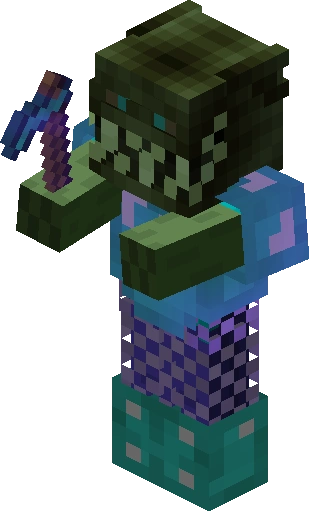
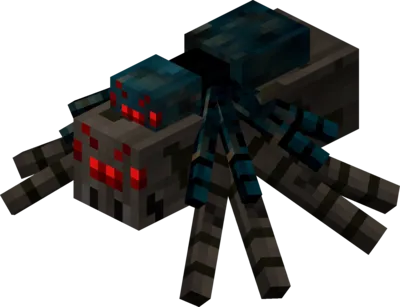
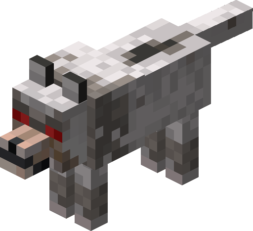
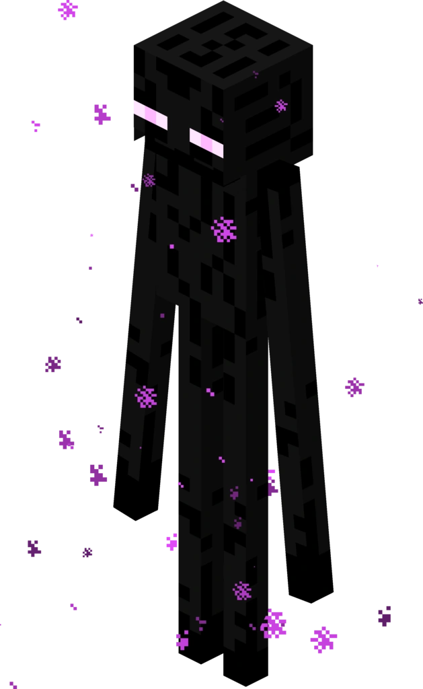
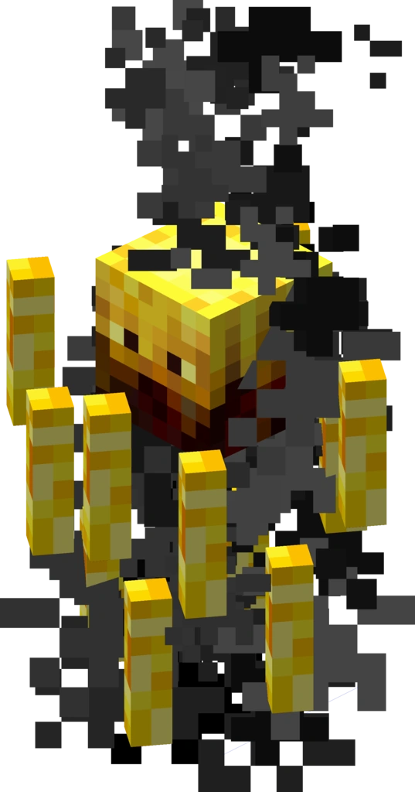
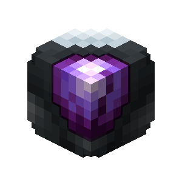
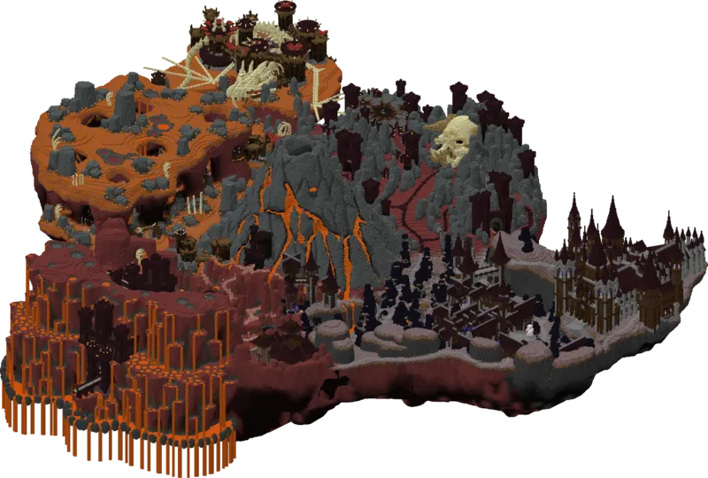
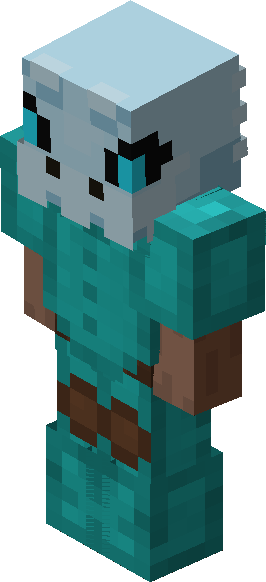
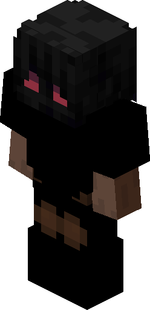
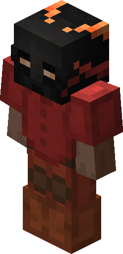

SkyBlock Guide
From your first day to endgame. Verified mechanics, corrected misconceptions, and practical progression advice.
Getting Started
Mods, texture packs, first day checklist, and staying safe from scams.
Progression
Weapon path, accessories, upgrades, minions, and the Garden.
Core Systems
Skills, stats, collections, bestiary, and how everything connects.
Content Areas
Dungeons, slayers, mining, Crimson Isle, the Rift, and more.
Economy
Money methods, mayors, bits, and pet system.
Reference
Tips & tricks, gear progression, and useful resources.
Setup & Mods
Hypixel SkyBlock runs on Minecraft 1.21 (Fabric). While 1.8.9 Forge was the standard for years, the community has shifted to modern Fabric mods that offer better performance and active development. Here's how to get set up.
Minecraft & Fabric Setup
- Install Minecraft Java Edition (1.21.x) from the official launcher.
- Download and install the Fabric Loader for 1.21.
- Drop the Fabric API mod into your
mods/folder (required by all Fabric mods). - Launch the game once to create configuration files, then close it.
- Add your SkyBlock mods (below) to the
mods/folder.
Essential SkyBlock Mods
These three mods form the core SkyBlock experience. Install all of them.
Skyblocker
The most feature-complete SkyBlock mod for Fabric 1.21. Open-source and actively maintained.
- Dungeon features — fancy party finder GUI, secret waypoints, room syncing, minimap, score calculator, puzzle solvers (Blaze, Three Weirdos, Tic-tac-toe), terminal helpers
- Mining — Dwarven Mines/Crystal Hollows waypoints, metal detector solver, powder HUD, Glacite Tunnels helpers
- Farming — Garden HUD with crops/minute and coins/hour, visitor helpers, pest highlighting, Rancher's Boots speed presets
- Slayer — boss health/phase indicators, spawn alerts for Vampire/Enderman/Blaze bosses
- UI — equipment display, AH/Bazaar search overlays, custom health/mana/defense bars, price tooltips, wiki lookup (F4)
- Fairy soul waypoints — enable via
/skyblocker config→ Helpers → Fairy Souls Helper
Configure with /skyblocker config. Compatible with REI and JEI recipe browsers.
SkyHanni
Quality-of-life mod focused on contextual information — the right data at the right time.
- Contextual GUIs — relevant info overlays that appear during specific activities
- Reminders & tips — timely notifications for events, cooldowns, and tasks
- Visual highlights — important items in inventories, mobs in the world, special blocks
- Customization — personalized scoreboard, tab list, and chat formatting
- Best for — Farming, slayer quests, Bingo, Diana, fishing, Rift, mining
Configure with /sh or /skyhanni.
Firmament
Created by the original NotEnoughUpdates developer. Provides item databases, recipe viewers, and custom texture pack support.
- Item list — complete SkyBlock item database with search
- Recipe viewers — crafting, forging, NPC recipes all in one place
- NPC waypoints — find any NPC quickly
- Fairy soul highlighter — visual markers for uncollected souls
- Custom texture support — enables resource packs like Sophie's Books
- Storage overlay — better ender chest and backpack management
Requires Fabric API and Fabric Language Kotlin. Works alongside Skyblocker.
Performance Mods
SkyBlock is demanding. These mods improve FPS significantly:
| Mod | What It Does |
|---|---|
| Sodium | Rendering engine rewrite. The single biggest FPS boost. Required. |
| Lithium | Game logic optimizations (tick speed, mob AI, physics). No config needed. |
| Iris | Shader loader compatible with Sodium. Only needed if you use shaders. |
| ModMenu | In-game mod configuration browser. Not performance, but essential for managing all these mods. |
| FerriteCore | Memory usage reduction. Especially useful if RAM-limited. |
| Entity Culling | Skips rendering entities you can't see. Big help in the Hub. |
Only download mods from official sources — the mod's GitHub releases page, Modrinth, or the developer's official Discord. Mods from random forums or DMs may contain token loggers that steal your account. See Staying Safe for more.
Recommended Settings
- Render Distance: 8-12 chunks (higher tanks FPS in the Hub)
- Particles: Minimal (SkyBlock spawns excessive particles)
- Entity Distance: 75-100% (lower if FPS drops in populated areas)
- GUI Scale: 3 or Auto (SkyBlock menus are designed for this)
- VSync: Off (adds input lag; use a frame limiter instead)
Texture Packs
SkyBlock has thousands of custom items that all look like vanilla Minecraft items by default. Texture packs give each item a unique appearance, making inventory management much faster and helping you spot scam attempts in trades.
FurfSky Reborn
The most popular SkyBlock texture pack. Gives nearly every SkyBlock item a unique, high-quality custom texture with animated elements.
- Custom item textures — unique models for weapons, armor, tools, accessories, and more
- Animated effects — enchantment glows, particle effects on special items
- Rarity-based visuals — item borders and effects that match SkyBlock rarity tiers
- Mob retextures — custom looks for SkyBlock-specific mobs and bosses
- Scam prevention — different textures for similar-looking items make trade scams obvious
Works with Firmament on Fabric 1.21. Uses Firmament's custom texture system (not vanilla CIT).
Hypixel+
Maintained by ic22487 on the Hypixel forums. Supports both 1.8.9 and 1.21. Covers SkyBlock items plus other Hypixel game modes. A good alternative if FurfSky doesn't cover something.
Sophie's Books
A companion pack specifically for enchantment books. Instead of identical generic book textures, each enchant gets a unique design:
- Color-coded backgrounds — different book colors by equipment type (blue = fishing, red = weapon, yellow = farming, etc.)
- Unique emblems — each enchant has a distinctive icon on the book
- Requires Firmament — uses Firmament's texture system for SkyBlock item ID recognition
Available on Modrinth. Highly recommended alongside FurfSky Reborn.
You can stack multiple resource packs. Put FurfSky Reborn on top for item textures, then Sophie's Books below it for enchantment book visuals. Hypixel+ can fill in any gaps at the bottom of the stack.
First Day Checklist
Your first day sets the foundation for everything else. SkyBlock is enormous and intentionally overwhelming — this checklist cuts through the noise and hits the things that actually matter early.
Immediately (First 10 Minutes)
- Complete the tutorial — follow the starter NPCs on your private island. They give you basic tools and explain the SkyBlock Menu.
- Talk to every NPC in the Hub — many give free items or unlock features. The Hub is massive; explore it thoroughly.
- Grab a Booster Cookie — available from Elizabeth in the Community Center for Bits (or buy from AH for ~9-10M). Gives +25% skill XP, the Bits shop access, and other perks for 4 days. If you can't afford one yet, come back to this later.
- Visit the Auction House and Bazaar — just look around. Get familiar with how buying/selling works. Don't spend coins yet.
First Hour
- Set up your island — place your first minion (Cobblestone I). Minions generate resources passively while you're offline.
- Get basic tools — craft a wooden pickaxe, axe, and sword. You'll replace these quickly.
- Mine cobblestone and coal in the Coal Mine → unlock your first collections. Collections gate recipes, so gathering variety matters more than volume.
- Kill mobs on your island and in the Graveyard — start your Combat skill and Bestiary progress.
- Start farming wheat on your island — build a small wheat farm. Farming is steady early XP.
First Session Goals
- Unlock Fast Travel — talk to the Scroll Keeper NPC. You can warp to visited locations using
/warpor the SkyBlock Menu. - Start Fairy Souls — 267 total across all islands. They give SkyBlock XP and backpack slots when turned in to Tia the Fairy (in groups of 5). Use Skyblocker or Firmament waypoints to find them.
- Visit the Mushroom Desert, Spider's Den, and other areas — unlock warps, discover NPCs, and start collections from different zones.
- Craft an Undead Sword — early weapon upgrade from Rotten Flesh Collection I.
- Place more minions — every new minion type (any tier) you craft increases your total minion slots.
Fairy Souls only give SkyBlock XP (10 XP per exchange of 5 souls) and backpack slots. They no longer give stat boosts. Still worth collecting for the XP and storage, but don't expect HP/Defense/Strength from them.
Time-Gated Things to Start Now
These systems have cooldowns or real-time gates. Starting them on day 1 means they'll be ready sooner:
- Elizabeth Upgrades (Community Center) — permanent account-wide upgrades purchased with Bits. Each tier takes real time to unlock the next.
- Minions — they work passively. The sooner you place them, the sooner you accumulate resources and collection counts.
- Experimentation Table — unlocked at Enchanting level 3. Daily minigame that gives enchant books. Start leveling Enchanting early.
Don't stress about doing everything "optimally." SkyBlock rewards breadth of exploration over min-maxing a single activity. Visit every island, talk to every NPC, and try every activity at least once. You'll figure out what you enjoy.
Staying Safe
SkyBlock has a thriving economy and a thriving scam scene. Hypixel will not return stolen items even if the scammer is banned. Prevention is everything.
Account Security
- Enable 2FA on your Microsoft/Minecraft account. This is the single most important thing you can do.
- Never enter credentials anywhere except the official Minecraft launcher or minecraft.net.
- Never click links from chat, DMs, or forums unless you verify them. Use VirusTotal or urlscan.io to check suspicious URLs.
- Your password cannot be "censored" in chat — that's a social engineering trick. Hypixel does not censor passwords.
Mod Safety
The most dangerous threat in SkyBlock isn't a scammer in the Hub — it's a compromised mod file.
Token loggers ("rats") are malicious mods disguised as legitimate ones. They steal your session ID, giving hackers full access to your account without needing your password. Download mods only from official GitHub releases, Modrinth, or the developer's Discord server. Never from random forum links, DMs, or "free mod" sites.
Safe Mod Sources
- Modrinth — verified mod hosting platform
- GitHub Releases — direct from the developer's repository
- Official Discord servers — linked from GitHub/Modrinth
Bannable Mod Behavior
Per Hypixel admin guidance, mods that do any of the following will get you banned:
- Displaying invisible entities (Ghosts, Fels)
- Altering player movement or cancelling vanilla actions
- Automatically interacting with interface elements (auto-solving terminals, experimentation tables)
- Modifying packets or automating clicks
The mods listed in Setup & Mods (Skyblocker, SkyHanni, Firmament) are all community-approved and safe.
Common Scam Types
Trade Scams
- Item switching — scammer shows a valuable item, cancels, then re-offers a visually similar but worthless item. Always hover to read the item name before accepting.
- Overpriced BIN — advertises "cheap" item in chat, but the AH listing is a different, worthless item with a similar name.
- Flex request — asks you to "show your best item" in trade window, then places coins and accepts quickly. Never put items in trade windows you don't intend to give away.
- Crafting scam — sends you materials to craft an item, then takes the finished product and disappears. Or you send materials for crafting and they keep them.
Service Scams
- Carry scam — pays for a dungeon carry and the carrier doesn't complete it, or carrier requests payment upfront and leaves.
- Borrowing scam — "Can I borrow your Hyperion? I'll give it back." No. You won't see it again.
- "Quitting" scam — claims to be quitting and offers free items, but actually steals from you.
Co-op Scams
- Island stealing — scammer joins your co-op, invites an accomplice, and they vote-kick you from your own island.
- False command scam — tells you to run a specific command that actually invites the scammer to your co-op. Never run commands a stranger gives you.
Phishing
- Fake websites — sites that look like Hypixel forums, Mojang, or popular mod sites but harvest your login credentials.
- YouTube links — "tutorial" videos that link to phishing sites disguised as Hypixel or mod download pages.
- Real-world trading (RWT) — buying or selling items for real money violates Hypixel's rules and exposes your email/payment info to scammers. Risks a ban regardless.
How to Protect Yourself
- If it seems too good to be true, it is. Nobody gives away free Hyperions.
- Verify prices — check the Auction House before any trade. Know what items are actually worth.
- Use a texture pack — FurfSky Reborn gives items unique textures, making item-switch scams obvious.
- Check player APIs — use SkyCrypt to verify a player actually owns what they claim.
- Never do two-step trades. Legitimate transactions happen in one trade window.
- Turn on your API before trading. Refuse trades with players who won't enable theirs.
Hypixel will not return items if you get scammed, even if the scammer is banned. Report scammers at support.hypixel.net, but don't expect your items back. Prevention is the only protection.
Core Mechanics
SkyBlock layers dozens of custom systems on top of Minecraft. Understanding these fundamentals early prevents confusion later.
SkyBlock Menu
Open it with /sbmenu (or the Nether Star in slot 9). This is your dashboard — it shows your profile stats, active effects, collections progress, skill levels, and quick links to most game systems. Get comfortable navigating it early; almost everything in SkyBlock connects back to this menu.
Rarity System
Every SkyBlock item has a rarity that determines its stat ranges, reforge power, gemstone slots, and (for accessories) its Magical Power contribution.
| Rarity | Color | Accessory MP | Notes |
|---|---|---|---|
| Common | Gray | 3 | AH price capped at 5x NPC sell |
| Uncommon | Green | 5 | AH price capped at 5x NPC sell |
| Rare | Blue | 8 | |
| Epic | Purple | 12 | |
| Legendary | Gold | 16 | Unique UUIDs on most weapons |
| Mythic | Pink | 22 | Recombobulator on Legendary |
| Divine | Cyan | — | Recombob on Mythic; mining reforges only |
| Special | Red | 3 | Trophy/cosmetic items |
Recombobulator 3000 upgrades an item one rarity tier (up to Mythic). A key endgame upgrade that improves reforge stats, gemstone slot power, and accessory MP.
Economy
SkyBlock has two primary markets, each handling different item types.
Bazaar
Unlocked at SkyBlock Level 7. A commodity exchange for stackable items (enchanted materials, mob drops, farming produce). Works like a stock market with buy orders and sell offers.
- Instant Buy/Sell — immediate transactions at market price
- Buy Orders / Sell Offers — set your price and wait for someone to fill it (better rates)
- Tax — 1.25% on sales (1% with max Bazaar Flipper perk)
- Max 14 simultaneous orders (expandable to 28 via Community Shop)
- Orders expire after 7 days
Bazaar purchases do NOT count toward Collections. Materials must be gathered manually (mining, farming, mob drops) or produced by minions. This is one of the most commonly misunderstood mechanics in SkyBlock.
Auction House
Handles unique and non-stackable items — gear, accessories, pets, rare drops. Two modes:
- Standard Auction — timed bidding, highest bid wins
- BIN (Buy It Now) — fixed price, first buyer gets it
BIN tax: 1% under 10M, 2% for 10M-100M, 2.5% above 100M. Additional 1% collection tax above 1M.
Items on the Bazaar cannot be sold on the AH and vice versa — they don't overlap.
Currencies
Coins are the primary currency, but SkyBlock has several others you will encounter:
- Coins — main currency. Stored in your purse (on hand) or bank. You lose 50% of purse coins on death — always bank your money.
- Bits — earned from Booster Cookies, spent at Elizabeth's Community Shop for upgrades and items.
- Chocolate — produced by the Chocolate Factory, spent on rabbit upgrades and prestige items.
- Essence — 9 types (Wither, Dragon, Spider, Undead, Diamond, Gold, Ice, Crimson, Kuudra). Used to star dungeon gear, upgrade equipment at the Blacksmith, and unlock Essence Shop items.
When you die, you lose 50% of coins in your purse. The bank protects your money — deposit frequently. Bank upgrades increase the interest cap but the basic account is free.
Fast Travel
Getting around SkyBlock efficiently matters. There are several travel systems:
- /warp — teleport to unlocked locations. You unlock warps by visiting them for the first time. Key warps:
/warp hub,/warp garden,/warp mines,/warp end. - Abiphone — a craftable phone (costs ~100K coins) that lets you call NPCs to teleport directly to them. Extremely useful once you have several contacts added.
- Travel Scrolls — consumable items that teleport you to specific locations. Craftable or bought from AH. Good for locations you visit repeatedly (e.g., Dungeon Hub Travel Scroll).
Hub Overview
The Hub was revamped in January 2026 and now contains 19 zones. Key NPCs to know:
- Blacksmith — reforges items, applies Hot Potato Books, handles Essence upgrades
- Thaumaturist — accessory bag power tuning, reforges accessories
- Elizabeth — Community Shop, spends Bits on permanent upgrades
- Bazaar Agent — opens the Bazaar interface
- Auction Master — opens the Auction House
Mobs on your Private Island give no Combat XP. They drop items and count for collections, but if you need Combat XP, fight mobs in public islands (Hub, Deep Caverns, Spider's Den, etc.).
SkyBlock Levels
SkyBlock Levels measure your overall account progression. Earn 100 SkyBlock XP = gain 1 level. XP comes from one-time tasks: leveling skills, completing collections, crafting minions, dungeon milestones, and more.
Key Unlocks
| Level | Unlock |
|---|---|
| 3 | Community Shop (Elizabeth) — Bits upgrades |
| 5 | Garden access, Wardrobe |
| 6 | Auto-Pickup for block/mob drops |
| 7 | Bazaar access |
| 12 | Wizard Portal |
Stat bonuses: +5 Health per level, +1 Strength per 5 levels. These add up significantly over time.
Book of Progression
Awarded at SB Level 25. Upgrades at milestones: Uncommon at 75, Rare at 150, Epic at 225, Legendary at 300, Mythic at 400.
The Book of Progression does NOT auto-upgrade its rarity based on your SB Level. It stays at whatever rarity you received it as (Common initially, requiring manual milestone claims to upgrade). Don't count on it scaling automatically.
Fast Travel
SkyBlock islands are accessed via /warp, the SkyBlock Menu, or Travel Scrolls. Talk to NPCs in each area to unlock their warp.
- Key warps:
/warp hub,/warp barn,/warp park,/warp end,/warp deep,/warp mines - Abiphone (100K coins) — teleport directly to NPCs you've added as contacts
- Travel Scrolls — consumable or reusable items that warp to specific locations
- SkyBlock Menu (
/sbmenu) — dashboard for stats, skills, collections, and fast travel
Bank & Death
- Bank — store coins safely. Interest accrues daily (0.2% base, increased by Museum milestones)
- Death penalty — you lose 50% of purse coins. Bank coins are safe
- Personal Bank (Bits shop) — access bank anywhere without returning to Hub
Other Currencies
| Currency | Source | Used For |
|---|---|---|
| Bits | Booster Cookies (passive) | Elizabeth's shop: God Pots, upgrades, Kat Flowers |
| Motes | Rift activities | Rift-specific items |
| Copper | Garden visitors, contests | Garden plot unlocks |
| Essence (9 types) | Dungeons, salvaging | Gear starring, essence shops |
| North Stars | Jerry's Workshop | Seasonal items |
| Chocolate | Chocolate Factory | CF upgrades and shop |
Sacks & Inventory Management
SkyBlock inventory fills up fast. Sacks store specific item types in bulk, and the Sack of Sacks auto-routes items into the right sack when your inventory is full.
- Crafted from collections — each sack unlocks at a specific collection tier
- Each sack holds one category of items (ores, mob drops, crops, etc.)
- Items auto-deposit when inventory is full (requires Sack of Sacks equipped)
- Items in sacks can be listed on Bazaar directly without withdrawing
| Sack | Contains | Essential For |
|---|---|---|
| Mining Sack | Ores, gems, mining materials | Any mining trip |
| Combat Sack | Mob drops (bones, flesh, etc.) | Grinding, slayers |
| Farming Sack | Crops, seeds | Garden farming |
| Foraging Sack | Wood and logs | Galatea foraging |
| Slayer Sack | Slayer drops | Slayer grinding (unlocked at Slayer 5) |
Get a Sack of Sacks as early as possible. Without it, you need to carry individual sacks and manually sort drops. With it, all drops auto-route to the right sack from one inventory slot — freeing up space and preventing you from missing collection credit because your inventory was full. Craft from 9 different sacks.
Inventory Tools
- Personal Compactor 4000/6000/7000 — auto-compacts items in inventory (e.g., cobble → enchanted cobble). Essential for minions and grinding.
- Personal Deletor — auto-deletes junk items. Configure with care.
- Backpacks — extra storage, accessible from inventory. Jumbo Backpack holds 45 items.
- Ender Chest — accessible from any island. Upgrade pages with community center upgrades.
Profile Types
SkyBlock offers four game modes. Each profile is independent — separate inventories, skills, and progression. You can have up to 5 profile slots. Your first profile is always Standard, but you can create additional profiles in any mode.
Standard (Classic)
The default mode with full access to all game systems. Recommended for new players.
- Full Bazaar and Auction House access
- Trading with all players
- Museum access for donations and milestones
- All islands and warps available
- Co-op support — invite up to 4 other players to share your profile
Standard is the intended experience. All guide content assumes you are playing Standard unless noted otherwise.
Ironman
Self-sufficient mode inspired by RuneScape's Ironman. You earn everything yourself.
- No trading with other players (outside your co-op)
- No Auction House access (except cosmetics and Ironman-exclusive Shen's Auction)
- No Bazaar — restricted to Booster Cookies only
- Can only receive gifts from other Ironman players
- Can convert to Classic after a 35-day waiting period
Mid-to-late game takes significantly longer since you must gather and craft everything. Rewarding if you enjoy self-reliance. Museum is still accessible on Ironman profiles.
Stranded
You never leave your Private Island (plus Garden). The ultimate isolation challenge.
- Can only travel to Private Island and Garden — no warping to any public island
- No AH, no trading, Bazaar Cookies only
- Cannot access the Museum
- Compensations: NPC villagers can be placed on island, crops grow faster, mob level scales with Combat level
Stranded was declared End of Life in August 2025. One final update is planned to fix major issues, but no new content will be added. Not recommended for new profiles.
Bingo
Monthly event during the first 7 days of each real-life month. Requires SB Level 10+.
- Temporary profile in a dedicated 5th slot (no need to delete existing profiles)
- No AH, no Bazaar, no trading, no Museum
- +30% Skill XP bonus to compensate for restricted economy
- Complete a 5x5 Bingo Card of Personal Goals (20) and Community Goals (5)
- Completing the card earns a Bingo Card item redeemable on any profile
- Bingo Ranks from the Alixer NPC provide scaling potion effects
- Profile is deleted at the end of the event — only rewards carry over
Quick Comparison
| Feature | Standard | Ironman | Stranded | Bingo |
|---|---|---|---|---|
| Auction House | Yes | No | No | No |
| Bazaar | Yes | Cookies only | Cookies only | No |
| Trading | Yes | No | No | No |
| Museum | Yes | Yes | No | No |
| All Islands | Yes | Yes | No | Yes |
| Permanent | Yes | Yes | Yes | No (monthly) |
If you are new to SkyBlock, start with Standard. The economy and trading systems are core to progression, and learning them is part of the experience. Ironman is a great second profile once you understand the game. Try Bingo for a fun monthly challenge once you hit SB Level 10.
Skills
SkyBlock has 12 main skills plus 2 cosmetic skills. Each level grants permanent stat bonuses and unlocks content. Your Skill Average (the mean of all non-cosmetic skill levels) is one of the key progression metrics — it determines SkyBlock Level milestones and access to some content.
All Skills at a Glance
| Skill | Cap | Stats at Max | How to Level |
|---|---|---|---|
| Combat | 60 | +30% CC, +240% mob damage | Kill mobs, slayers, dungeons |
| Farming | 60* | +240 HP, +240 Farming Fortune | Harvest crops in Garden |
| Mining | 60 | +106 DEF, +240 Mining Fortune | Mine ores, commissions |
| Foraging | 54 | +86 STR, +200 Foraging Fortune | Chop trees on Galatea |
| Fishing | 60 | +240 HP, +10% Treasure Chance | Fish, kill sea creatures |
| Enchanting | 60 | +106 INT, +30 Ability Damage | Experimentation Table, enchanting |
| Alchemy | 60* | +86 INT, +50% potion duration | Brew potions |
| Taming | 60* | +60 Pet Luck, +60% Pet XP | Earn pet XP (active pet) |
| Carpentry | 60* | +49 HP, furniture recipes | Craft SkyBlock items |
| Dungeoneering | 50 | Dungeon stat scaling | Complete dungeon floors |
| Hunting | 25 | +25 Hunter Fortune, charm chance | Hunt mobs, fuse Shards |
* Default cap 50, raised to 60 via in-game progression (Jacob's Contests, George pet donations, etc.).
Foraging cap is 54 (LIV), not 50. Levels 51–54 are unlocked via Fig Log Collection T9, Mangrove Log Collection T9, and Agatha's Milestone 4 shop. The NEU repo still shows 50 — the wiki is authoritative here.
Cosmetic Skills
These don't count toward your Skill Average:
- Runecrafting (cap 25) — leveled by killing Runic mobs and fusing runes. Unranked players capped at level 3. Rank multipliers: VIP 1.1x, VIP+ 1.25x, MVP 1.5x, MVP+ 2x, MVP++ 3x.
- Social (cap 25) — leveled by island visits: 10 XP per unique guest, 2 XP/min with guests present, 1 XP/min visiting others.
XP Progression Table
All main skills share the same XP table. The XP required increases exponentially — levels 1–20 come quickly, the real grind starts at 25+.
| Level | XP for This Level | Total XP | Milestone |
|---|---|---|---|
| 1 | 50 | 50 | |
| 5 | 500 | 1,175 | Easy early goal |
| 10 | 3,500 | 9,925 | ~10K total |
| 15 | 20,000 | 67,425 | |
| 20 | 200,000 | 522,425 | ~500K total |
| 25 | 700,000 | 3,022,425 | Grind begins (~3M) |
| 30 | 1,200,000 | 8,022,425 | ~8M total |
| 35 | 1,700,000 | 15,522,425 | |
| 40 | 2,200,000 | 25,522,425 | ~25M total |
| 45 | 2,750,000 | 38,072,425 | |
| 50 | 4,000,000 | 55,172,425 | ~55M — huge milestone |
| 55 | 5,500,000 | 79,672,425 | |
| 60 | 7,000,000 | 111,672,425 | ~112M — endgame |
XP Multipliers
Skill XP sources stack multiplicatively. Layer these for faster leveling:
- Booster Cookie — +20% Wisdom (all skill XP) while active
- God Pot — various Wisdom bonuses per skill type
- Pet perks — many pets give skill-specific XP boosts (Wolf for Combat, Ocelot for Foraging, etc.)
- Skill-specific gear — Lapis Armor (+200% mining ore XP only), farming tools, etc.
- Bestiary milestones — bonus Combat XP from kill count brackets
Combat
Combat is the skill that governs your effectiveness in direct confrontation. Unlike passive skills, every level of Combat directly multiplies the damage you deal to every mob in the game — it is the single most impactful offensive skill. Combat also unlocks locations (Spider’s Den at Combat I, The End at Combat XII), gear recipes, and the Warrior passive that stacks to +210% mob damage at level 60. If you want to kill things faster, this is the skill to prioritize.
Skill Overview
Combat has a maximum level of 60. Every level grants the same two stat bonuses, plus coins and SkyBlock XP. The total XP required to hit level 60 is approximately 306,000 XP.
| Level | XP to Level | Cumul. XP | Crit Chance (Level) | Damage (Level) | Key Unlock |
|---|---|---|---|---|---|
| I | 50 | 50 | +0.5% | +4% | Spider’s Den access |
| II | 125 | 175 | +0.5% | +4% | — |
| III | 200 | 375 | +0.5% | +4% | — |
| IV | 300 | 675 | +0.5% | +4% | Artisanal Shortbow, Mercenary Sword, Squire Armor, Celeste Armor |
| V | 200 | 375 | +0.5% | +4% | — |
| VIII | 1,500 | 4,425 | +0.5% | +4% | Mercenary Armor, Starlight Armor |
| X | 3,500 | 9,925 | +0.5% | +4% | Displaced Leech |
| XII | 7,500 | 22,425 | +0.5% | +4% | The End access, Ender Armor + Accessories |
| 60 (max) | — | ~306,000 | +30% total | +240% total | — |
Warrior Passive
The Warrior bonus is a passive damage multiplier against mobs that scales with every Combat level. It is separate from your base Damage stat and applies directly to all mob kills:
- Combat 1–50: +4% damage to mobs per level (200% total at level 50)
- Combat 51–60: +1% damage to mobs per level (+10% additional)
- Total at Combat 60: +210% damage to mobs
Combat Wisdom (CW) multiplies all Combat XP you earn from kills by 1 + CW/100. At CW 20, every mob gives 1.2× XP. You can gain up to +34 base CW from slayer boss kills (T1–T3 give +1 each, T4–T5 give +2 each), plus bonus CW from Essence Shop perks and specific island areas. Prioritizing slayer progression directly accelerates leveling speed.
Combat XP Sources — Mob Values
Below are verified base Combat XP values per kill. Actual XP gained is multiplied by your Combat Wisdom modifier. Private Island mobs grant zero Combat XP.
| Location | Mob | Base Combat XP | Notes |
|---|---|---|---|
| Graveyard (Hub) | Graveyard Zombie | 6 | Starter mob; max 200 bestiary kills |
| Graveyard (Hub) | Zombie Villager | 7 | Slightly better than basic zombie |
| Hub Crypts | Crypt Ghoul | 36 | Far better than Graveyard; max 40,000 kills |
| Hub Crypts | Golden Ghoul | 50 | Rare spawn; high XP per kill |
| Deep Caverns | Lapis Zombie | 12 | — |
| Deep Caverns | Miner Zombie (Lv 15) | 20 | — |
| Deep Caverns | Miner Zombie (Lv 20) | 24 | — |
| Deep Caverns | Emerald Slime | 12 | — |
| Spider’s Den | Splitter / Weaver / Dasher Spider (low level) | 9–10 | Early spider grind |
| Spider’s Den | Splitter / Weaver / Dasher Spider (Lv 42+) | 28–36 | Good mid-early XP |
| The Park | Howling Spirit / Pack Spirit | 22 | Wolf family for Wolf Slayer |
| The Park | Old Wolf | 40 | Rare, good XP |
| The End | Enderman (Lv 42) | 40 | Requires Combat XII |
| The End | Enderman (Lv 45) | 42 | Most common spawn |
| The End | Enderman (Lv 50) | 44 | — |
| The End | Zealot | 40 | Priority target for Summoning Eyes; can’t be hit by arrows |
| The End | Voidling Fanatic | 110 | Located in the Void Sepulture; far better XP than Zealots |
| The End | Voidling Extremist | 750 | High-value kill in Void Sepulture |
| The End | Obsidian Defender | 40 | — |
| Crystal Hollows | Key Guardian | 60 | Automaton area; ~5% robot part drops |
| Crystal Hollows | Worm | 30 | — |
| Crimson Isle | Flare (Blaze type) | 120 | Excellent density |
| Crimson Isle | Flaming Spider | 120 | — |
| Crimson Isle | Mushroom Bull | 120 | — |
| Crimson Isle | Kada Knight | 90 | — |
| Crimson Isle | Bal (boss) | 1,000 | Hit-based; any bow works |
| Crimson Isle | Bladesoul (boss) | 4,000 | Rare spawn |
| Zombie Slayer | Revenant Sycophant (T3+ miniboss) | 360 | Spawns during slayer quest |
| Zombie Slayer | Revenant Champion (T4+ miniboss) | 600 | — |
| Zombie Slayer | Deformed Revenant (T4+ miniboss) | 1,200 | — |
| Zombie Slayer | Atoned Champion (T5 miniboss) | 900 | — |
| Zombie Slayer | Atoned Revenant (T5 miniboss) | 1,600 | — |
| Dwarven Mines | Ghost | 100 | Nerfed drop rate; not efficient |
| Dwarven Mines | Glacite Walker | 40 | — |
The Void Sepulture (added May 2021) contains Voidling Fanatics that give 110 Combat XP each — nearly 3× what a Zealot gives. If you’re farming The End for XP rather than Summoning Eyes, Voidling Fanatics are objectively better. The rare Voidling Extremist gives 750 XP per kill.
Leveling Methods by Stage
Early Game: Combat 1–15
Start by talking to Bramass Beastslayer at the Graveyard to activate Bestiary tracking — do this immediately. Kill Graveyard Zombies (6 XP) and Zombie Villagers (7 XP) until Combat IV, then switch to Hub Crypts for Crypt Ghouls (36 XP). At Combat I you gain access to Spider’s Den; higher-level Splitter/Weaver/Dasher Spiders at the back of the den give 28–36 XP each and are a solid alternative.
- XP rate: ~1,000–5,000 XP/hr depending on gear and location
- Gear req: Basic sword; Squire Armor at Combat IV
- Priority: Unlock Spider’s Den, start Zombie Slayer T1 as soon as you can (costs 2,000 coins)
Mid Game: Combat 15–30
At Combat XII, The End unlocks — this is a major jump. Endermen give 40–44 XP and Zealots give 40 XP with high density. However, Voidling Fanatics in the Void Sepulture give 110 XP and are the better grinding target if you don’t need Summoning Eyes. Simultaneously push Zombie Slayer T2–T3; the minibosses that spawn (T3+) give 360–600 XP each and dramatically accelerate quest completion speed.
- XP rate: ~30,000–100,000 XP/hr (slayer miniboss farming at high end)
- Gear req: Young Dragon or Strong Dragon Armor (dungeonized); Hyper Cleaver or Livid Dagger
- Priority: Dungeonize your armor. Non-dungeonized gear gets zero Catacombs scaling in dungeons.
Late Game: Combat 30–50
Dungeon runs F5+ become the primary XP engine alongside slayer rotation. Crimson Isle mobs (Flares, Flaming Spiders — 120 XP each) are excellent open-world XP without the slayer overhead. Push Wolf Slayer to 5 to unlock Enderman Slayer, then work Eman T1 carefully (Combat 35+ recommended for T2). The T4+ slayer minibosses are where the XP really concentrates.
- XP rate: ~100,000–300,000 XP/hr (F5–F6 dungeons with good gear)
- Gear req: SA armor or better; Cata 14 for F5, Cata 24 for F7
Endgame: Combat 50–60
F7 runs and T4–T5 slayer farming. Bestiary milestone spikes (see Bestiary section) provide massive one-time XP injections. At 100 milestones you’re getting 1,000,000 XP per milestone claim — the single most efficient XP source in the game at this point.
- XP rate: ~300,000–500,000+ XP/hr
- Gear req: Full Necron 3–5☆, Cata 24+
Bestiary System
The Bestiary tracks kills on 214 mobs across SkyBlock. Every 10 family milestones, you earn +1 HP permanently. Every 5 milestones, you receive Combat XP that scales steeply with milestone number. Kill credit is limited to the top 5 damage dealers per mob, except in Dungeons and Kuudra, where specific mobs award shared credit to your whole party.
Shared Kill Credit in Dungeons
These mobs give bestiary credit to everyone in the dungeon party: Lost Adventurer, Angry Archaeologist, Shadow Assassin, King Midas, Mimic, Wither Miner, Wither Husk, Wither Guard, Terracotta. Running dungeons is effectively free bestiary progress on all these families.
Milestone XP Rewards (verified from wiki)
Claimed in batches; not affected by Combat Wisdom, but IS affected by pet XP boosts.
| Milestone | Combat XP Granted | Milestone | Combat XP Granted |
|---|---|---|---|
| V | 5,000 | LV | 150,000 |
| X | 10,000 | LX | 175,000 |
| XV | 20,000 | LXV | 200,000 |
| XX | 30,000 | LXX | 250,000 |
| XXV | 45,000 | LXXV | 300,000 |
| XXX | 50,000 | LXXX | 350,000 |
| XXXV | 65,000 | LXXXV | 400,000 |
| XL | 80,000 | XC | 500,000 |
| XLV | 100,000 | XCV | 750,000 |
| L | 125,000 | C (and every 10 after) | 1,000,000 |
Priority Families to Farm
- Skeleton Soldier / Zombie Soldier (Catacombs): Max 40,000 kills; shared party credit — free progress every run
- Zealots (The End): Max 100,000 kills (bracket 3); very high cap
- Voracious Spider / Silverfish (Spider’s Den): Max 40,000 kills; easy bracket 1 farming
- Flare (Crimson Isle): Max 100,000 kills; bracket 1 with excellent base XP
- Ghost (Dwarven Mines): Max 250,000 kills; extremely high cap but slow spawns
Gear Progression
Stage 1 — Combat I–XI: Getting Started
Use whatever drops until Combat IV, then craft Squire Armor (unlocked at IV) and the Mercenary Sword (+20 Strength). These are purpose-built early-game pieces. Alternatively, Celeste Armor has decent early defense. Bow users can start with the Artisanal Shortbow (600 coins, good for Bal runs permanently — Bal is hit-based, not damage-based).
Stage 2 — Combat XII: Ender Armor Era
Combat XII unlocks The End and Ender Armor + accessories (Ender Necklace, Cloak, Belt, Gauntlet). Ender Armor has solid stats for this phase. Pair with a Super Cleaver → Hyper Cleaver (175 Damage, 100 Strength, 100 Crit Damage via NPC upgrade) — this is when you transition off AOTE-level weapons.
Aspect of the Dragons (AOTD) is a community-labeled “NPC item” — it looks flashy but offers nothing over the Hyper Cleaver path. AOTE becomes inferior to a kitted Hyper Cleaver at Cata 7+. The correct weapon progression is: Super Cleaver → Hyper Cleaver → Giant Cleaver → Bouquet of Lies → Hyperion.
Stage 3 — Cata 12–14: Dragon Armor
Young Dragon Armor can be dungeonized at Cata 10, Strong Dragon at Cata 12. Non-dungeonized armor receives zero Catacombs scaling in dungeons. Reforge recommendations: Fierce or Giant on helmet, Loving on boots, Fierce elsewhere for damage. Push to Cata 14 to unlock F5 — skip F4 entirely (community calls it “F4 is aids”; grind F3 until Cata 14–15 then jump straight to F5).
Stage 4 — F5 Era: Shadow Assassin Armor
Shadow Assassin (SA) Armor requires Floor 5 completion to equip (not a specific Cata level). It provides excellent stats for a mid-game dungeon set. Equip requirement for the Livid Dagger is also Floor 5 completion. At this stage the weapon path is: Hyper Cleaver → Livid Dagger (Spider Slayer V). For survival, keep Bonzo’s Mask as a swap piece — wear it only when you need the death prevention; wearing it full-time breaks SA’s set bonus.
Stage 5 — Necron’s Armor (Endgame)
Necron’s Armor requires Cata XXIV to equip and drops from F7. Each piece gives +225 Strength. Full set cost runs approximately 60–80M coins across all 4 pieces; Helmet and Boots are cheapest, Chestplate is most expensive. Star it up as budget allows (5☆ gives significant stat gains). For weapons, the Giant Cleaver (~6.8M) is a strong pre-Hyperion step. Hyperion (Necron’s Handle + F7 Wither Blade) is the endgame target but requires significant coin investment.
| Stage | Armor | Weapon | Requirement | Approx. Cost |
|---|---|---|---|---|
| Early | Squire / Celeste Armor | Mercenary Sword | Combat IV | <100K |
| Mid-Early | Ender Armor | Hyper Cleaver | Combat XII | 500K–2M |
| Mid | Young / Strong Dragon (dungeonized) | Hyper Cleaver | Cata 10–12 | 2–8M |
| Mid-Late | Shadow Assassin Armor | Livid Dagger | F5 clear | 10–25M |
| Late | Necron’s Armor (3–5☆) | Giant → Hyperion | Cata XXIV | 60–200M+ |
Combat Pets
S-Tier: Universal Damage
Ender Dragon Pet (Legendary) — Ender Presence: Increases all stats by 10%. Superior: Additional 10% buff to core combat stats. Best-in-slot for virtually every combat build. Extremely expensive (1B+ for level 100 Legendary). The single most valuable pet in the game.
Baby Yeti Pet — Cold Breeze: Converts Strength into Defense at a ratio. Grants ice shields during Enderman Slayer. Essential survival tool for Eman T3+ and F6–F7 dungeons. Cheap relative to its impact.
A-Tier: Specialized Damage
Blaze Pet — Blaze Slayer perk: +0.3% more Combat XP from Blazes per level (up to +30% at level 100 Legendary). Drophammer: Break fire pillars. Best-in-slot for Blaze Slayer content. Stack with Wisp Pet’s Blaze XP bonus from the Aug 2022 update.
Tarantula Pet — Arachnid Slayer: Bonus Crit Damage scaling; excellent for Spider Slayer grinding. Source: Spider Slayer drops.
Enderman Pet — Enderman Slayer perk. Boosts XP and damage against Endermen. Pairs naturally with Voidedge Katana for Enderman content.
Griffin Pet — Only usable during Diana Mayor elections. Buffs Mythological Ritual mob quality and drops. Essential if you’re doing Diana for profit.
B-Tier: Combat Utility
Lion Pet — Self-Control: First hit on a mob deals 25% of target’s current HP as bonus damage (up to 2× your Damage stat cap). Excellent for bosses and dungeon rooms. Source: Jungle Temple. Epic rarity is sufficient.
Black Cat Pet — Raises the speed cap by 100. Synergizes with Warden Helmet for speed-based damage bonuses. Niche but powerful for specific setups.
Hound Pet — Zombie Slayer bonus; boosts XP and drops from Revenant content.
Wolf Pet — Wolf Slayer bonuses; useful during Wolf Slayer grind.
C-Tier: Early/Budget Picks
Bat Pet — Craftable; gives Magic Find and minor combat stats. Good filler early game before better pets are available.
Zombie Pet / Skeleton Pet / Spider Pet — Craftable from Bazaar materials. Minor stat bumps specific to their mob type. Useful when starting out but quickly outgrown.
Ghoul Pet — Drops from Crypt Ghoul farming in Hub; one of the first “real” combat pets new players encounter. Outclassed quickly.
Use Lion Pet for dungeon bossing, Baby Yeti for Enderman Slayer, and a slayer-specific pet (Blaze, Tarantula, Hound, Enderman) for slayer grinds. Ender Dragon replaces everything at endgame. When pet leveling, equipping a pet with relevant XP boosts from enchants (Champion on sword, Toxophilite on bow) speeds up its level progression alongside yours.
Slayer Progression
Slayers are the backbone of late-game Combat XP. Each quest requires earning a set amount of Combat XP from the target mob type, then defeating a boss. Higher tiers spawn minibosses that give massive XP, accelerating boss spawn speed. All 6 slayer types share the same global Combat Wisdom bonus structure.
Unlock Chain
- Zombie Slayer — Available by default. Higher Combat level unlocks higher tiers.
- Spider Slayer — Requires: defeat a Revenant Horror T2
- Wolf Slayer — Requires: defeat a Tarantula Broodfather T2
- Enderman Slayer — Requires: defeat a Sven Packmaster T4
- Blaze Slayer — Requires: defeat a Voidgloom Seraph T3
- Vampire Slayer — Requires: Secured Globulate Timecharm (Rift)
Slayer XP Requirements per Level
| Slayer | LVL 1 | LVL 2 | LVL 3 | LVL 4 | LVL 5 | LVL 6 | LVL 7 | LVL 8 | LVL 9 |
|---|---|---|---|---|---|---|---|---|---|
| Zombie | 5 | 15 | 200 | 1,000 | 5,000 | 20,000 | 100,000 | 400,000 | 1,000,000 |
| Spider | 5 | 25 | 200 | 1,000 | 5,000 | 20,000 | 100,000 | 400,000 | 1,000,000 |
| Wolf | 10 | 30 | 250 | 1,500 | 5,000 | 20,000 | 100,000 | 400,000 | 1,000,000 |
| Enderman | 10 | 30 | 250 | 1,500 | 5,000 | 20,000 | 100,000 | 400,000 | 1,000,000 |
| Blaze | 10 | 30 | 250 | 1,500 | 5,000 | 20,000 | 100,000 | 400,000 | 1,000,000 |
Slayer Quick Reference
| Slayer | Boss | Location | Key Drops | Key Notes |
|---|---|---|---|---|
| Zombie | Revenant Horror | Everywhere (Graveyard recommended) | Foul Flesh, Revenant Catalyst, Revenant Falchion, Scythe Blade | T3+ spawns Revenant Sycophant minibosses (360 XP each) |
| Spider | Tarantula Broodfather | Spider’s Den | Tarantula Web, Tarantula Silk, Digested Mosquito, Flower of Truth | Reworked July 2025. Backstab, Noxious Paralysis, Web of Lies mechanics added. T3 is significantly harder than before. |
| Wolf | Sven Packmaster | The Park | Wolf Tooth, Golden Tooth, Red Claw Artifact, Overflux Power Orb | Required to unlock Enderman Slayer (beat T4) |
| Enderman | Voidgloom Seraph | The End | Null Sphere, Null Atom, Voidedge Katana, Juju Shortbow (LVL 5) | Community recommends Combat 35–40 for T2. T1 is accessible earlier. Baby Yeti Pet essential. |
| Blaze | Inferno Demonlord | Crimson Isle | Derelict Ashe, Mage Blood, Scorched Books, Kuudra-related unlocks | Requires completing Eman T3 first. Blaze Pet dramatically increases Blaze XP. |
Each new slayer boss tier you clear for the first time permanently grants Combat Wisdom: T1–T3 give +1 CW each, T4–T5 give +2 CW each. Completing all tiers of all slayers nets +34 base CW, meaning every mob you ever kill gives 34% more Combat XP. This alone is reason enough to clear every slayer type to T5.
Enchantment Recommendations
Sword Enchants (Priority Order)
| Enchant | Effect | Priority | Notes |
|---|---|---|---|
| Sharpness V | +25% damage (all mobs) | Core | First thing to max |
| Critical V | +50% crit damage | Core | — |
| Ender Slayer VI | +60% damage to Ender mobs | High (for End farming) | Excellent for Enderman/Zealots |
| Smite VI | +60% damage to undead | High (for Zombie Slayer) | Stacks with Sharpness |
| Bane of Arthropods VI | +60% damage to arthropods | High (for Spider Slayer) | Stacks with Sharpness |
| First Strike IV | +25% damage on first hit | Medium | Excellent for burst; combine with Prosecute |
| Giant Killer VII | Up to +35% damage based on enemy HP vs yours | Medium | Scales well in late game vs high-HP targets |
| Champion X | +10% Combat XP; bonus coins + exp orbs on 2nd hit | Medium (stacking ench) | Upgrades by earning Combat XP; can’t be combined in anvil |
| Looting III | Increased drop chance | Utility | More slayer tokens per run |
| Scavenger III | Extra coins per kill | Utility | Good passive income during grinding |
| Vampirism VI | Lifesteal on kill | Survivability | Reduces potion consumption |
Applying Ultimate enchants via anvil still requires the listed Enchanting level — it is NOT just for the Enchanting Table. At Enchanting 22 you can apply Ultimate Wise (Ench 20) but NOT Soul Eater (31), Swarm (35), or Fatal Tempo (37). Plan your Enchanting progression accordingly. One For All is community-labeled as a “trap pick” — avoid it.
Bow Enchants (for Archer Builds)
| Enchant | Effect | Priority |
|---|---|---|
| Power VI | +60% bow damage | Core |
| Infinite Quiver VI | Arrows not consumed | Core |
| Snipe III | +10% damage per block of distance | High |
| Punch II | Knockback mobs | Utility |
| Toxophilite X | +10% Combat XP & +10 Crit Chance at max level | Medium (stacking ench) |
Combat-Relevant Accessories
| Accessory | Effect | Source | Notes |
|---|---|---|---|
| Hunter Talisman → Ring → Artifact | +2% / +5% / +10% Combat XP | Wolf Slayer drops | Additive with Viking’s Tear brew and Slayer CW buff |
| Spider Talisman → Ring → Artifact | Spider damage bonus | Spider Slayer drops | Equip req: Spider Slayer 1–6 (scales) |
| Zombie Talisman → Ring → Artifact | Zombie damage bonus | Zombie Slayer drops | — |
| Bat Talisman | Bonus Speed + Combat stats | Spooky Festival / Bats | Easy early MP source |
| Ender Artifact | Ender mob damage bonus | Enderman Slayer / The End | — |
| Feather Talisman → Ring | Fall damage immunity / reduction | Kills / Collection | Quality of life for End farming |
| Tarantula Talisman | +5% Crit Damage | Spider Slayer drops | Requires Spider Slayer 6 to equip. Cannot be used before then. |
| Book of Progression | Auto-upgrades from Common to Mythic at SB Level 25 | Free from SB Level 25 claim | Best free accessory in the game; get it the moment you hit SB 25 |
The Tarantula Talisman requires Spider Slayer 6 to equip — NOT Spider Slayer 4. Even if it drops or you buy it on AH, you cannot use it until Spider Slayer 6. Many players store it in their ender chest and forget it’s not contributing Magic Power.
Common Mistakes
AOTD (Aspect of the Dragons) is labeled a “trap pick” by the community. It looks impressive but underperforms against the Hyper Cleaver path. AOTE (Aspect of the End) becomes inferior to a properly-enchanted Hyper Cleaver as early as Cata 7. The correct progression is Super Cleaver → Hyper Cleaver → Giant Cleaver, not AOTD.
Non-dungeonized armor receives zero Catacombs level scaling inside dungeons. Even Strong Dragon Armor needs to be dungeonized (requires Cata 12) to benefit. Always check the item’s tooltip for “Dungeon” designation before assuming it scales.
- Skipping F5 for F7: F4 is notoriously unrewarding. Grind F3 until Cata 14–15, then go directly to F5. Never waste time in F4 progression.
- Starring transitional gear: Stars 4–5 on gear you’ll replace within a few sessions are wasteful. Star up SA to 3☆ max if you’re actively pushing to Necron.
- Wither Cloak Sword for F6 survivability: This item requires F7 completion. It’s locked behind the exact content you’re trying to reach. Don’t plan your F6 setup around it.
- Spider Slayer T3 unprepared: Spider Slayer was reworked in July 2025. Backstab (+100% damage from behind), Noxious Paralysis (-50% healing, stacking speed debuff), and Web of Lies (disables AOTE teleport) make T3 dramatically harder than T2. Pre-2025 guides are useless here.
- Enderman Slayer T2 too early: Community recommends Combat 35–40 for comfortable T2. At Combat 25 you’re operating at a ~40% damage multiplier deficit compared to recommended level. Start with T1s.
- Ignoring bestiary: Talk to Bramass Beastslayer immediately. Every mob kill without bestiary tracking is free milestone XP you’re discarding.
Money-Making Through Combat
| Method | Approx. Income | Requirement | Notes |
|---|---|---|---|
| Zealot Farming (Eye drops) | 5–15M+/hr on lucky sessions | Combat XII | Inconsistent; Eye of Ender drops are RNG. Average is lower. |
| Enderman Slayer T3–T4 | Varies; Juju Shortbow ~12M | Eman Slayer LVL 3+ | Juju requires Eman LVL 5; profitable long-term investment |
| Zombie Slayer T4–T5 | Scythe Blade, Revenant Catalyst; 2–8M/hr | Zombie LVL 4+ | Consistent income, good for funding further upgrades |
| Spider Slayer T3–T4 | Tarantula Web, Silk, Flower of Truth; variable | Spider LVL 3+ | Market prices fluctuate; verify on Bazaar before committing |
| Wolf Slayer T4–T5 | Red Claw Ring/Artifact, Overflux; 1–5M/hr | Wolf LVL 4+ | Red Claw Ring is often the better flip; Artifact cost ≈ craft cost |
| F5–F7 Dungeon Runs | 5–50M+/drop (SA Chestplate, Shadow Fury, etc.) | Cata 14–24 | Most consistent endgame income; rare drops skew averages |
| Crimson Isle (Flares) | ~2–4M/hr (Blaze Slayer + drops) | Blaze Slayer unlock | Open-world; good XP/hr alongside income |
| Diana Mayor (Mythological) | 75–162M/hr (Deific Spade tier) | Diana as Mayor, spade + Griffin Pet | Only available during Diana elections; skill-gated by pet quality |
F7 farming with a coordinated group is the most reliable high-income combat activity. A SA Chestplate drop (~40M) or Shadow Fury (~15M) can pay for an entire session. Between F7 runs, rotate slayer quests for consistent Slayer XP income and steady mid-tier drops. Don’t try to sustain yourself purely on RNG Summoning Eyes from Zealot farming — the Voidling Fanatic XP is better and Eye drops are a bonus, not a strategy.
Farming
Farming is the skill that governs crop harvesting, and it works differently from every other skill in one critical way: your Farming Fortune (☘) stat determines how many extra crops drop per break. A higher Fortune doesn’t make you level faster—it makes each block you break more valuable in coins. This creates a clean split between two goals: gaining Farming XP (gated by blocks broken per second and crop XP values) versus generating coins (gated almost entirely by Farming Fortune). The Garden is the only viable place to do either at scale, since Farming Fortune is disabled on your Private Island and public islands can’t be customized.
Skill Overview
Farmhand — The Core Passive
Every Farming level grants +4 Farming Fortune via the Farmhand ability. At Farming 50, that’s +200 Fortune; at the hard cap of Farming 60, it’s +240. This is one of the largest single sources of Farming Fortune in the early game and scales all the way to endgame.
Each level also grants +2–5 HP (scaling up at higher tiers) and escalating coin rewards, plus SkyBlock XP (+5/level at 1–10, +10/level at 11–50, +30/level at 51–60).
Level Cap Raising (50 → 60)
Farming’s default cap is level 50. You can raise it up to level 60 by earning Gold medals at Jacob’s Farming Contests—one per unique crop type—then purchasing each cap increase from Anita at the Farmhouse using Jacob’s Tickets.
| Target Level | Gold Medals Required | Jacob’s Tickets |
|---|---|---|
| 51 | 1 | 0 |
| 52 | 1 | 50 |
| 53 | 1 | 50 |
| 54 | 1 | 100 |
| 55 | 1 | 100 |
| 56 | 2 | 150 |
| 57 | 2 | 150 |
| 58 | 2 | 200 |
| 59 | 2 | 250 |
| 60 | 3 | 500 |
Spread your contest wins across different crops. Each unique crop type grants one cap raise, so farming the same crop repeatedly doesn’t help. You need 10 Gold medals from 10 different crops to unlock Farming 60.
Key Unlock Milestones
| Farming Level | What Unlocks |
|---|---|
| 10 | Farm Armor (+40 FF), Lotus Equipment (Mk. I) |
| 15 | Rabbit Armor (+70 FF), Mk. II Tools, Animal Axes |
| 18 | Farmer Boots (scales to +60 FF at Farming 60) |
| 20 | Blossom Equipment, Mk. III Tools |
| 21 | Rancher’s Boots (adjustable speed cap — essential for farming) |
| 25 | Melon Armor (+70 FF) |
| 30 | Cropie Armor (+90 FF) |
| 35 | Squash Armor (+110 FF) |
| 40 | Fermento Armor (+130 FF) — significant mid-game spike |
| 45 | Helianthus Armor (+150 FF) — best non-endgame set |
Farming XP Per Crop
Farming XP is granted per crop block broken, not per item dropped. Farming Fortune, Crop Fortune, and any drop-multiplier have zero effect on XP gain. Only blocks broken per second matters for XP rate.
A common misconception is that Farming Fortune improves XP gain. It does not. More drops means more coins per hour, but your XP per hour depends entirely on how fast you break blocks. Mushrooms (+6 XP each) are king for XP grinding; Sugar Cane and Cactus (+2 each) are the worst.
| Crop | XP per Block | Notes |
|---|---|---|
| Red Mushroom | +6 | Best XP crop; spreads naturally, no replanting |
| Brown Mushroom | +6 | Same as Red; unlocked at Garden Level 9 |
| Mushroom Spore | +6 | Crimson Isle only; cannot be grown in Garden |
| Glowing Mushroom | +6 | Public island only (Glowing Mushroom Cave) |
| Pumpkin | +4.5 | Highest Garden-farmable non-mushroom crop |
| Wheat | +4 | Default starter crop; needs Replenish to avoid replanting |
| Carrot | +4 | |
| Potato | +4 | |
| Melon | +4 | Best early coin crop alongside Pumpkin |
| Cocoa Beans | +4 | |
| Nether Wart | +4 | Soul Sand substrate; no water needed |
| Moonflower | +4 | Garden-exclusive; unlocked at Garden Level 11 |
| Sunflower | +4 | Garden-exclusive; unlocked at Garden Level 11 |
| Wild Rose | +4 | Garden-exclusive; unlocked at Garden Level 12 |
| Sugar Cane | +2 | Avoid for XP grinding; decent coins/hr with Fortune |
| Cactus | +2 | Avoid for XP; Cactus Knife provides instant break speed bonus |
| Red Thornleaf | +0 | Crimson Isle only; grants no Farming XP |
Garden Mechanics
Unlocking the Garden
The Garden requires SkyBlock Level 5 to unlock. Talk to Sam on your Private Island. Once accessed, your Farming Fortune is enabled—Farming Fortune does not work on the regular Private Island, making the Garden the only viable farming location at scale.
The Garden is a 5×5 grid of 24 plots (the Barn occupies the center). Each plot is 96×96 blocks. Plots must first be unlocked with Compost, then cleaned with Sam’s Scythe, a Garden Scythe, or the Plot Eraser before use. Each plot unlocked grants +3 Farming Fortune and +5 SkyBlock XP; owning all 24 plots adds +72 FF permanently.
Garden Levels (1–15)
Garden levels are earned via Garden XP, obtained from completing Garden Milestones and accepting Visitor offers. Each level grants +10 SkyBlock XP, unlocks new crops, visitors, barn skins, and faster crop growth. The growth speed bonus reaches +140% at Garden Level 15.
| Garden Level | Key Unlocks |
|---|---|
| 1 | Wheat, Visitor system begins |
| 2–5 | Carrot, Potato, Pumpkin, Sugar Cane; Pests unlock at Level 5 |
| 6–8 | Melon, Cactus, Cocoa Beans; Greenhouse unlocked at Level 7 |
| 9 | Mushrooms — critical milestone for XP grinding |
| 10 | Nether Wart, full Pest roster (11 types) |
| 11–12 | Sunflower, Moonflower, Wild Rose |
| 15 | Max level; 137 unique visitors available, Tier IX Crop Upgrades, +140% Crop Growth |
Composter
The Composter converts crops and organic matter into Compost, which is needed to unlock Garden plots. It produces 1 Compost every 10 minutes, consuming 4,000 Organic Matter and 2,000 Fuel (e.g., Biofuel) per cycle. Keep it running; you’ll need Compost progressively as you expand.
Crop Upgrades
Each of the 9 crop types (excluding the rare Garden-exclusives) has upgrades purchasable at the Desk using Copper. Each tier grants +5 Crop Fortune toward that specific crop only—not general Farming Fortune. With all 9 crops maxed, you gain +45 Crop Fortune per crop slot.
Pests
Unlocked at Garden Level 5, pests spawn while farming. Up to 8 can exist simultaneously; each one reduces your Farming Fortune. Kill them with Vacuums to restore Fortune, collect drops, and earn Pest Currency for Phillip’s shop. Keeping pest count low is critical for maintaining maximum Fortune during long sessions.
Farming Fortune Deep Dive
How Farming Fortune Works
Farming Fortune (☘) directly controls how many extra crops drop when you break a block. The formula is simple: every 100 Fortune = 1 guaranteed extra drop, plus the remainder is your % chance for one more. 260 Fortune → guaranteed 3× drops + 60% chance of 4×. There is no cap on Fortune or drops.
Farming Fortune is global (applies to all crops). Crop Fortune is specific (applies to one crop type). Both stack additively.
Permanent Base Sources
| Source | Max Fortune | Notes |
|---|---|---|
| Farming Skill (Farmhand) | +240 | +4 per level, maxes at Farming 60 |
| Extra Farming Fortune (Anita) | +60 | +4 per tier, 15 tiers; costs Jacob’s Tickets |
| Garden Account Upgrade (Elizabeth) | +40 | Community Shop; Garden only |
| All 24 Garden Plots | +72 | +3 per plot unlocked |
| Crop Upgrades (all crops) | +45 Crop Fortune | +5 per crop per tier; crop-specific |
| Garden Bestiary | +96 | Kill all pest types repeatedly to max |
| Refined Dark Cacao Truffle ×5 | +5 | Permanent one-time consume |
| Rosewater Flask ×5 | +5 | Permanent one-time consume |
| Mutation Analysis (Jake’s Crop Analyzer) | +30 | Greenhouse activity |
Permanent base total: +548 Farming Fortune (plus +693 Crop Fortune towards any specific crop with all sources maxed).
Tool Fortune (Bonus)
| Tool | Fortune Granted | Crop |
|---|---|---|
| Basic Gardening Hoe / Axe | +5 | All crops |
| Advanced Gardening Hoe / Axe | +10 | All crops |
| Cocoa Chopper | +20 | Cocoa Beans only |
| Fungi Cutter | +30 | Mushrooms (matching color) |
| Mathematical Hoes (Tier 1 → Tier 3) | +10 / +25 / +50 Crop Fortune | Wheat/Carrot/Potato/Sugar Cane/Nether Wart |
| Pumpkin Dicer / Melon Dicer | Luck-based system (not standard FF) | Pumpkin / Melon |
| Cactus Knife | Speed boost (instant break) — no Fortune | Cactus |
Enchant Fortune
| Enchantment | Max Fortune | Slot |
|---|---|---|
| Harvesting VI (hoes) | +75 | Tool |
| Sunder VI (axes) | +75 | Tool |
| Turbo-Crop V | +25 Crop Fortune | Tool (crop-specific) |
| Cultivating X | +20 | Tool |
| Dedication IV | +92 Crop Fortune (max Garden milestone) | Tool; scales with crop milestone |
| Pesterminator V (per piece) | +5 per piece (+20 total) | Armor |
| Green Thumb V (per piece) | +84 total with 137 unique visitors | Equipment |
| Crop Fever (tool) | +100 while active (0.005% proc chance) | Tool; rare proc |
Reforge Fortune
| Reforge Stone | Slot | Max Fortune (Mythic) |
|---|---|---|
| Blessed Fruit | Hoes & Axes | +20 |
| Robust | Hoes only | +10 |
| Green Thumb (reforge) | Hoes only | +6 |
| Large Walnut | Axes only | +12 |
| Overgrown Grass | Armor | +30 per piece |
| SkyMart Brochure | Armor | +10 per piece |
| Burrowing Spores | Equipment | +14 per piece |
Blessed Fruit on a Legendary hoe or axe is the go-to tool reforge at +16 Fortune (Legendary tier). Overgrown Grass gives the most Fortune per armor piece at +25–+30 depending on rarity, but is very expensive.
Tool Progression
Farming tools scale through three tiers of general hoes/axes, plus crop-specific specialty tools. Crop-specific tools (Mathematical Hoes, Fungi Cutter, etc.) dramatically outperform generic tools for their target crop once unlocked.
| Tool | Fortune | How to Get | Notes |
|---|---|---|---|
| Rookie Hoe | +0 | Farming L1 / Bazaar | Starting tool; replace immediately |
| Hoe of Great Tilling | +0 | Farming L2 / Bazaar | Tills dirt in bulk (3×3); use for plot prep |
| Hoe of Greater Tilling | +0 | Farming L5 | 5×5 tilling; still no Fortune bonus |
| Basic Gardening Hoe | +5 | Anita / Jacob’s Tickets | First Fortune hoe; get this ASAP |
| Basic Gardening Axe | +5 | Anita / Jacob’s Tickets | For mushrooms, pumpkins, melons, cactus |
| Advanced Gardening Hoe | +10 | Anita / Jacob’s Tickets (more) | Doubles the basic hoe’s Fortune |
| Advanced Gardening Axe | +10 | Anita / Jacob’s Tickets | Use until Fungi Cutter for mushrooms |
| Cocoa Chopper | +20 (Cocoa only) | Jacob’s Tickets – Anita | Best tool for Cocoa Beans specifically |
| Fungi Cutter | +30 (matching mushroom) | Jacob’s Tickets – Anita | Must be set to Red or Brown; best mushroom tool |
| Mathematical Hoe Blueprint (Mk. I–III) | +10 / +25 / +50 Crop Fortune | Anita (Jacob’s Tickets) | For Wheat/Carrot/Potato/Sugar Cane/Nether Wart; T3 also adds scaling Collection Analysis Bonus |
| Pumpkin Dicer / Melon Dicer | Special luck-based system | Anita (Jacob’s Tickets) | Replaces Fortune with a random drop multiplier; high ceiling for Pumpkin/Melon |
| Cactus Knife | Instant break speed | Anita (Jacob’s Tickets) | No Fortune; just makes Cactus faster to break |
Always add Harvesting VI (hoe) or Sunder VI (axe) for +75 FF. Add Cultivating X (+20 FF) and Turbo-Crop V (+25 Crop Fortune) once available. Replenish (Cocoa Beans Collection 8 or Bazaar ~1.5M) auto-replants crops—essential for any hoe-based setup.
Armor Progression
| Armor Set | Farming Level | Farming Fortune (Full Set) | Notes |
|---|---|---|---|
| Farm Armor | 10 | +40 | Starter farming set; cheap and accessible |
| Farm Suit Armor | 10 | +20 | Inferior to Farm Armor; skip |
| Rabbit Armor | 15 | +70 | Better than Melon for pure Fortune; negligible combat stats |
| Melon Armor | 25 | +70 | Same FF as Rabbit but also boosts Speed and BPC for pests |
| Cropie Armor | 30 | +90 | Step up; still relatively affordable |
| Squash Armor | 35 | +110 | Good mid-game set |
| Fermento Armor | 40 | +130 | Significant jump; best value set before endgame |
| Helianthus Armor | 45 | +150 | Best non-endgame armor; primary late-game target |
| Farmer Boots | 18 | Up to +60 (at Farming 60) | Scales with Farming level; not adjustable speed |
| Rancher’s Boots | 21 | Up to +60 (at Farming 60) | Same FF as Farmer Boots but has adjustable speed cap — always use these |
| Lantern Helmet | — | Up to +60 (when holding axe) | Condition: must hold an axe; swaps out your armor helm slot |
The adjustable speed cap on Rancher’s Boots lets you set precise movement speed for your farm layout. This isn’t a minor quality-of-life thing—on many farm designs (especially multi-row sugar cane or nether wart), wrong speed means missed breaks or wasted movement. Unlock them at Farming 21 and never look back.
Jacob’s Farming Contests
Basics
Jacob’s Farming Contest runs every 3 SkyBlock days (once per real-world hour) and lasts 20 minutes. Three random crops from the Farming Collection are selected. Your score is the number of crops you collect during the 20-minute window. You must collect at least 100 crops to earn any reward; otherwise you get nothing.
You must reach Farming Level 10 before you can participate in Jacob’s Contests. You also need to have spoken to Jacob at least once to activate contest participation.
Medal Brackets
| Medal | Top % Required | Tickets | Other Rewards |
|---|---|---|---|
| Bronze | Top 60% | 10 | Turbo-Crop I book, 40 Bits, 1 Carnival Ticket |
| Silver | Top 30% | 15 | Turbo-Crop I book, 50 Bits, 1 Carnival Ticket |
| Gold | Top 10% | 25 | Turbo-Crop I book, 60 Bits, 2 Carnival Tickets, +1 Farming cap unlock |
| Platinum | Top 5% | 30 | 1 Gold + 1 Bronze medal, 70 Bits, 2 Carnival Tickets |
| Diamond | Top 2% | 35 | 1 Gold + 1 Silver medal, 80 Bits, 3 Carnival Tickets |
Strategy for Gold Medals
- Farm size matters most. You need a large enough plot to farm for the full 20 minutes without running out of crops. Maximize plot usage on your Garden for your target crop.
- Use Replenish. Without auto-replanting, you’ll waste time re-planting wheat, carrots, potatoes, or nether wart after each pass.
- Stack contest buffs: Zorro’s Cape (stats double during contests), Anita’s Artifact (+25 Crop Fortune for a random crop), God Potions.
- Pre-spawn Pests. You can store up to 8 pests on the Garden before the contest starts. Kill them immediately when the contest begins for bonus crops counted toward your score.
- Easiest crops for Gold: Mushrooms (spreads, no replant, +6 XP each), Pumpkin/Melon (stem mechanic allows compact farms), Wheat (simple flat-layer design).
- Turbo-Crop books from contests require earning a Bronze (T4) or Silver (T5) in their specific crop to activate. Farm the crop in a contest before trying to use T4/T5 books.
Farming Pets
| Pet | Fortune at L100 | Best Rarity | Notes |
|---|---|---|---|
| Elephant | +150 FF | Legendary | +1.5 per level; best general-purpose Fortune pet; affordable. With Green Bandana at Garden L15: +150+60 = +210 total. |
| Mooshroom Cow | +110 FF | Legendary | +1 per level +10 base; Legendary also adds +0.7 FF per (39.8−20) Strength. Scales with God Potions. Pair with Minos Relic for +37 extra FF. |
| Rose Dragon | +300 FF (L200) | Legendary | +1.5 per level + +3 FF per Farming level at max. Extremely expensive; best theoretical pet but far out of reach for most players. |
| Slug | +100 FF (Sprayonator plots only) | Legendary | Conditional; only works in plots affected by the Sprayonator. Niche pest-farming build. |
| Hedgehog | +100 FF vs Pests | Any | Pest farming specialist only; no benefit during regular crop harvesting. |
| Bee | +20 FF (Common/Uncommon) / +30 FF (Epic+) | Epic+ | Minor contribution; better for early game than late. |
| Rabbit | +30 Farming Wisdom | Any | Does NOT give Farming Fortune. Gives Farming XP multiplier instead. Use this pet when grinding Farming levels, not coins. |
Pet Items
- Yellow Bandana: +30 Farming Fortune (flat; any farming pet)
- Green Bandana: +4 FF per Garden Level — up to +60 at Garden Level 15 (excellent value)
- Minos Relic: +37 FF — Legendary Mooshroom Cow only
Crop-by-Crop Analysis
| Crop | Best For | Est. XP/hr (mid-game) | Est. Coins/hr (mid-game FF) | Key Notes |
|---|---|---|---|---|
| Mushroom (Red/Brown) | XP grinding | 200–350K+ | 500K–1M | +6 XP/block; spreads naturally; no replanting; requires Garden L9; use Fungi Cutter |
| Pumpkin | XP + coins | 150–200K | 1–2.5M | +4.5 XP; Pumpkin Dicer’s luck system can spike high; needs stem protection (Delicate enchant) |
| Melon | Coins (early–mid) | 100–150K | 1–2M | +4 XP; Melon Dicer luck system; compact farm layouts possible; reliable NPC + Bazaar value |
| Sugar Cane | Niche coin use | 60–80K | 800K–1.5M | +2 XP only; avoid for XP; decent Bazaar value per block at high Fortune; needs careful speed tuning |
| Wheat | Balanced starter | 100–140K | 600K–1M | +4 XP; default Garden crop; Replenish required; both Wheat and Seeds need to compact separately |
| Cactus | Coins (niche) | 60–80K | 600K–900K | +2 XP; Cactus Knife makes it fast; decent Bazaar value; poor XP |
| Nether Wart | Coins (Crimson builds) | 100–130K | 700K–1.2M | +4 XP; Soul Sand substrate; no water needed; flat farm possible; Newton Hoe scales well |
| Carrot / Potato | Early collections | 100–130K | 400K–700K | +4 XP; mostly for collection requirements; lower Bazaar value per crop unit |
| Cocoa Beans | Coins (early) | 100–140K | 500K–900K | +4 XP; Cocoa Chopper +20 FF; unlocks Replenish enchant at Collection 8 |
For XP: Mushroom once Garden L9 is unlocked. Until then: Pumpkin › Wheat › anything else.
For coins: Pumpkin or Melon at mid-level Fortune; Sugar Cane or Nether Wart in specialized builds at higher Fortune. Mushroom becomes surprisingly competitive at high Fortune too since it also gives +6 XP simultaneously.
Visitor System
Visitors are NPCs that appear in your Garden and offer item trades in exchange for Farming XP, Garden XP, Copper, and Bits. Some visitors also give unique one-time rewards. Accepting offers (not declining) is how you level Garden XP.
- Spawn interval: Base 15 minutes; reduces to 12 minutes once you’ve served 50 unique visitors, and to 9 minutes at 100 unique visitors.
- Farming crops decreases the timer by 3×—the more you farm, the faster new visitors arrive.
- Max 5 visitors in your Garden at once (plus one queued if you’re actively on the island).
- 137 unique visitors are available at Garden L15, which also maxes out the Green Thumb enchant (+84 FF total).
- Rarity matters: Higher-rarity visitors offer better rewards. Rare and Legendary visitors are uncommon; Finnegan’s Blooming Business perk and the Invisibug Shard accessory increase their odds.
Always accept Visitor offers unless the cost is extremely high—even suboptimal offers give Garden XP, which is how you level up your Garden. Declining gives nothing. Rare visitors sometimes offer unique items like equipment or Garden Chips that can’t be obtained elsewhere, so never decline a Legendary or higher visitor without checking their reward.
Visitor trades give Garden XP, which levels your Garden (1–15). This is separate from Farming skill XP, which comes from breaking crop blocks. Both are important, but they level different things.
Money-Making
Coin rates are highly dependent on Farming Fortune. The table below uses rough estimates based on ~20 blocks/sec farming rate and typical Bazaar values. Rates will vary significantly based on your exact Fortune total and current market prices.
| Fortune Level | Approx. Drop Multiplier | Melon (est.) | Pumpkin (est.) | Mushroom (est.) |
|---|---|---|---|---|
| ~100 FF (early game) | 2× + 0% bonus chance | ~500K/hr | ~600K/hr | ~300K/hr |
| ~300 FF (mid game) | 4× drops | ~1.2M/hr | ~1.5M/hr | ~700K/hr |
| ~500 FF (Helianthus range) | 6× drops | ~2M/hr | ~2.5M/hr | ~1.2M/hr |
| ~1000 FF (endgame) | 11× drops | ~3.5M/hr | ~4M/hr | ~2M/hr |
Farming is highly dependent on Bazaar supply and demand. Enchanted Melon Block prices, Enchanted Pumpkin prices, and Nether Wart prices all shift regularly. Check current prices before committing to a specific crop as your primary money-maker.
Progression Path
Stage 1: Foundation (Farming 1–25)
- ☐ Unlock Garden at SkyBlock Level 5 (talk to Sam)
- ☐ Start Composter immediately — you need Compost to expand
- ☐ Unlock first 4 plots (Group A, Garden Level 1 only)
- ☐ Farm Wheat to Collection V for early enchanting table materials
- ☐ Get Basic Gardening Hoe from Anita (+5 FF, first real Fortune tool)
- ☐ Reach Farm Armor at Farming 10 for +40 FF baseline
- ☐ Unlock Rancher’s Boots at Farming 21 — do not skip these
- ☐ Add Harvesting VI enchant to your hoe (+75 FF) — major early upgrade
- ☐ Add Replenish from Cocoa Beans Collection 8 to eliminate manual replanting
- ☐ Participate in Jacob’s Contests; aim for Silver initially, then Gold
Stage 2: Mid Game (Farming 25–40)
- ☐ Shift primary crop to Melon or Pumpkin for better coins/hr
- ☐ Unlock Cropie Armor (Farming 30) → Squash Armor (35) → Fermento Armor (40)
- ☐ Expand Garden plots to Group B and C (requires Garden Level 3–5)
- ☐ Reach Garden Level 9 to unlock Mushrooms → build mushroom farm for XP contests
- ☐ Win Gold medals in 3–4 different crops to unlock Farming 54–55
- ☐ Upgrade to Advanced Gardening Hoe/Axe from Anita
- ☐ Level Elephant Pet to 100 for +150 FF
- ☐ Buy Green Bandana for pet (+4 FF per Garden Level, up to +60 at L15)
- ☐ Add Cultivating X and Turbo-Crop V enchants to your tool
Stage 3: Late Game (Farming 40–50)
- ☐ Target Helianthus Armor at Farming 45 (+150 FF, best accessible set)
- ☐ Begin purchasing Mathematical Hoe Blueprint tiers from Anita
- ☐ Win Gold medals in 5–10 different crops (diversify across all contest crops)
- ☐ Purchase Extra Farming Fortune upgrades from Anita (up to +60 FF total for 15 tiers)
- ☐ Max Garden to Level 15 for maximum visitor variety and Crop Growth speed
- ☐ Unlock all 24 Garden plots (+72 FF from all plots)
- ☐ Pursue Blossom Equipment (Farming 20+) for up to +29.5 FF per piece at 2,500 visitors served
Stage 4: Endgame (Farming 50–60 & Min-Maxing)
- ☐ Purchase final cap raises from Anita (Farming 56–60 cost 2–3 Gold medals + 150–500 Tickets each)
- ☐ Reforge Helianthus Armor with Overgrown Grass (expensive but +25–30 FF per piece)
- ☐ Add Pesterminator V to all armor pieces (+20 FF total)
- ☐ Consider Cropshot Chip (Legendary) for +100 FF from SkyMart
- ☐ Serve 2,500 unique visitors for maximum Blossom Equipment Fortune
- ☐ Farm all pest types to max Bestiary (+96 FF over time)
- ☐ Apply Refined Dark Cacao Truffles and Rosewater Flasks (×5 each, +10 FF permanent)
- ☐ Consider Rose Dragon Pet for absolute maximum Fortune (extremely expensive)
Mining
Skill Overview
Mining is the skill that governs everything underground — block-breaking speed, ore yields, gemstone drops, and access to the Heart of the Mountain (HotM) progression tree. Unlike most skills, Mining has two parallel reward systems: the standard skill level (1–60) granting the Spelunker passive and base stats, and the completely separate HotM tree which unlocks new zones, pickaxe abilities, powder perks, and endgame content. Every hour you spend mining serves both systems simultaneously.
Per-Level Bonuses
| Milestone | Reward |
|---|---|
| Every level (1–60) | +1 Defense, coins, SkyBlock XP, +4 Mining Fortune (via Spelunker) |
| Level 1 | Access to Gold Mine; Spelunker I unlocked |
| Level 5 | Access to Deep Caverns |
| Level 12 | Access to Dwarven Mines & Crystal Hollows (via Rhys) |
| Level 15+ | Defense bonus increases to +2 per level |
| Level 60 (max) | +240 total Mining Fortune from Spelunker, +60 Defense |
Spelunker Ability
Spelunker is a passive ability that scales with Mining level, granting +4 Mining Fortune per level (capped at +240 at level 60). Mining Fortune works as follows: every 100 points adds a new drop tier. With 100 Fortune you have a chance for double drops; with 200 a chance for triple drops; with 300 a chance for quadruple drops, and so on. The formula is additive — all variants (Ore Fortune, Block Fortune, Gemstone Fortune, Dwarven Metal Fortune) stack onto your base Mining Fortune.
Mining Fortune does not apply to Stone, but does apply to Cobblestone. Ore Fortune, Block Fortune, Gemstone Fortune, and Dwarven Metal Fortune all add directly to your base Mining Fortune total.
Mining XP by Block
| Block | Mining XP | Minion XP | Location(s) |
|---|---|---|---|
| Ice | +0.2 | +0.5 | Private Island, Jerry’s Workshop |
| Cobblestone | +1 | +0.1 | Coal Mine, Gold Mine, Deep Caverns, Dwarven Mines |
| End Stone | +3 | +0.4 | The End |
| Sand | +3 | +0.2 | Mushroom Desert — best early XP |
| Netherrack | +0.5 | — | Crimson Isle |
| Gravel | +4 | +0.2 | Gravel Mines |
| Quartz | +5 | +0.3 | Crimson Isle |
| Coal Ore | +5 | +0.3 | Coal Mine, Gold Mine, Gunpowder Mines, Crystal Hollows |
| Iron Ore | +5 | +0.3 | Gold Mine, Gunpowder Mines, Crystal Hollows |
| Gold Ore | +6 | +0.4 | Gold Mine, Gunpowder Mines, Crystal Hollows |
| Glowstone | +7 | +0.2 | Crimson Isle |
| Lapis Ore | +7 | +0.1 | Lapis Quarry, Crystal Hollows |
| Redstone Ore | +7 | +0.2 | Pigmen’s Den, Crystal Hollows |
| Emerald Ore | +9 | +0.4 | Slimehill, Crystal Hollows |
| Diamond Ore | +10 | +0.4 | Diamond Reserve, Obsidian Sanctuary, Crystal Hollows |
| Block of Diamond | +15 | +3.6 | Obsidian Sanctuary, Dwarven Mines, Mines of Divan |
| Obsidian | +20 | +0.4 | Obsidian Sanctuary, The End |
| Dwarven Gold | +20 | — | Dwarven Mines, Mines of Divan |
| Mithril | +45 | +0.4 | Dwarven Mines, Mithril Deposits |
| Titanium | +100 | — | Dwarven Mines |
| Gemstone (all types) | +70 | — | Crystal Hollows, Smoldering Tomb, Glacite Tunnels, Glacite Mineshafts |
Sand in the Mushroom Desert gives +3 XP per block and can be instamined with a Golden Shovel (Efficiency III+). It’s by far the fastest way to reach Mining 12 for Dwarven Mines access. No gear investment required.
Heart of the Mountain (HotM) — Deep Dive
The Heart of the Mountain is a skill tree unlocked by completing Rhys’ quest in the Obsidian Sanctuary (pay 15 of any enchanted ore). It has 10 tiers, each unlocking new perks. Perks are leveled up by spending Mithril Powder, Gemstone Powder, or Glacite Powder. Pickaxe abilities (at Tiers 2, 6, 10) are not leveled with powder — they upgrade via Core of the Mountain.
HotM Leveling XP Requirements
| HotM Tier | XP Required | Cumulative XP |
|---|---|---|
| 1 | 0 | 0 |
| 2 | 3,000 | 3,000 |
| 3 | 9,000 | 12,000 |
| 4 | 25,000 | 37,000 |
| 5 | 60,000 | 97,000 |
| 6 | 100,000 | 197,000 |
| 7 | 150,000 | 347,000 |
| 8 | 210,000 | 557,000 |
| 9 | 290,000 | 847,000 |
| 10 | 400,000 | 1,247,000 |
Each commission completed in Dwarven Mines gives 100–400 HotM XP (depending on tier); Crystal Hollows gives 400; Glacite Tunnels gives 750. The first 4 commissions each day give an additional +900 HotM XP until you reach HotM 10. That bonus alone is worth more than hours of passive powder grinding at low tiers.
HotM Tier 1 Perks (Mithril Powder)
| Perk | Max Level | Max Effect | Powder Cost (to max) |
|---|---|---|---|
| Mining Speed | 51 (50 + Blue Cheese bonus) | +1,020 Mining Speed | ~1,758,267 Mithril Powder |
HotM Tier 2 Perks (Mithril Powder)
| Perk | Max Level | Max Effect | Notes |
|---|---|---|---|
| Mining Speed Boost (Pickaxe Ability) | 3 | +300% Mining Speed for 20s, 120s cooldown | Best ability for raw burst grinding |
| Precision Mining | 1 (passive) | +30% Mining Speed when aiming at a particle target on ores/Dwarven Metals | Free passive; always active for skilled miners |
| Mining Fortune | 51 | +102 Mining Fortune | ~2,114,821 Mithril Powder to max |
| Titanium Insanium | 51 | 7.1% chance to convert Mithril into Titanium while mining | ~2,544,096 Mithril Powder to max; big Titanium XP boost |
| Pickobulus (Pickaxe Ability) | 3 | Throw pickaxe, mines all ores in 3-block radius; 40s cooldown | Great for cluster mining Mithril veins |
HotM Tier 3 Perks (Mithril Powder)
| Perk | Max Level | Max Effect | Notes |
|---|---|---|---|
| Luck of the Cave | 46 | +51% chance to trigger Golden Goblin, Powder Ghast, and Fallen Star spawns | Requires Mining Speed Boost or Mining Madness; stacks with Sky Mall |
| Efficient Miner | 90 (no Blue Cheese cap shown) | +270 Mining Spread (mines adjacent blocks of the same type) | ~3,197,323 Mithril Powder to level 90; critical for AoE ore mining |
| Quick Forge | 20 | 30% reduction in forge times | ~93,838 Mithril Powder to max; great quality-of-life |
HotM Tier 4 Perks (Gemstone Powder)
| Perk | Max Level | Max Effect | Notes |
|---|---|---|---|
| Sky Mall | 1 (passive RNG) | Random daily buff: +100 Mining Speed, +50 Mining Fortune, +15% Powder, −20% ability cooldowns, or rare goblin/Titanium boost | ~22.7% chance for each common buff; no powder cost to unlock |
| Old School | 21 | +105 Ore Fortune | ~917,130 Gemstone Powder to max; good for ore mining |
| Professional | 141 | +755 Mining Speed when mining Gemstones | ~3,792,862 Gemstone Powder to max; essential for Gemstone grinding |
| Mole | — | +Mining Spread when mining Hard Stone (enables AoE Hard Stone clearing) | Required for efficient Crystal Nucleus and Hardstone farming |
| Gem Lover | 21 | +104 Gemstone Fortune | ~917,130 Gemstone Powder to max |
| Seasoned Mineman | 101 | +15.1 Mining Wisdom (increases Mining XP gain) | ~1,267,045 Gemstone Powder to max; pairs with Silverfish pet for XP |
HotM Tier 5 Perks (Mithril / Gemstone Powder)
| Perk | Effect | Notes |
|---|---|---|
| Daily Grind | First daily commission on each Mining island grants +500 × HotM level Powder | At HotM 10: +5,000 Mithril / Gemstone / Glacite Powder per island per day |
| Core of the Mountain | 10 levels; grants Tokens of the Mountain (used to upgrade Pickaxe Abilities), base powder per ore mined, and extra Mineshaft spawn chance | Irreversible — powder spent here is NOT refunded on HotM reset. Costs escalate to Glacite Powder at level 8+ |
| Daily Powder | First ore mined each day grants +500 × HotM level Powder (of matching type) | At HotM 10: free +5,000 of each powder type daily just for mining one block |
HotM Tier 6 Perks (Gemstone Powder)
| Perk | Max Level | Max Effect | Notes |
|---|---|---|---|
| Tunnel Vision (Pickaxe Ability) | 3 | +50% rare occurrence chance for 30s, 110s cooldown | Boosts Golden Goblins, Fallen Stars, Powder Ghasts, Worms, Glacite Mineshafts |
| Blockhead | 21 | +105 Block Fortune | ~917,130 Gemstone Powder to max |
| Subterranean Fisher | 41 | +25.5 Fishing Speed and +5.1 Sea Creature Chance on Mining Islands | Niche but nice if you fish in Crystal Hollows/Glacite Tunnels |
| Keep It Cool | 51 | +20.4 Heat Resistance | Reduces Heat accumulation in Magma Fields / hot zones; ~2,277,033 Gemstone Powder |
| Lonesome Miner | 46 | +27.5% to all combat stats (STR, CC, CD, DEF, HP) while on Mining Islands | Substantial combat boost for fighting Automations, Goblins, etc. on Mining Islands |
| Great Explorer | 21 | +100% Crystal Hollows treasure chest chance; −5 locks per chest | ~917,130 Gemstone Powder to max; effectively makes chests free to open |
| Maniac Miner (Pickaxe Ability) | 3 | +1 Breaking Power and stacking +15 Mining Fortune per block broken for 35s (costs 20 Mana/block), 60s cooldown | Strong for burst fortune during active sessions |
HotM Tier 7 Perks (Gemstone Powder)
| Perk | Max Level | Max Effect | Powder Cost to Max |
|---|---|---|---|
| Speedy Mineman | 51 | +2,040 Mining Speed | ~3,683,370 Gemstone Powder |
| Powder Buff | 51 | +51% Powder from any source | ~3,683,370 Gemstone Powder — highest priority at HotM 7 |
| Fortunate Mineman | 51 | +153 Mining Fortune | ~3,683,370 Gemstone Powder |
All three Tier 7 perks cost exactly the same amount of Gemstone Powder. Powder Buff should be maxed first — the +51% to all powder gains accelerates leveling every other perk significantly. Speedy Mineman and Fortunate Mineman are both strong, but Powder Buff has the highest return on investment at this stage.
HotM Tier 8 Perks (Glacite Powder)
| Perk | Max Level | Max Effect | Notes |
|---|---|---|---|
| Miner’s Blessing | 1 (passive) | +30 Magic Find on all Mining Islands | Free passive; significant for Automaton farming |
| No Stone Unturned | 51 | +25.5% chance to find Suspicious Scrap in Glacite Mineshafts | ~2,114,821 Glacite Powder to max |
| Strong Arm | 101 | +505 Mining Speed when mining Tungsten or Umber | ~1,267,045 Glacite Powder to max; essential in Glacite Tunnels |
| Steady Hand | 101 | +10.1 Gemstone Spread in Glacite Mineshafts | ~4,644,659 Glacite Powder to max |
| Warm Heart | 51 | +20.4 Cold Resistance (reduces Cold accumulation in Glacite Tunnels) | ~2,544,096 Glacite Powder. Cold reaches 100 → death — this prevents that |
| Surveyor | 21 | +15.75% chance to find Glacite Mineshafts in Glacite Tunnels | ~917,130 Glacite Powder to max |
| Mineshaft Mayhem | 1 (passive) | Random buff when entering a Mineshaft: +5% Suspicious Scrap, +100 Mining Fortune, +200 Mining Speed, +10 Cold Resistance, or −25% ability cooldown (20% each) | Free random bonus per Mineshaft entry |
HotM Tier 9 Perks (Glacite Powder)
| Perk | Max Level | Max Effect | Notes |
|---|---|---|---|
| Metal Head | 21 | +105 Dwarven Metal Fortune (Tungsten & Umber) | ~917,130 Glacite Powder to max |
| Rags to Riches | 51 | +204 Mining Fortune while in Glacite Mineshafts | ~2,114,821 Glacite Powder to max; huge fortune boost specifically in Mineshafts |
| Eager Adventurer | 101 | +404 Mining Speed while in Glacite Mineshafts | ~1,267,045 Glacite Powder to max |
HotM Tier 10 Perks (Glacite Powder)
| Perk | Max Level | Max Effect | Notes |
|---|---|---|---|
| Gemstone Infusion (Pickaxe Ability) | 3 | Doubles effectiveness of all gemstones in your drill for 30s, 120s cooldown | Massive burst for gemstone mining sessions |
| Crystalline | 51 | +25.5% chance to find Glacite Mineshafts containing a Gemstone Crystal | ~5,335,845 Glacite Powder to max |
| Gifts from the Departed | 101 | +20.2% chance for an extra item when looting a Frozen Corpse | ~2,423,618 Glacite Powder to max; essential for Mineshaft loot |
| Mining Master | 11 | +1.1 Pristine (increases gemstone quality drops) | ~4,705,857 Glacite Powder to max; significant endgame gemstone quality upgrade |
| Dead Man’s Chest | 51 | 51% chance to spawn an additional Frozen Corpse when entering a Mineshaft | ~3,683,370 Glacite Powder to max |
| Vanguard Seeker | 51 | 51% chance for Mineshafts to contain a Vanguard Corpse | ~2,544,096 Glacite Powder to max; Vanguard Corpses drop rare loot |
| Sheer Force (Pickaxe Ability) | 3 | +200 Mining Spread for 30s, 120s cooldown | AoE block clearing ability; great for Glacite Tunnels |
As of July 2025, resetting the HotM tree costs nothing. All spent Mithril, Gemstone, and Glacite Powder is refunded. Your HotM tier and Core of the Mountain levels are kept. This means you can freely respec between powder-grinding builds and combat builds on Mining Islands.
Commission System & HotM Leveling
Commissions are mining quests issued by the King and Emissaries in the Dwarven Mines, Crystal Hollows, and Glacite Tunnels. Completing them is the primary method of leveling HotM.
Commission Rewards by Zone
| Zone | Mining XP | HotM XP | Powder |
|---|---|---|---|
| Dwarven Mines | 5–10K | 100 (HotM 1) / 200 (HotM 2) / 400 (HotM 3+) / 0 (HotM 10) | 500 Mithril (1,000 at HotM 10) |
| Crystal Hollows | 10–20K | 400 (0 at HotM 10) | 1,000 Gemstone (2,000 at HotM 10) |
| Glacite Tunnels | 12.5–25K | 750 (0 at HotM 10) | 1,500 Glacite (3,000 at HotM 10) |
Daily Bonus
The first 4 commissions completed each day (across any island) grant an additional +900 HotM XP each, until HotM 10. Once HotM is maxed, the daily bonus converts to bonus Powder instead (+1,600 Mithril, +3,200 Gemstone, or +4,000 Glacite depending on where you complete them).
Commission Milestones
| Milestone | Commissions Required | Reward |
|---|---|---|
| I | 5 | Emissary Carlton + Emissary Ceanna unlocked, +100K Mining XP |
| II | 25 | Emissary Wilson + Emissary Lilith unlocked, +200K Mining XP |
| III | 100 | +1 Commission Slot (third slot), +400K Mining XP |
| IV | 250 | Travel Scroll to Dwarven Mines, +800K Mining XP |
Complete 4 commissions in Glacite Tunnels if available (750 HotM XP + 900 bonus = 1,650 each). If not unlocked, do Crystal Hollows commissions (400 + 900 = 1,300 each). Dwarven Mines last (400 + 900 at HotM 3+). Total possible per day with 4 bonus commissions: 6,600 HotM XP from Glacite Tunnels alone.
Powder System
Powder is the currency used to level HotM perks. There are three types: Mithril, Gemstone, and Glacite. They are earned by mining the corresponding ore type and are specific to certain perks. Powder can also be obtained from commissions, Golden Goblins, Powder Ghasts, Fallen Stars, and daily bonuses.
Powder Sources & Rates
| Powder Type | Primary Source | Rate (approx.) | Key Perks It Unlocks |
|---|---|---|---|
| Mithril | Mining Mithril in Dwarven Mines | 20–100K/hr depending on gear | Mining Speed, Mining Fortune, Efficient Miner, Quick Forge, Titanium Insanium |
| Gemstone | Mining Gemstones in Crystal Hollows / Glacite Tunnels | 50–250K/hr with Powder Buff + Scatha | Professional, Powder Buff, Speedy Mineman, Great Explorer, Fortunate Mineman |
| Glacite | Mining Glacite/Umber/Tungsten in Glacite Tunnels | Varies; commissions give 1,500–4,000 | All Tier 8–10 perks |
What to Spend Powder On First
- Mining Speed (T1) — Cheap, immediate speed improvement for all mining
- Efficient Miner (T3) — AoE mining makes everything faster
- Quick Forge (T3) — Save forge time on drills and armor
- Powder Buff (T7) — Once unlocked, max this before anything else at Tier 7
- Professional (T4) — Massive Mining Speed for Gemstone grinding
- Speedy Mineman (T7) & Fortunate Mineman (T7) — Equal priority after Powder Buff
The Blue Cheese Goblin Omelette adds one extra level beyond the normal cap to most perks (the “51” or “21” max you see in wiki tables). These small bonuses are purely cosmetic optimization — don’t chase them early. The real gains come from perk levels 1–50.
Mining Locations
Early Game: Mushroom Desert (Mining 1–11)
Sand mining with a Golden Shovel (Efficiency III) is the undisputed fastest way to reach Mining 12. Sand gives +3 XP per block and can be insta-mined immediately. Goal: hit Mining 12 and gather 15 enchanted ores to pay Rhys for Dwarven Mines access. Buy Enchanted Redstone or Enchanted Lapis from the Bazaar if you don’t want to farm them.
Deep Caverns (Mining 5+)
Access requires Mining 5. Useful for early ore collection and getting to Diamond Reserve/Obsidian Sanctuary for better XP. The real purpose for most players is simply completing the progression to unlock Dwarven Mines. Diamond Ore (+10 XP) and Block of Diamond (+15 XP) are the best XP sources here.
Dwarven Mines (HotM 1–6, Mithril Focus)
Unlock by paying Rhys 15 enchanted ores in the Obsidian Sanctuary. This is the primary grinding zone for HotM 1–6. Mithril gives +45 XP and Mithril Powder per block; Titanium gives +100 XP. Key sub-zones:
- Divan’s Gateway — Most popular Mithril spot; dense veins, moderate competition
- Mines of Divan — Better ore concentration; also contains Dwarven Gold (+20 XP) and Block of Diamond (+15 XP)
- Cliffside Veins / Royal Mines / Upper Mines — Additional emissary locations unlocked via Commission milestones
Mining Speed threshold: 3,104 Mining Speed is the target for breaking blue Mithril in 14 ticks (instamine territory). Above this threshold you’re operating at maximum efficiency on Mithril nodes.
Crystal Hollows (HotM 3+)
Access requires HotM 3. Entry costs 10,000 coins for a Minecart Pass (bought from the attendant near Dwarven Mines spawn). Contains Gemstones, Hard Stone, and all crystal types. This zone transitions you from Mithril grinding to Gemstone grinding. Key activities:
- Crystal Nucleus runs — Collect 5 crystals for a loot room; awards HotM XP and rare drops including Divan Fragments
- Gemstone mining — Primary income and Gemstone Powder source from HotM 5+
- Treasure chests — Great Explorer perk dramatically increases chest spawn rate; each chest can drop significant loot
- Hard Stone farming — Use Jungle Pickaxe + Mole perk for 480 Enchanted Hardstone (Flamebreaker Armor component)
Glacite Tunnels (HotM 7+)
Access requires forging a Secret Railroad Pass after talking to Dulin — which requires HotM 7. This zone introduces unique mechanics: Cold accumulates as you mine, reducing Mining Speed by 0.5 per point and slowing movement every 25 points. At Cold 100 you freeze to death. Warm Heart and Cold Resistance gear are required. New ores: Glacite, Umber, and Tungsten (all cost 3 Fuel per block). New exclusive Gemstones: Onyx, Aquamarine, Citrine, and Peridot.
Glacite Mineshafts (HotM 7+, within Glacite Tunnels)
Rare sub-zones accessed by mining in the Glacite Tunnels. Base spawn chance is 0.05% per block, but a pity system reduces the counter (Titanium reduces it by 8 per block; Gemstones/Tungsten/Umber/Glacite by 4; Mithril by 2). When a Mineshaft spawns, a portal appears for 30 seconds. Inside: Frozen Corpses (unique loot), Suspicious Scrap, and Gemstone Crystals. Pickaxe ability cooldowns reset to zero on entry.
Pickaxe & Drill Progression
| Tool | Rarity | BP | Mining Speed | Mining Fortune | HotM Req. | Notes |
|---|---|---|---|---|---|---|
| Fractured Mithril Pickaxe | Uncommon | — | — | +2 | None | Entry tool for Dwarven Mines |
| Bandaged Mithril Pickaxe | Uncommon | — | — | +4 | None | Slight upgrade |
| Mithril Pickaxe | Uncommon | — | — | +7 | None | Standard Mithril farming |
| Refined Mithril Pickaxe | Rare | — | — | +10 | None | — |
| Rusty Titanium Pickaxe | Uncommon | — | — | +25 (Titanium) | None | Titanium-specific only |
| Titanium Pickaxe | Rare | — | — | +50 (Titanium) | None | — |
| Polished Titanium Pickaxe | Rare | — | — | +100 (Titanium) | None | Best pickaxe for Titanium |
| Mithril Drill SX-R226 | Rare | 5 | 450 | +15 | HotM 3 | First drill option |
| Mithril Drill SX-R326 | Rare | 6 | 600 | +20 | HotM 4 | Upgrade of R226 |
| Ruby Drill TX-15 | Rare | 7 | 150 (800 on gems) | +60 (Gemstone) | HotM 4 | First Gemstone drill; entry to Crystal Hollows grinding |
| Gemstone Drill LT-522 | Rare | 8 | 300 (800 on gems) | +80 (Gemstone) | HotM 4 | Mines all gems except Jasper; solid mid-game drill |
| Topaz Drill KGR-12 | Epic | 9 | 450 (800 on gems) | +100 (Gemstone) | HotM 5 | — |
| Jasper Drill X | Epic | 9 | 600 (800 on gems) | +120 (Gemstone) | HotM 5 | Mines all gem types including Jasper |
| Titanium Drill DR-X355 | Epic | 7 | 700 | +25 | HotM 5 | General-purpose |
| Titanium Drill DR-X455 | Epic | 8 | 900 | +40 | HotM 5 | Good mid-tier all-rounder |
| Titanium Drill DR-X555 | Epic | 9 | 1,200 | +70 | HotM 5 | — |
| Titanium Drill DR-X655 | Legendary | 9 | 1,600 | +120 | HotM 6 | Good for mixed-ore zones |
| Divan’s Drill | Mythic | 10 | 1,800 | +150 | HotM 7 | Endgame drill — 400M+ fully built |
When forging a drill into a higher tier (e.g., Mithril Drill SX-R226 → SX-R326), all enchants, reforges, drill parts, and Recombobulators transfer automatically. Plan your drill build early — you won’t lose your work.
Gemstone Mining
Gemstones are the primary endgame mining activity. They give +70 Mining XP per block and drop Gemstone Powder. Each type requires a minimum Breaking Power and has different Powder values. Gemstones mined also drop raw gems that can be sold on the Bazaar or inserted into gear for stat boosts.
Gemstone Types & Breaking Power Requirements
| Gemstone | Breaking Power | Exclusive Zone(s) | Stat Slot Type | Powder Value |
|---|---|---|---|---|
| Ruby | 7 (via Ruby Drill) | Crystal Hollows | Offensive | Low — starter gem |
| Sapphire | 8 | Crystal Hollows | Magic | Medium |
| Amber | 8 | Crystal Hollows | Mining Speed | Medium — highly desirable |
| Amethyst | 8 | Crystal Hollows | Defense | Medium |
| Jade | 8 | Crystal Hollows | Mining Fortune | Medium — highly desirable |
| Topaz | 8 | Crystal Hollows | Speed/Fortune combo | Medium–High |
| Jasper | 9 | Crystal Hollows | All combat stats | High — endgame gem |
| Aquamarine | 8 | Glacite Tunnels / Mineshafts | — | Medium |
| Onyx | 8 | Glacite Tunnels / Mineshafts | — | Medium |
| Citrine | 8 | Glacite Tunnels / Mineshafts | — | Medium |
| Peridot | 8 | Glacite Tunnels / Mineshafts | — | Medium |
Aquamarine, Onyx, Citrine, and Peridot cost 2 Fuel per block to mine (vs. 1 for Crystal Hollows gems). Glacite, Tungsten, and Umber cost 3 Fuel per block. Factor this into drill fuel management — Divan’s Drill has a much larger fuel tank to compensate.
Gemstone Powder Grinding Rates (Approximate)
| Stage | Gear | Powder/Hour |
|---|---|---|
| Early (HotM 4–6) | Gemstone Drill LT-522, Yog Armor | 30–60K/hr |
| Mid (HotM 7 + Powder Buff) | Jasper Drill X, Sorrow Armor | 80–150K/hr |
| Late (HotM 7–10 + Scatha pet) | Divan’s Drill, Divan’s Armor | 150–300K/hr |
Mining Armor
| Armor Set | Rarity | HotM Req. | Mining Speed (full set) | Mining Fortune (full set) | Key Bonus |
|---|---|---|---|---|---|
| Glacite Armor | Epic | None (drops from Glacite Walkers) | +40 base + 2×Mining Lvl (set bonus) | +20 | Set Bonus: Expert Miner — +2 Mining Speed per Mining skill level. At Mining 60 that’s +120 bonus speed. |
| Yog Armor | Rare–Epic | None (drops in Crystal Hollows) | Variable | Variable | Good early Crystal Hollows armor; farmable from Yog & Bal mobs |
| Sorrow Armor | Legendary | HotM 5 (crafting req.) | +200 | +80 | +20 Magic Find full set; +240 True Defense. Crafted from Sorrow (dropped by Ghosts in The Mist). Can socket Amber, Jade, and Universal gemstone slots. Excellent mid-game set. |
| Armor of Divan | Legendary | HotM 6 (forge req.) | +320 base (+5 Gemstone Chambers × Perfect Amber = massive) | +120 base | The best mining armor in the game. Up to 5 Gemstone Chambers per piece allow Perfect Jade (+Mining Fortune) and Perfect Amber (+Mining Speed) gemstone slots. 24-hour forge time per piece. Full build with Perfect gems: 400M+ coins total. |
HotM 1–3: Glacite Armor (farmable, Expert Miner scales with your level). HotM 4–5: Yog Armor or Glacite still fine; Sorrow Armor is best if you can craft it. HotM 5+: Sorrow with gemstone slots unlocked is cost-effective. HotM 6–10: Full Divan’s Armor is best-in-slot; transition piece by piece.
Mining Pets
Mithril Golem (Mining — Common through Mythic)
Obtained: Crafted at Mithril Collection III (256 Mithril + Enchanted Egg). Legendary can be upgraded to Mythic by Kat with 100K coins + Pure Mithril Gem.
- Mithril Affinity — Passive Mining Speed bonus while mining Mithril
- The Smell of Powder — Increases Mithril Powder gained from all sources (commissions, mining, events)
- Subterranean Battler (Legendary) — Buffs combat stats (HP, DEF) on Mining Islands
Best for: Mithril grinding at HotM 1–6. Provides passive Powder buff that stacks with Powder Buff perk.
Scatha (Mining — Rare through Legendary)
Obtained: Rare drop from Scatha worms in Crystal Hollows Hard Stone (0.24% Rare, 0.12% Epic, 0.04% Legendary).
- Mining Fortune (base stat) — Passive Mining Fortune per level
- Burrowing — 50% chance to mine adjacent Hard Stone blocks
- Drill Infusion (Epic+) — Boosts drill stats while mining Gemstones
- Bejeweled Eyes (Legendary) — Increases Gemstone Powder gained; additive with Powder Buff perk
Best for: Gemstone Powder grinding. The Bejeweled Eyes + Powder Buff combination is the gold standard for Powder rates in Crystal Hollows.
Mole (Mining — Legendary only)
Obtained: Forged at The Forge (1 Claw Fossil + 300K coins, 3 days); requires HotM 4.
- Mining Speed (base stat) — High passive Mining Speed
- Nucleic Veins — Boosts Crystal Nucleus run rewards
- Archaeologist — Increases Scavenged Item chance from 20% to 45% at level 100
- Magnetic Nose — Automatons drop their parts up to 50% more frequently
Best for: Crystal Nucleus runs and Automaton farming. Also a requirement for Professor Robot questline efficiency.
Silverfish (Mining — Common through Legendary)
Obtained: Crafted at Cobblestone Collection III (64 Cobblestone + Egg).
- Mining Wisdom Boost — Grants Mining Wisdom, which multiplies all Mining XP gained
Best for: Leveling Mining skill from 50–60. Legendary Silverfish provides substantial Mining Wisdom for faster XP. Pair with Compact enchant on drills for double benefit.
Bal (Mining — Epic through Legendary)
Obtained: Rare drop from Bal in Crystal Hollows Magma Fields (0.018% overall per Bal damage hit).
- Mining Fortune (base stat) — +1 Mining Fortune per level
- Heat Resistance (base stat) — +1.5 Heat Resistance per level
- Furnace — Grants +2 Pristine (Epic) / +3 Pristine (Legendary) while in Magma Fields
- Dispersion — Killing mobs in Crystal Hollows reduces Heat by 4
- Chimney (Legendary only) — Reduce Pickaxe Ability cooldowns by 10%
Best for: General mining with frequent ability use (Chimney is excellent). Especially strong in Magma Fields with Pristine bonus.
Glacite Golem (Mining — Common through Legendary)
Obtained: Crafted at Glacite Collection IV (64 Enchanted Glacite + Super Enchanted Egg).
- Boosts Glacite Powder from commissions, Glacite Maniacs, Frozen Corpses, and Daily Powder/Daily Grind HotM perks
- Does not affect Powder from exiting a Glacite Mineshaft
Best for: Glacite Powder farming in Glacite Tunnels. Essential for players pushing HotM Tier 8–10 perks quickly.
Key Thresholds & Transitions
| Threshold / Milestone | Why It Matters |
|---|---|
| Mining Level 5 | Deep Caverns access |
| Mining Level 12 | Dwarven Mines & Crystal Hollows access (via Rhys) |
| HotM 3 | Crystal Hollows pass available; Mithril Drill SX-R226 craftable |
| HotM 4 | Gemstone drills (Ruby TX-15, Gemstone LT-522) craftable; Ruby requires BP 7 |
| HotM 6 | Divan’s Armor forgeable (24hr/piece); Titanium Drill DR-X655 craftable |
| HotM 7 | Glacite Tunnels unlocked (Secret Railroad Pass); Powder Buff available; Divan’s Drill craftable |
| 3,104 Mining Speed | Blue Mithril instamine threshold — maximum efficiency in Dwarven Mines |
| HotM 10 | All tiers unlocked; daily commissions convert to bonus Powder instead of HotM XP |
| Breaking Power 8 | Required for Sapphire, Amber, Amethyst, Jade, Topaz, Aquamarine, Onyx, Citrine, Peridot |
| Breaking Power 9 | Required for Jasper (highest Powder value gemstone) |
| Breaking Power 10 | Divan’s Drill only — no gemstone actually requires BP 10, but it future-proofs you |
Money-Making via Mining
Gemstone Profit Rates by Gear Level
| Gear Level | Active Method | Estimated Profit/Hour | Notes |
|---|---|---|---|
| HotM 4–5 (Ruby/Gem Drill) | Crystal Hollows Gemstone mining | 1–3M/hr | Sell raw gems on Bazaar; profit varies with market prices |
| HotM 7 + Powder Buff | Crystal Hollows Jasper/Topaz focus | 3–7M/hr | Higher-value gems + Powder Buff dramatically increases drops |
| HotM 7–10 (Divan’s setup) | Crystal Hollows optimized | 7–15M/hr | Full Divan’s with Perfect Amber gemstones + Scatha (Legendary) + Powder Buff |
| Automaton Farming (any stage) | Crystal Hollows mobs | 1–2M/hr | 5% drop chance on robot parts (~140K each); Mole pet increases frequency |
| Glacite Tunnels (HotM 7+) | Mixed ore + Mineshafts | 2–5M/hr | Mineshaft loot (Frozen Corpses, Suspicious Scrap) is the real value; variable |
Polarvoid Books no longer add Breaking Power as of patch 0.20.6 (September 2024). They now only give Mining Speed and Fortune. Don’t apply them expecting to unlock higher-tier gemstone mining — you need a drill with sufficient base Breaking Power.
Every session: (1) Mine one ore for Daily Powder bonus (free +500 × HotM level of each powder type). (2) Complete 4 commissions for the daily bonus HotM XP or Powder. (3) Run Experimentation Table if available. These three actions take under 30 minutes and provide significant compound progress over weeks.
Foraging
Foraging is the tree-chopping and plant-harvesting skill of SkyBlock. Unlike Combat or Mining, it rewards methodical area control and resource accumulation — you gain XP by felling logs and flowers across the various foresting zones on the Hub Island and, once unlocked, on the Galatea archipelago. The skill scales to a cap of 54 (extended beyond the default 50), yields meaningful Strength and Foraging Fortune with every level, and feeds directly into the Heart of the Forest progression system.
Skill Overview
Foraging uses Roman numerals in-game. The base level cap is 50, expandable to 54 through collections and Agatha’s shop. Each level of Foraging grants one level of the Logger passive ability, which adds +4 Foraging Fortune per level.
| Milestone | Strength | Foraging Fortune | Cumulative Coins | SkyBlock XP | Notable Reward |
|---|---|---|---|---|---|
| Level 1 | +1 | +4 | 25 | 5 | Birch Park access |
| Level 2 | +1 | +8 | 75 | 10 | Spruce Woods access |
| Level 3 | +1 | +12 | 175 | 15 | Dark Thicket access |
| Level 4 | +1 | +16 | 375 | 20 | Savanna Woodland access |
| Level 5 | +1 | +20 | 675 | 25 | Jungle Island access |
| Level 12 | cumulative +12 | +48 | — | — | Galatea entry (Canopy Armor req.) |
| Level 25 | +36 total | +100 total | 1,334,100 | 200 | Galatea (official reward) |
| Level 50 | +86 total | +200 total | 17,259,100 | 700 | — |
| Level 54 | +94 total | +216 total | 27,259,100 | 820 | Max level |
Extending the Cap to 54
The default cap is 50. Two additional cap unlocks are available in any order:
- Collections (+2 levels): Reach Fig Log IX (150,000 Fig Logs) and Mangrove Log IX (150,000 Mangrove Logs) — each grants +1 level.
- Agatha’s Shop (+2 levels): Requires Agatha’s Milestone 4. Costs 250 Agatha’s Coupon + 2 Starlyn Prize (level 51) then 500 Agatha’s Coupon + 5 Starlyn Prize (level 52).
XP by Log Type
Foraging XP is gained per log or flower broken. Every Hub Island log type gives the same rate; Galatea logs give substantially more.
| Resource | XP Yield | Location |
|---|---|---|
| Flowers | +1 | Flower House, The Park, Jungle areas |
| Oak Log | +6 | Forest (Hub Island) |
| Birch Log | +6 | Birch Park |
| Spruce Log | +6 | Spruce Woods |
| Jungle Log | +6 | Jungle Island |
| Acacia Log | +6 | Savanna Woodland |
| Dark Oak Log | +6 | Dark Thicket |
| Fig Log | +15 | Galatea |
| Mangrove Log | +20 | Galatea |
Galatea Island
Galatea is the second Foraging island, accessible from The Park once you reach Foraging XII (12). It currently consists of the Moonglade Marsh sub-zone, with Torrhus Canyon and Lunarise listed as future sub-locations. You can also buy a Travel Scroll to Galatea (or Murkwater Loch) for faster warp access.
What’s Available on Galatea
- Resources: Fig Log, Tender Wood, Mangrove Log, Vinesap, Lushlilac, Sea Lumies
- 12 Fairy Souls scattered around the island
- Hunting mobs: Phanpyre, Phanflare, Dreadwing, Chillblade, Bogged, Ent, Loch Emperor, various water creatures (Coralot, Birries, Verdants, etc.)
- Key NPCs: Agatha (contests & cap upgrades), Amaury (Canopy Armor vendor), Auryon (Lasso vendor), David Hunterborough (Hunting quests, Hunting Toolkit), Jaeger (free Basic Fishing Net at Sea Lumies I)
Tree Gifts
Fully cutting a tree triggers a Tree Gift loot drop shared among all contributors. Participation determines your reward tier:
| Participation | Reward Multiplier |
|---|---|
| 10% of tree cut | Base Tree Gift |
| 20% of tree cut | +50% more rewards |
| 33% of tree cut | +100% more rewards (double) |
Tree Gift pools include guaranteed Forest Essence, Foraging XP, Heart of the Forest XP, Forest Whispers, and rare drops like Sweep Boosters, Foraging Wisdom Boosters, Hummingbird Shards, and enchant books. Each tree cut also grants 60 Forest Whispers regardless of gift tier.
Forest Whispers & Heart of the Forest
Forest Whispers are the currency for upgrading Heart of the Forest perks. Earned from Tree Gifts (60 per tree) and Agatha’s Contests. Accessible via /hotf or the Foraging skill menu. See the Heart of the Forest section below for perk details.
Foraging Fortune
Foraging Fortune (☘) increases the chance to get multiple logs per chop. Every 100 Fortune guarantees one extra log; e.g., 150 Fortune = guaranteed double + 50% chance at triple. It affects all log types: Oak, Birch, Spruce, Dark Oak, Acacia, Jungle, Fig, and Mangrove.
Base Foraging Fortune Sources
| Source | Bonus Range |
|---|---|
| Foraging Skill (Logger) | +4 → +216 (scales per level) |
| Refined Dark Cacao Truffle (permanent) | +1 per use (up to +5 permanent) |
| Agatha’s Milestones | +2 → +8 |
| Forest Essence Shop (Lumberjack upgrade) | +2 → +20 |
Bonus Foraging Fortune — Pets
| Pet | Rarity | Ability | Max Fortune |
|---|---|---|---|
| Monkey Pet | Common | Treeborn: increases double log chance | +40 |
| Monkey Pet | Uncommon / Rare | Treeborn | +50 |
| Monkey Pet | Epic / Legendary | Treeborn | +60 |
| Bee Pet | Rare | Busy Buzz Buzz (shared with Farming Fortune) | +20 |
| Bee Pet | Epic / Legendary | Busy Buzz Buzz | +30 |
| Frog Pet | Epic | Hop: +1.79–80 FF per jump every 20s | +80 |
| Frog Pet | Legendary | Happy Tree Friends: +10 FF per other Frog on island (up to 10) | +100 group |
| Jade Dragon Pet | Legendary | Base stat + Jade Scale (FF per Mangrove Collection digits) | +50 base |
Bonus Foraging Fortune — Armor
| Set | Rarity | Fortune per Piece | Full Set |
|---|---|---|---|
| Park Armor | Common | +6 | +24 |
| Fig Armor | Rare | +30 | +120 |
| Bee Mask (Carnival) | Epic | +7 (helmet slot only) | +7 |
| Frog Mask (Carnival) | Epic | +7 + conditional +20 in Park region | +27 |
Bonus Foraging Fortune — Consumables
- Cloudy Century Cake: +5 Foraging Fortune
- Dark Cacao Truffle (Rare): +0–30 temporary Foraging Fortune
- Refined Dark Cacao Truffle (Legendary): +1 permanent (up to +5) + +30 temporary
Wisdom Boosters (XP Rate)
- Ocelot Pet (Epic/Legendary): +30 Foraging Wisdom
- Booster Cookie: +25 Foraging Wisdom
- God Potion: +20 Foraging Wisdom
- Moonglade reforge on axe: +1–6 Foraging Wisdom depending on axe rarity
Tool Progression
Axes are the primary Foraging tool. Reforges and enchantments apply normally. The key stat to watch is Sweep — each point of Sweep allows your axe to destroy one additional block beyond the primary target, with diminishing returns at high values.
| Axe | Rarity | Notable Stats | Unlock Requirement |
|---|---|---|---|
| Wooden / Stone Axe | Common | Baseline tools | None |
| Jungle Axe | Uncommon | Sweep; breaks nearby logs in small radius | Jungle Log III |
| Spruce Axe | Rare | Upgraded sweep area; prerequisite for Treecapitator | Spruce Log VII |
| Treecapitator | Epic | +100 Foraging Fortune (on The Park), Sweep +25; destroys 35+ logs per swing with Monkey Pet | Jungle Log VII |
Reforges
- Moonglade — Best all-round Foraging reforge. Grants Foraging Wisdom (+1–6 by axe rarity) and Foraging Fortune. Apply at a reforge NPC with the Moonglade Stone.
Armor Sets for Foraging
Canopy Armor (Uncommon)
The starter Galatea armor set. Purchased from Amaury NPC on Galatea for ~490,000 coins total. Requires Foraging XII.
- Full set: +24 Sweep, +340 HP, +115 Defense (6 Sweep per piece)
- Upgrades to Fig Armor via Figstone crafting at Fig Log VIII collection
Fig Armor (Rare)
- +30 Foraging Fortune per piece — +120 total for full set
- Crafted from Canopy Armor pieces + Figstone; requires Fig Log VIII collection
- Excellent mid-game Foraging Fortune investment
Park Armor (Common)
- +6 Foraging Fortune per piece; obtainable early without Galatea access
- Starter option before Canopy/Fig
Pets
Ocelot Pet — Budget Foraging XP King
Craftable at Jungle Log III collection using 256 Jungle Log + 1 Enchanted Egg. Epic rarity provides +30 Foraging Wisdom at level 100 — the same as Legendary. The wiki recommends staying at Epic rarity unless you specifically want the Tree Essence ability (Legendary only), since Epic is cheaper to level and provides equal Foraging XP boosts.
Monkey Pet — Best in Slot for Output
Obtained from Oringo the Traveling Zookeeper during the Traveling Zoo event. At Legendary level 100: +60 Foraging Fortune (Treeborn ability), +100 Speed, and 50% cooldown reduction on Jungle Axe and Treecapitator. More powerful than the Ocelot for raw log output, but significantly more expensive. The cooldown reduction is only useful in low-competition situations — if others are cutting the same trees, the Ocelot wins on cost-efficiency.
Frog Pet
Epic rarity provides huge Foraging Fortune bursts via the Hop ability (+1.79–80 FF per jump every 20 seconds). Niche but powerful on private island or low-competition environments where you can control jump timing.
Heart of the Forest
The Heart of the Forest is Galatea’s skill tree, accessed via /hotf or the Foraging skill GUI. Level it using Forest Whispers (60 per tree cut on Galatea, plus Agatha Contests) and unlock Token of the Forest to spend on perks. The tree can be reset for free, refunding all Forest Whispers — only the Center of the Forest upgrade is permanent.
| Perk | Tier | Effect (max level) | Forest Whispers to max |
|---|---|---|---|
| Sweep | 1 | +50 Sweep | ~1,758,267 (to level 50) |
| Damage Boost | 2 | Double axe damage on Galatea for 10s (cooldown 100s at max) | 5 levels |
| Strength Boost | 2 | +100 Strength on Foraging Islands | ~2,554,719 (to level 50) |
| Foraging Fortune | 2 | +150 Foraging Fortune | ~2,114,842 (to level 50) |
| Speed Boost | 2 | +50 Speed | ~2,554,719 (to level 50) |
| Axe Toss | 2 | No Sweep penalty for 10s (cooldown 100s at max) | 5 levels |
| Luck of the Forest | 3 | +20% more loot from Tree Gifts | ~945,639 (to level 40) |
| Daily Wishes | 3 | +20,000 Forest Whispers from first log type cut daily | ~41,087,007 (to level 100) |
| 250 Gifts | 3 | +40% more loot + 10 extra Forest Whispers for first 250 Tree Gifts daily | 40 levels |
Leveling Strategy
Stage 1: Levels 1–12 (Hub Island)
Cut any available Hub Island logs (all give +6 XP). The six zones unlock one per level early on. Focus on whichever tree zone you can find consistently. Use a decent axe — even an Iron Axe is fine here. At level 12 you gain access to Galatea, which changes everything.
Stage 2: Levels 12–25 (Galatea Introduction)
Head to Galatea via The Park. Pick up the free Abysmal Lasso from Auryon and the free Basic Fishing Net from Jaeger. Buy Canopy Armor from Amaury (~490K). Start cutting Fig Trees (+15 XP per log + 1,000 bonus XP per tree gift). Begin accumulating Forest Whispers. Aim for 10%+ tree participation for guaranteed Tree Gifts.
Stage 3: Levels 25–50 (Mangrove Grind)
Switch to Mangrove Trees (+20 XP per log + 1,250 bonus XP per tree gift). These are the highest XP source in the game. Stack Foraging Wisdom via Ocelot Pet (Epic), Moonglade reforge, and Booster Cookie for maximum XP rate. Craft or buy Fig Armor at Fig Log VIII for a large Foraging Fortune boost.
Stage 4: Levels 50–54 (Cap Extension)
Continue Mangrove farming to reach 150,000 Mangrove Logs (Mangrove Log IX) and 150,000 Fig Logs (Fig Log IX) for the +2 collection cap. Then farm Agatha’s Coupon and Starlyn Prizes for the final two Agatha levels. These last four levels are a significant time investment — prioritize if you want max Foraging Fortune from the Logger ability (+216 total).
Money-Making via Foraging
Mangrove Logs & Crafting
- Mangrove Log (raw): Sell on Bazaar. With high Foraging Fortune (200+) you get 2–3 logs per tree block — stack up fast.
- Enchanted Mangrove Log: Drops directly from Galatea trees (~Tree Gift rare drop). Worth more than raw logs on AH.
- Mangrove Locket: Craft with 20 Enchanted Mangrove Log + 32 Sea Lumies → ~500–700K sell price. ~400–430K profit per craft. Market volume is thin (~219 daily sales) — don’t flood it.
- Mangrove Vine: Crafted at Mangrove Log IV collection — ~617K profit per craft.
Other Drops
- Sea Lumies: Drops from Galatea water zones. Sell on Bazaar (~574 coins buy order) or use for Mangrove Locket crafting.
- Forest Essence: Guaranteed from Tree Gifts (2 from Fig, 3 from Mangrove). Sell on Bazaar or spend in the Forest Essence Shop for Foraging Fortune upgrades.
- Rare Tree Gift drops: Hummingbird Shard, Chameleon Shard, Sweep Booster, enchant books (First Impression I, Missile I). All sellable on AH.
Fishing
Fishing is the skill that turns water (and lava) into a combat arena, a money printer, and a progression gate all at once. Unlike other skills where you grind mobs or farm crops, Fishing is built around two parallel systems: catching sea creatures (mobs with fishing loot and XP) and, in the Crimson Isle, hunting trophy fish to unlock progressively stronger lava rods. Every Fishing level gives +1 HP and +0.1 Treasure Chance, scaling coin rewards from fishing treasure by BaseMaxCoins × (1 + FishingLevel / 2.5) for water and ÷ 5 for lava. The highest Fishing level required to unlock all content is Fishing 45.
Fishing Speed Mechanics
Fishing Speed (☂) determines how fast a fish approaches the bobber after you cast. It is the primary stat to maximize early on.
Formula
BaseTicks = random number between 200 and (400 − 200 × LureCatchTimeReduction)
Ticks = BaseTicks − (FishingSpeed / FishingSpeedCap × BaseTicks)
Seconds = Ticks / 20 (ticks per second, can vary with lag)
If FishingSpeed ≥ Cap, Ticks = 0 (instant catch). If the Flash enchantment activates, Ticks = 1.
| Location | Cap | Notes |
|---|---|---|
| Water (everywhere) | 300 | Standard cap |
| Crimson Isle (lava) | 350 | Higher cap; reward for grinding lava progression |
Bait bonuses (e.g., Fish Bait +45) are applied to your effective FS but may not show in the stats menu. The Quick Bite enchantment reduces the 1–4 second reel-in countdown by up to 25%; that countdown is separate from FS and cannot be eliminated by FS alone.
Fishing Speed Sources
| Source | FS Bonus | Notes |
|---|---|---|
| Fish Bait (Common) | +45 | Best cheap bait for speed |
| Whale Bait (Rare) | +30 | Also +10% double drops, more rare SCs |
| Worm Bait (Uncommon) | +60 | Crystal Hollows only; forces worm-only catches |
| Minnow Bait (Common) | +25 | Cheapest option |
| Flying Fish Pet (Rare) | up to +60 | Best solo fishing pet for FS |
| Flying Fish Pet (Epic) | up to +75 | — |
| Flying Fish Pet (Leg/Mythic) | up to +80 | Highest single-pet FS bonus |
| Megalodon Pet (Epic) | up to +40 | Doubles during Fishing Festival |
| Dolphin Pet (Epic/Leg) | +0→+10 per nearby player | Up to 5 players, max +50; great in public lobbies |
| Ammonite Pet (Legendary) | +0.5 per Mining & Fishing level | Scales with Mining + Fishing levels combined |
| Reindeer Pet (Legendary) | up to +25 base, +75 on Jerry’s Workshop | Event-only pet |
| Piscary I–VI (Rod enchant) | +1 to +6 | Standard rod enchant stack |
| Speedy Line (Rod Part) | +10 | Purchased from Junker Joel |
| Gillsplash Gloves/Belt/Cloak | +12 each | Legendary equipment set (+36 for full 3-piece) |
| Finwave Gloves/Belt/Cloak | +8 each | Epic equipment (+24 for full 3-piece) |
| Ichthyic Gloves/Belt/Cloak | +4 each | Rare equipment (+12 for full 3-piece) |
| Fish Affinity Talisman | +10 | Rare accessory; good early |
| Agarimoo Artifact | +3 | Rare accessory (upgrade from Talisman/Ring) |
| Chomp reforge (Kuudra Mandible) | +2 to +11 by rarity | Rod reforge |
| Edible Seaweed (Pet Item) | +10 | Best pet item for FS |
| Bobbin’ Time III–V (Armor ult.) | +0.48%–+0.8% per bobber nearby | Up to 5 bobbers → up to +4% bonus |
| Fishing Skill Level | +0.5 per level | Passive scaling to level 50 |
Sea Creature Chance
Sea Creature Chance (SCC, stat symbol α) is the percentage probability of fishing up a sea creature instead of an item. The base is 20 SCC. At SCC 100 or above, every cast is guaranteed to produce a sea creature. SCC is divided by 4 on Private Island and The Garden (except Stranded mode).
Key SCC Sources
| Source | SCC Bonus | Notes |
|---|---|---|
| Spiked Bait | +6 | Best pure-SCC bait; stackable with all rods |
| Glowy Chum Bait | +3 | Also +25 FS, +2 Chum on each SC killed |
| Shark Scale Armor (4pc) | +10 total | +2.5 per piece; F24 requirement |
| Thunder Armor (4pc) | +17.5 total | +4/piece + Thunderbolt Necklace +1.5 |
| Magma Lord Armor (4pc) | +21 total | +4.5/piece + Gauntlet +1.5 + set bonus +1.5 |
| Hellfire Rod | +14 | Best lava rod; F35 |
| Rod of the Sea | +7 | Best water rod; F24 |
| Ammonite / Dolphin Pet | up to +15 each | Flagship SCC pets mid-game |
| Megalodon Pet | up to +10 (+20 festival) | Doubles during Fishing Festival |
| Angler Enchant (Rod) VI | +6 | Standard rod enchant |
| Expertise Enchant (Rod) VI | +6 | Standard rod enchant |
| Odger’s Diamond Tooth | +2 | Also +4% TFC; Master Trophy Fisher reward |
| Marina (Mayor) perk | +15 | Active only while Marina is mayor |
| Minos Relic (Pet Item) | +33.3% multiplier | Applied multiplicatively to total SCC |
Once you hit SCC 100, every cast spawns a sea creature. Beyond that, additional SCC provides no benefit — switch focus entirely to Fishing Speed and Double Hook Chance instead.
Rod Progression
Water Fishing Rods
| Rod | Rarity | Fishing Lvl | FS Bonus | SCC Bonus | Source |
|---|---|---|---|---|---|
| Fishing Rod | Common | — | — | — | Vanilla craft; skip ASAP |
| Challenging Rod | Uncommon | 10 | +75 | +2% | Junker Joel NPC |
| Rod of Champions | Rare | 15 | +90 | +4% | Lily Pad VII collection craft |
| Rod of Legends | Epic | 20 | +105 | +6% | Lily Pad IX collection craft |
| Rod of the Sea | Legendary | 24 | +110 | +7% | Craft: Rod of Legends + 4 Great White Shark Teeth + Enchanted Shark Fins |
| Giant Fishing Rod | Legendary | — | +20 | — | Shen’s Auction; 50% chance to fish any SC twice |
Best water path: Challenging Rod (F10) → Rod of Champions (F15) → Rod of Legends (F20) → Rod of the Sea (F24). Rod of the Sea requires Fishing Festival participation for Great White Shark Teeth.
Lava Fishing Rods (Crimson Isle)
| Rod | Rarity | Fishing Lvl | FS Bonus | SCC Bonus | Trophy Fish Bonus | Source |
|---|---|---|---|---|---|---|
| Starter Lava Rod | Uncommon | 10 | +8 | — | — | Odger NPC; entry-level lava rod |
| Topaz Rod | Rare | 19 | +50 | +2% | — | The Forge; transitional option |
| Magma Rod | Rare | 27 | +40 | +6% | +10% | Magmafish IV collection; 5 Silver Magmafish to craft |
| Inferno Rod | Epic | 30 | +60 | +10% | +15% | Magmafish VIII collection; 8 Gold Magmafish + Magma Rod |
| Hellfire Rod | Legendary | 35 | +75 | +14% | +20% | Magmafish XII collection; 80 Gold Magmafish + Inferno Rod |
You cannot craft Magma, Inferno, or Hellfire Rod by buying materials. They require Magmafish collections (IV, VIII, XII), which means you must actually catch and fillet trophy fish to progress. Plan for a significant grind between each upgrade.
Rod Parts System
At Fishing 22, you unlock the ability to equip Rod Parts at the Roddy NPC. Every rod can hold one Hook, one Line, and one Sinker simultaneously.
Hooks (modify what you catch)
| Hook | Effect | Fishing Lvl | Source |
|---|---|---|---|
| Common Hook | +25% chance to catch Common sea creatures | 5 | Crafted |
| Hotspot Hook | +100% chance to catch Hotspot sea creatures | 20 | Crafted |
| Phantom Hook | +100% chance to catch Spooky sea creatures | 21 | 1% drop from Phantom Fisher |
| Treasure Hook | Only catches items and Treasure (no sea creatures) | 25 | Junker Joel NPC |
Lines (global stat bonuses)
| Line | Effect | Fishing Lvl | Source |
|---|---|---|---|
| Speedy Line | +10 Fishing Speed to rod | 5 | Junker Joel; 8 Busted Belt Buckles |
| Shredded Line | +250 Damage, +50 Ferocity to rod | 20 | 2% drop from The Loch Emperor |
| Titan Line | +2 Double Hook Chance to rod | 35 | Crafted |
Sinkers (special abilities)
| Sinker | Effect | Fishing Lvl | Source |
|---|---|---|---|
| Stingy Sinker | 10% chance to not consume bait | 5 | Junker Joel; 64 Rusty Coins |
| Prismarine Sinker | Materializes Prismarine Shards/Crystals on catch | 5 | Crafted |
| Sponge Sinker | Materializes Sponges on each catch | 5 | Crafted |
| Chum Sinker | Materializes Chum on each catch | 5 | Moby NPC; 4 Full Chum Buckets + 15 Glowing Mushroom |
| Festive Sinker | 5% chance to materialize Gifts on catch | 5 | Sherry NPC; 50k coins |
| Icy Sinker | +200% chance to catch Winter sea creatures | 5 | 4% drop from Frozen Steve |
| Junk Sinker | +10 TC in Backwater Bayou; replaces Treasure with Junk | 5 | Junker Joel; 10k coins |
| Hotspot Sinker | Doubles all Hotspot bonuses | 20 | Crafted |
Bait Guide
| Bait | Rarity | Effect | Best Use | Source |
|---|---|---|---|---|
| Minnow Bait | Common | +25 FS | Early game budget | Raw Salmon I collection craft |
| Fish Bait | Common | +45 FS | Main speed bait until cap; lava fishing | Raw Salmon VI collection craft |
| Spiked Bait | Common | +6 SCC | Maximizing sea creature spawns | Pufferfish V collection craft |
| Light Bait | Common | Higher rare SC rate (daytime) | Daytime rare creature farming | Prismarine Crystals II craft |
| Dark Bait | Common | Higher rare SC rate (nighttime) | Nighttime rare creature farming | Ink Sack II craft |
| Spooky Bait | Common | +25 FS, +15% Spooky SCs | Spooky Festival sea creature farming | Lily Pad I craft |
| Carrot Bait | Common | Chance to fish Carrot King | Lucky Clover Core / Rabbit Hat farming | Carrot III craft |
| Corrupted Bait | Common | −50% FS, lures Obfuscated trophy fish | Obfuscated fish chain on Crimson Isle | Magmafish V craft |
| Glowy Chum Bait | Uncommon | +25 FS, +3 SCC, +2 Chum per SC | Chum farming alongside sea creatures | Moby NPC or Glacial Cave treasure |
| Blessed Bait | Uncommon | +15% double item drops | Item drop farming | Prismarine Crystals VI craft |
| Ice Bait | Uncommon | +20% Winter SCs (Season of Jerry only) | Baby Yeti pet / winter collection | Ice VI craft or Glacial Cave |
| Shark Bait | Uncommon | +20% Shark catch rate during Festival | Fishing Festival farming | Crafted from Shark Fins |
| Hot Bait | Uncommon | +5% Trophy Fish catch chance | Lava fishing after hitting 350 FS cap | Magmafish II craft |
| Worm Bait | Uncommon | +60 FS, only Worms bite (Crystal Hollows) | Worm farming in Crystal Hollows | Crafted (Worm Membrane + Clay) |
| Golden Bait | Uncommon | +4 Treasure Chance | Treasure fishing sessions | Seal’s Treat Bag |
| Wooden Bait | Uncommon | Guarantees Rare Fishing Shard on next GOOD CATCH | Shard farming on Galatea | Rosemary NPC |
| Treasure Bait | Rare | +10 FS, +2 Treasure Chance | Combined speed + treasure bonus | Junker Joel NPC |
| Frozen Bait | Rare | +35% Winter SCs (Season of Jerry only) | Best Winter event bait | Glacial Cave treasure |
| Whale Bait | Rare | +30 FS, +10% double drops, more rare SCs | Best all-around bait | Lily Pad VI; craft from Fish + Light + Dark + Blessed baits |
Use Fish Bait until you hit the Fishing Speed cap (300 water / 350 lava). After that, switch to Hot Bait for lava (trophy fish chance) or Spiked Bait for sea creature grinding. Whale Bait is the best all-around bait if you can afford it.
Sea Creatures
Sea creatures spawn when a cast rolls as a sea creature catch (based on your SCC). They must be killed to collect drops and Fishing XP. Fishing rods deal double damage to sea creatures. They cannot be damaged by arrows except from a Prismarine Bow. Runic sea creatures have a 50% chance to drop a Wake Rune on death.
Water Sea Creatures
| Sea Creature | Rarity | Fishing Lvl | HP | Fishing XP | Notable Drops |
|---|---|---|---|---|---|
| Squid | Common | 1 | 50 | 75 | Ink Sack, Lily Pad, Aquamarine Dye (1/5m) |
| Sea Walker | Common | 1 | 100 | 150 | Rotten Flesh, Raw Fish — counts for Zombie Slayer |
| Night Squid | Common | 3 | 4,000 | 270 | Ink Sack, Squid Boots (8%), Fishing XP Boost (0.5%) |
| Sea Guardian | Common | 5 | 5,000 | 250 | Prismarine Crystals, Prismarine Shard |
| Sea Witch | Uncommon | 7 | 6,000 | 400 | Fairy Armor piece (5%), Clownfish (20%) |
| Sea Archer | Uncommon | 9 | 7,000 | 169 | Bones, Enchanted Bone (1%), Bone Dye (1/3m) |
| Rider of the Deep | Uncommon | 11 | 20,000 | 338 | Dark Bait (50%), Enchanted Rotten Flesh (50%), Sponge (20%) |
| Catfish | Rare | 13 | 26,000 | 405 | Raw Salmon, Pufferfish, Sponge (20%) |
| Carrot King | Rare | 14 | 32,000 | 810 | Carrot Bait required; Rabbit Hat (25%), Lucky Clover Core (0.66%) |
| Sea Leech | Rare | 16 | 60,000 | 675 | Sponge (40%), Lily Pad |
| Guardian Defender | Epic | 17 | 76,000 | 1,013 | Enchanted Prismarine Crystals (50%), Enchanted Prismarine Shard (60%) |
| Deep Sea Protector | Epic | 18 | 150,000 | 1,350 | Enchanted Iron, Lily Pad |
| Water Hydra | Legendary | 19 | 500,000 | — | Water Hydra Head (14%), Fish Affinity Talisman (30%), Luck of the Sea VI book (6%) |
Sea Walkers, Monster of the Deep, and Water Hydras are zombie-type sea creatures — kills count toward Zombie Slayer XP. Similarly, Lava Flames count for Blaze Slayer.
Lava Sea Creatures (Crystal Hollows)
| Sea Creature | Rarity | Fishing Lvl | Location | HP | Fishing XP | Notable Drops |
|---|---|---|---|---|---|---|
| Flaming Worm | Rare | 19 | Precursor Remnants | 100,000 | 240 | Rough Sapphire Gemstone, Worm Membrane (25%), Eternal Flame Ring (0.5%) |
| Lava Blaze | Epic | 20 | Magma Fields | 400,000 | 548 | Rough Topaz Gemstone, Blazen Sphere (1%), Magma Core (0.5%) — Blaze Slayer |
| Lava Pigman | Epic | 22 | Magma Fields | 450,000 | 568 | Rough Topaz Gemstone, Eternal Flame Ring (0.5%) |
Lava Sea Creatures (Crimson Isle)
| Sea Creature | Rarity | Fishing Lvl | HP | Fishing XP | Notable Drops |
|---|---|---|---|---|---|
| Magma Slug | Uncommon | 27 | 500,000 | 730 | 5 Magmafish, Slug Boots (2%), Lump of Magma |
| Moogma | Uncommon | 28 | 750,000 | 950 | 8 Magmafish, Moogma Leggings (2%), Moogma Pelt |
| Lava Leech | Rare | 30 | 1,000,000 | 1,400 | 20 Magmafish, Cup of Blood, Blade of the Volcano (5%), Pitchin’ Koi (0.4%) |
| Pyroclastic Worm | Rare | 31 | 1,200,000 | 1,100 | 10 Magmafish, Pyroclastic Scale, Charm I book (1%) |
| Lava Flame | Rare | 33 | 1,000,000 | 2,100 | 40 Magmafish, Flaming Heart, Flaming Chestplate (2%) |
| Fire Eel | Rare | 34 | 2,000,000 | 2,200 | 50 Magmafish, Orb of Energy, Staff of the Volcano (5%) |
| Taurus | Epic | 35 | 3,000,000 | 4,300 | 1 Silver Magmafish, Horn of Taurus, Taurus Helmet (2%) |
| Plhlegblast | Mythic | 36 | 500,000,000 | 5,000 | 0.1% chance to replace any SC; Lily Pad, Enchanted Lily Pad, Carmine Dye (1/50k) |
| Thunder | Mythic | 36 + Novice Trophy Fisher | 35,000,000 | 12,000 | 10 Silver Magmafish, Thunder Shards, Attribute Shard (2%), Flash I book (1.5%) |
| Lord Jawbus | Mythic | 45 + Adept Trophy Fisher | 100,000,000 | 40,000 | 25 Silver Magmafish, Magma Lord Fragment, Radioactive Vial (0.5%), Bobbin’ Scriptures (4%) |
Trophy Fishing
Trophy Fish are a special category of lava fish caught only on the Crimson Isle. Each has four tiers — Bronze, Silver, Gold, and Diamond — representing increasing rarity of the same fish. Bring caught trophy fish to Odger to fillet them into Magmafish currency, which is used to craft lava rods. Accumulating trophy tiers also unlocks Trophy Fisher levels with permanent rewards.
Trophy Fisher Progression (Odger)
| Level | Requirement | Armor Reward | TFC Bonus | Tooth Accessory | Tooth Stats |
|---|---|---|---|---|---|
| Novice | Catch 15 Bronze+ trophy fish | Bronze Hunter Armor | +5% TFC | Odger’s Bronze Tooth | +0.5% SCC, +1% TFC |
| Adept | Catch Silver+ of all species | Silver Hunter Armor | +10% TFC | Odger’s Silver Tooth | +1% SCC, +2% TFC |
| Expert | Catch Gold+ of all species | Gold Hunter Armor | +20% TFC | Odger’s Gold Tooth | +1.5% SCC, +3% TFC |
| Master | Catch all tiers of all species | Diamond Hunter Armor | +30% TFC | Odger’s Diamond Tooth | +2% SCC, +4% TFC |
Also unlocks stronger Crimson Isle sea creatures: Thunder spawns at Novice, Lord Jawbus at Adept.
All Trophy Fish
| Fish | Rarity | How to Catch |
|---|---|---|
| Blobfish | Common | Anywhere in Crimson Isle |
| Steaming-Hot Flounder | Common | Near Volcano Geysers |
| Sulphur Skitter | Common | Within ~8 blocks of Sulphur ore blocks |
| Gusher | Common | After a Blazing Volcano eruption |
| Obfuscated 1 | Common | Use Corrupted Bait (or Obfuscated 3 as bait) |
| Flyfish | Uncommon | Standing 8+ blocks above lava (Blazing Volcano) |
| Slugfish | Uncommon | Let your bobber sit in lava for 30+ seconds without reeling |
| Obfuscated 2 | Uncommon | Use Obfuscated 1 as bait (20% chance) |
| Lavahorse | Rare | Anywhere in Crimson Isle (rare spawn) |
| Volcanic Stonefish | Rare | Blazing Volcano zone |
| Mana Ray | Rare | Have high Mana (1,200+) when casting |
| Vanille | Rare | Starter Lava Rod with zero enchantments |
| Obfuscated 3 | Rare | Use Obfuscated 2 as bait (10% chance) |
| Karate Fish | Epic | Dojo zone only |
| Moldfin | Epic | Mystic Marsh zone only |
| Skeleton Fish | Epic | Burning Desert zone only |
| Soul Fish | Epic | Stronghold zone only |
| Golden Fish | Legendary | Found swimming in open lava (rare spawn) |
Vanille can only be caught with a completely unenchanted Starter Lava Rod — no Piscary, no Angler, nothing. Keep a clean Starter Lava Rod in your inventory specifically for this fish. Applying any enchantment permanently prevents it from dropping Vanille.
Fishing Festival
The Fishing Festival is triggered by Marina as mayor (12 times per term, every 28 SkyBlock days ≈ 9h 20m real time) and by Foxy’s bonus event. Each festival lasts 3 SkyBlock days = 1 real hour. During the festival, four Shark types can be fished up. Use Shark Bait for a +20% shark catch rate bonus.
Shark Types
| Shark | Fishing Lvl | HP | Fin Drops | Tooth Drop | Pet Drop |
|---|---|---|---|---|---|
| Nurse Shark | 5 | 2,500 | 2–4 | 0–1 Nurse Shark Tooth | — |
| Blue Shark | 10 | 25,000 | 4–8 | 0–1 Blue Shark Tooth | — |
| Tiger Shark | 18 | 250,000 | 8–16 | 0–1 Tiger Shark Tooth | Epic Megalodon Pet |
| Great White Shark | 24 | 1,500,000 | 16–32 | 0–1 Great White Shark Tooth | Legendary Megalodon Pet |
Festival Crafting Chain
- Shark Fins → Shark Bait (crafted; +20% shark catch rate for next festival)
- Shark Fins + Nurse Shark Tooth → Raggedy Shark Tooth Necklace (+2 STR, +5% tooth drop chance)
- Upgrade chain: Raggedy → Dull → Honed → Sharp → Razor-sharp (+10 STR, +25% tooth chance)
- Enchanted Shark Fins + Sponge Armor → Shark Scale Armor (F24, +2.5% SCC/piece)
- Rod of Legends + 4 Great White Shark Teeth + Enchanted Shark Fins → Rod of the Sea (best water rod)
Your first festival priority is farming Great White Shark Teeth for Rod of the Sea. You need 4 teeth + Enchanted Shark Fins. With Fishing 24+ and Shark Bait, expect to finish this in one festival session. Megalodon Pet drops are a lucky bonus.
Armor Progression
Water Fishing Armor
| Armor | Fishing Lvl | SCC per Piece | Full Set Bonus |
|---|---|---|---|
| Angler Armor | — | +1% | Depth Champion: −30% damage from sea creatures; Deepness Within: +10 HP per Fishing level |
| Salmon Armor | 13 | +1.5% | Water Burst ability (burst underwater by sneaking) |
| Sponge Armor | 17 | +1.8% | Absorb: doubles DEF while in water |
| Diver’s Armor | 20 | +2% | One with the Fish: incredible speed + permanent breathing near water |
| Shark Scale Armor | 24 | +2.5% | Absorb: double DEF near water; Reflect: return 15% damage to attacker |
Lava Fishing Armor
| Armor | Fishing Lvl | SCC | Effect |
|---|---|---|---|
| Slug Boots | 27 | +3% (boots only) | −5% lava SC damage, +1.1× damage dealt |
| Moogma Leggings | 28 | +3% (leggings only) | −5% lava SC damage, +1.1× damage dealt |
| Flaming Chestplate | 33 | +3% (chestplate only) | −5% lava SC damage, +1.1× damage dealt |
| Taurus Helmet | 35 | +3% (helmet only) | −5% lava SC damage, +1.1× damage dealt |
| Thunder Armor | 36 | +4% per piece (+1.5 Thunderbolt Necklace) | −10% lava SC damage, +1.2× damage dealt |
| Magma Lord Armor | 45 | +4.5% per piece (+1.5 Gauntlet, +1.5 set bonus) | −15% lava SC damage, +1.3× damage dealt; endgame set |
Trophy Hunter Armor (Crimson Isle)
Earned through Odger’s trophy fishing progression. Stars add +1 Fishing Speed per star. Worn alongside Thunder/Magma Lord for TFC stacking.
| Armor | Requirement | TFC Bonus |
|---|---|---|
| Bronze Hunter Armor | Novice Trophy Fisher | +5% |
| Silver Hunter Armor | Adept Trophy Fisher | +10% |
| Gold Hunter Armor | Expert Trophy Fisher | +20% |
| Diamond Hunter Armor | Master Trophy Fisher | +30% |
Fishing Pets
| Pet | Best Rarity | Key Ability | Best Use Case |
|---|---|---|---|
| Flying Fish | Legendary/Mythic | Quick Reel: up to +80 FS (Leg/Mythic). Increases Diver’s Armor stats. Boosts STR & DEF near water. | Solo water fishing; hitting speed cap |
| Dolphin | Epic/Legendary | Pod Tactics: up to +10 FS per nearby player (up to 5 players = +50 FS). Stuns sea creatures. | Public lobby fishing; party grinding |
| Ammonite | Legendary | Gift of the Ammonite: +0.5 FS per Mining AND Fishing level. Also +2 SPD, +2 DEF per level. | High Mining/Fishing players; worm fishing |
| Megalodon | Legendary | Enhanced Scales: up to +40 FS; doubles all pet stats during Fishing Festival. Buffs Shark Scale Armor, grants STR/DMG/Magic Find. | Fishing Festival; shark farming |
| Dolphin (early) | Rare | Pod Tactics: up to +8 FS per nearby player. | Budget mid-game option in public lobbies |
| Squid | Any | Chance to double drops from Squids; Fishing XP Boost. | Squid farming / Ink Sack collection |
| Reindeer | Legendary | Up to +25 FS base, +75 FS on Jerry’s Workshop. | Jerry’s Workshop seasonal fishing |
Equip Edible Seaweed (+10 FS) on Flying Fish for maximum speed. For SCC focus, use Minos Relic (+33.3% SCC multiplier) on Ammonite or Dolphin once your base SCC is high enough to make the multiplier impactful.
Fishing Locations
| Location | Stage | Unique Feature | Best For |
|---|---|---|---|
| The Park (−292, 84, −41) | All stages | Vanessa sells rain for 5k/min → +50 FS and Night Squid spawns | General leveling, Squid Pet, early grinding |
| Fairy Pond (116, 65, 135) | Early | 25% unique-drop chance for Fairy Armor pieces; also drops from Sea Witches | Fairy Armor collection |
| Fishing Outpost (152, 68, 47) | Early | Higher Clay Ball drop rate | Clay collection grinding |
| Oasis (Mushroom Desert) | Early–Mid | Oasis Sheep and Oasis Rabbit sea creatures spawn here | Unique sea creature collection |
| Jerry Pond (Jerry’s Workshop) | Late Winter season | 4 unique Winter sea creatures; Snowballs, Ice, Baby Yeti Pet in loot pool | Baby Yeti Pet; winter collection |
| Crystal Hollows — Magma Fields | Mid (F20+) | Only location for Flaming Worm, Lava Blaze, Lava Pigman | Early lava XP; gemstone drops |
| Crystal Hollows — Goblin Holdout | Mid (F19+) | Only location for Water Worm and Poisoned Water Worm | Worm Membrane farming |
| Crystal Hollows — Mithril/Jungle/Precursor | Mid | Only locations for Abyssal Miner sea creature | Abyssal Miner collection |
| Crystal Hollows — Fairy Grotto | Any | One of the 5 fishing-exclusive Fairy Souls is here | Fairy Soul collection |
| Backwater Bayou | Early–Mid | Exclusive Junk drops and unique sea creatures; use Junk Sinker for +10 TC here | Junk collection; unique sea creature loot |
| Crimson Isle (various zones) | Late (F27+) | Zone-specific trophy fish; trophy fishing progression entire lifecycle | Trophy fish, lava sea creatures, endgame money |
| Private Island | Any | No sea creature XP; SCC divided by 4 | AFK item drop fishing only |
Money-Making
Water Fishing Income
- Water Hydra grinding (F19+) — Fish Affinity Talisman (30%), Water Hydra Head (14%), Luck of the Sea VI books (6%). With high SCC, consistent passive income alongside fishing XP.
- The Park + bought rain — Night Squid & Squid grinding for Ink Sack collection. Buy rain from Vanessa for 5k/min when active.
- Fairy Pond — Fairy Armor pieces for collection or AH resale. Sea Witch kills also drop pieces at 5%.
- Treasure fishing — Treasure Hook + Treasure Bait + high Treasure Chance for coins (up to ~21k per water catch scaled by Fishing level) and items.
Lava Fishing Income (Crimson Isle)
- General lava grinding (F27–34) — Magmafish drops for rod progression. Magma Slug and Moogma drop their armor pieces (2% each) which sell on AH.
- Lava Flame (F33) and Fire Eel (F34) — High Magmafish output (40–50 per kill) plus weapon drops. Staff of the Volcano at 5% from Fire Eel.
- Thunder (F36, Novice req) — Attribute Shard (2%) and Flash I books (1.5%). 12,000 Fishing XP each.
- Lord Jawbus (F45, Adept req) — Radioactive Vial at 0.5% (major drop worth tens of millions). 40,000 Fishing XP each. The endgame money creature.
Event Income
- Fishing Festival (Marina) — Shark Fins sell on Bazaar; teeth used for necklace upgrades. Megalodon Pet drops (Epic/Legendary) are high-value. Expected 2–5M per 1-hour festival at F24+.
- Trophy fish Diamond tier — Diamond-tier trophies have high fillet value and sell directly on AH. Farm at 350 FS cap with Hot Bait.
Progression Path
Stage 1: Learning the Basics (Fishing 1–14)
- Get Angler Armor from Fishing Merchant
- Fish in The Park for quick XP; buy rain from Vanessa when active
- Use Fish Bait or Minnow Bait for FS
- Reach F10 → buy Challenging Rod from Junker Joel
- Target: Fishing Level 15, ~5–8% SCC, Challenging Rod
Stage 2: Building Up (Fishing 15–26)
- F13 → switch to Salmon Armor
- Collect Lily Pads for Rod of Champions (F15) then Rod of Legends (F20)
- F17 → Sponge Armor; F20 → Diver’s Armor; F24 → Shark Scale Armor
- Participate in Fishing Festival to collect Great White Shark Teeth → craft Rod of the Sea
- Unlock the Speedy Line rod part from Junker Joel (+10 FS)
- Target: Rod of the Sea, Shark Scale Armor, Flying Fish pet
Stage 3: Lava Transition (Fishing 27–34)
- Head to Crimson Isle, talk to Odger, pick up Starter Lava Rod
- Keep an unenchanted Starter Lava Rod for catching Vanille trophy fish
- Grind Magmafish IV collection → craft Magma Rod (F27)
- Aim for Novice Trophy Fisher (15 Bronze catches) to unlock Thunder sea creature
- Mix lava armor pieces (Slug Boots → Moogma Leggings → Flaming Chestplate) alongside Shark Scale pieces
- Grind Magmafish VIII → craft Inferno Rod (F30)
- Target: Inferno Rod, Novice Trophy Fisher, approaching 350 FS cap
Stage 4: Endgame (Fishing 35+)
- Grind Magmafish XII → craft Hellfire Rod (F35) — 80 Gold Magmafish required
- F36 → Thunder Armor full set; F45 → Magma Lord Armor
- Hit 350 FS cap → switch to Hot Bait for +5% trophy fish chance
- Complete Adept Trophy Fisher to unlock Lord Jawbus; farm Radioactive Vial (0.5%)
- Stack SCC past 100 (guaranteed SC per cast) → focus remaining upgrades on Double Hook Chance and Magic Find
- Pursue Master Trophy Fisher for Diamond Hunter Armor (+30% TFC) and Diamond Tooth (+2% SCC, +4% TFC)
- Target: Hellfire Rod 5-star, Magma Lord Armor, 350 FS, 100+ SCC, Master Trophy Fisher
Base SCC is 20, not 5. Many guides show old values — the base is 20 SCC per the wiki.
Hellfire Rod FS is +75, not +180. Some wiki pages show stale data; current value is +75.
Rod of the Sea SCC is +7%, not +8%. The Fishing Rods article and SCC article have a discrepancy; the SCC article (more maintained) shows +7%.
Enchanting
Enchanting is the skill governing your ability to apply magical enhancements to equipment, and it unlocks the Experimentation Table — the single most important daily activity for Enchanting XP. Unlike most skills that reward a single stat, Enchanting levels give you Intelligence, Ability Damage, and the Conjurer passive, which boosts all XP you earn from any source by 5% per level (250% total at Level 50, 300% at Level 60). This compound effect makes Enchanting one of the highest-priority skills to level up early.
Skill Overview — Level Bonuses
| Milestone | Intelligence | Ability Damage | XP Bonus (Conjurer) | Coins Rewarded | SkyBlock XP |
|---|---|---|---|---|---|
| Level 10 | +14 | +5% | +50% | 30,475 | Unlocks Experimentation Table |
| Level 25 | +36 | +12.5% | +125% | 30,475 | 200 |
| Level 50 | +86 | +25% | +250% | 1,406,475 | 700 |
| Level 60 (cap) | +106 | +30% | +300% | 6,756,475 | 1,000 |
Manual Enchanting (Enchantment Table & Anvil)
Enchanting items at an Enchantment Table or Anvil grants Enchanting XP based on how many experience levels you spend. The formula is:
XP = 3.5 × X1.5 (where X = levels spent on that enchant)
Spending 10 levels gives ~110 Enchanting XP; spending 50 levels gives ~1,237 XP. This scales slowly. The critical limitation: there is a 500,000 Enchanting XP per day hard cap from the table and anvil combined. The Experimentation Table completely bypasses this cap and is dramatically more efficient.
You can also fish up Experience Bottles, Grand Experience Bottles, and Titanic Experience Bottles as a supplementary XP source — these also count toward Enchanting XP.
Experimentation Table — Deep Dive
Setup & Access
The Experimentation Table is unlocked at Enchanting Level 10. Craft it with 8 Oak Logs + 1 Experience Bottle, then place it on your Private Island. Only one table can be placed at a time. It resets every day at 12:00 AM GMT (7:00 PM EST / 8:00 PM EDT).
You get 3 free sessions daily. Additional resets cost:
| Reset # | XP Level Cost | Bits Cost |
|---|---|---|
| 1st extra | 50 levels | 150 Bits |
| 2nd extra | 100 levels | 300 Bits |
| 3rd extra | 200 levels | 500 Bits |
Each session requires completing both Add-On Experiments first, which bank extra clicks for the Main Experiment (Superpairs). You cannot skip to Superpairs.
Add-On #1: Chronomatron
A Simon-Says auditory/visual memory game. A sequence of colored notes plays and you must repeat it. Each successful chain adds one more note. You’re rewarded at up to 15 chains — longer is not worth waiting for.
| Tier | Colors | XP (Max) | Superpairs Clicks | Ench. Level |
|---|---|---|---|---|
| High | 3 | 22,500 | +1 at chain 5, +2 at chain 9 | 20 |
| Grand | 5 | 37,500 | +1 at chain 5, +2 at chain 9 | 25 |
| Supreme | 7 | 52,500 | +1 at chain 5, +2 at chain 9 | 30 |
| Transcendent | 8 | 67,500 | +1 at chain 5, +2 at chain 9 | 35 |
| Metaphysical | 10 | 90,000 | +1 at 5, +2 at 9, +3 at 12 | 40 |
Add-On #2: Ultrasequencer
A grid-based number memory game. Numbers flash briefly on a grid; repeat them in order. Max reward after completing the 20-slot sequence. Requires Enchanting 25 to unlock.
| Tier | Grid | XP (Max) | Superpairs Clicks | Ench. Level |
|---|---|---|---|---|
| Supreme | 7×3 | 70,000 | +1 at series 5, +2 at 7 | 25 |
| Transcendent | 7×4 | 100,000 | +1 at series 5, +2 at 7 | 30 |
| Metaphysical | 9×4 | 140,000 | +1 at 5, +2 at 7, +3 at 9 | 40 |
Main Experiment: Superpairs
A memory matching game on a grid. Reveal two tiles at a time; if they match, you collect the reward (Enchanting XP, Experience Bottles, or Enchanted Books). You have a limited number of clicks and a time constraint — be deliberate. Power-ups include +1 Click, +3 Clicks + Instant Find, and +1 Click + Powerup for next click.
| Tier | Completion XP | Pair XP Range | Book Levels | Base Clicks | Ench. Level |
|---|---|---|---|---|---|
| Beginner | 75,000 | 3,500 – 20,000 | IV–V | 10 | 10 |
| High | 200,000 | 10,000 – 60,000 | IV–V–VI | 12 | 20 |
| Grand | 300,000 | 15,000 – 90,000 | V–VI | 12 | 25 |
| Supreme | 400,000 | 60,000 – 130,000 | V–VI (tiny VII) | 14 | 30 |
| Transcendent | 500,000 | 80,000 – 155,000 | V–VI (rare VII) | 16 | 40 |
| Metaphysical | 600,000 | 100,000 – 200,000 | V–VI (rare VII) | 12 (doubled by add-ons) | 50 |
RNG Meter
Every 1,000 Enchanting XP earned from Superpairs grants 1 RNG Meter point. Select a high-value target enchantment from the RNG Meter interface before playing to increase your odds of receiving it as a drop. Points accumulate across days — you don’t lose progress overnight.
Optimization
Guardian Pet (Mythic)
The Mythic Guardian Pet grants +7% chance to find Ultra Rare books in Superpairs (via its Lucky Seven ability). It also gives +30 Enchanting Wisdom. Leveling a Guardian from 1 → 100 and selling it is itself a profitable side activity. This is the best Enchanting-focused pet.
Enderman Slayer 8
Reaching Enderman Slayer Level 8 unlocks a permanent passive giving +15% chance to find rare enchants in Superpairs. This is a major late-game unlock and substantially increases table profitability.
Metaphysical Serum
A Bazaar-tradeable consumable that permanently reduces the chain/series required to earn add-on clicks. Using all 3 serums lets you reach click thresholds faster, giving Superpairs more clicks per session. Obtainable as a reward from the Experimentation Table itself (Metaphysical tier) or bought on Bazaar.
Metaphysical Stake
Available at Enchanting Level 50. Selecting this in the RNG Meter slot provides an additional base chance modifier for ultra-rare drops. Always choose this if available.
Key Enchant Unlocks by Enchanting Level
| Level | Notable Enchantments Unlocked |
|---|---|
| 1 | Scavenger |
| 2–4 | Infinite Quiver, Harvesting, Cubism, Cleave, Angler |
| 5 | Life Steal, Growth |
| 8–9 | Giant Killer, Piscary, Blessing, Critical |
| 10 | First Strike, Rejuvenate, Pesterminator |
| 11–13 | Ender Slayer, Chance, Dedication, Impaling, Magnet |
| 14–15 | Lethality, Execute, Thunderlord, Syphon, True Protection, Vampirism |
| 16–19 | Dragon Hunter, Bank, Piercing, Venomous, Triple Strike |
| 20 | Thunderbolt, Mana Steal, Ultimate Wise |
| 22 | Mana Vampire, Hardened Mana, Prismatic, Ferocious Mana, Strong Mana, Lapidary |
| 25 | Corruption, Charm, The One, Prosecute |
| 28–30 | Titan Killer, Duplex, Ice Cold, Flash, Last Stand |
| 31 | Chimera |
| 33–36 | Overload, Legion, Swarm, Soul Eater |
Profitable Enchantments from Superpairs
- Level VII books (Supreme+ tier) — rare drops worth 5M–100M+ each depending on the enchant
- Chimera (Level 31 unlock, from Superpairs) — high demand, multi-million coin book
- Soul Eater / Swarm / Fatal Tempo — ultimate enchants with very high AH values
- First Strike V, Overload V — sought-after for dungeon weapon builds
- Syphon V — Experimentation Table exclusive (Level 5 cannot be combined from lower tiers)
Progression Path
- Level 1 → 10 (~1–2 hours): Enchant cheap items (Protection I–III) at the Enchantment Table. Unlock Experimentation Table at Level 10.
- Level 10 → 25 (1–2 weeks daily play): Do 3 daily Experimentation Table sessions every day. At Level 20 you unlock High Superpairs; at 25, Grand. Each session at High difficulty yields 200k–400k XP.
- Level 25 → 40 (~2–4 weeks): Add Ultrasequencer sessions. Unlock Supreme (30) and Transcendent (40) Superpairs. Consider buying Bits resets if budget allows. Aim for Eman Slayer 8 in parallel.
- Level 40 → 50 (~4–8 weeks): Metaphysical Chronomatron and Ultrasequencer unlocked. Do all 6 daily sessions (3 free + 3 paid). Metaphysical Superpairs yields 600k+ completion XP per run.
- Level 50+: Cosmetic levels only. Continue daily runs for book profits and RNG Meter targets.
Alchemy
Alchemy is the skill of brewing potions, and its primary reward is the Brewer passive: every Alchemy level adds +1% duration to all potions you brew. At Level 50, your potions last 50% longer — a Strength Potion that normally lasts 3 minutes runs for 4.5. Beyond that, Alchemy grants Intelligence and coin rewards. It’s consistently ranked among the easiest skills to max, because the fastest method (Enchanted Sugar Cane) is cheap, farmable, and brews extremely fast.
Skill Overview — Level Bonuses
| Milestone | Brewer Bonus | Intelligence | Coins Rewarded | SkyBlock XP |
|---|---|---|---|---|
| Level 10 | +10% duration | +14 | — | — |
| Level 25 | +25% duration | +36 | 1,334,100 | 200 |
| Level 50 | +50% duration | +86 | 17,259,100 | 700 |
How Brewing Works in SkyBlock
Brewing Stands function similarly to vanilla Minecraft: place up to 3 Water Bottles or Awkward Potions in the bottom slots, add an ingredient to the top slot, and wait 20 seconds for the brew to complete. Buy a Brewing Stand from the Alchemist NPC for 30 coins, or craft it from 3 Cobblestone + 1 Blaze Rod.
Brewing XP is collected when you pick up the finished potion, not when the brew starts. Keep this in mind when building auto-brew setups — you still need to collect manually. Note: only vanilla potions can be brewed via Hopper automation; for SkyBlock ingredient potions, you must manage the stand directly.
If Water Bottles won’t go into the Brewing Stand, they’re Tagless Items. Throw them on the ground and pick them back up to fix this.
XP Sources — Complete Ingredient Table
| Ingredient | XP per Potion | Brew Speed | XP/Coin Ratio | Notes |
|---|---|---|---|---|
| Nether Wart | +1 | Fast | Very low | Barely worth brewing alone; side product of Awkward Potion |
| Awkward Potion | +5 | Fast | Very low | Base for all other brews; don’t brew these standalone for XP |
| Enchanted Melon | 300 | Normal (20s) | 0.97 XP/coin | Best budget option. Cheapest on Bazaar, no infrastructure needed. Collect time to 50: ~25.6 hrs, brew time ~473 hrs. |
| Enchanted Sugar | 360 | Normal (20s) | ~0.3 XP/coin | 3× more costly per XP than Sugar Cane, but sells well. Collect time ~21.5 hrs, brew time ~395 hrs. |
| Enchanted Fermented Spider Eye | 360 | Normal (20s) | Similar to E. Sugar | Bazaar-purchasable alternative to Sugar; same XP per brew. |
| Enchanted Sugar Cane | 15,000 | Very fast | ~0.2 XP/coin | Best overall method. ~4× more expensive per XP than E. Sugar (~73M vs ~18M total), but collect time is only 0.52 hrs — brew time ~9.5 hrs to Level 50. Requires ~19 autobrewers for continuous output. |
| Enchanted Blaze Rod | Very high | Normal | Expensive | Theoretically best XP, but Blaze Rods are hard to farm at scale. Not practical for most players. |
| Enchanted Gold (Absorption) | High | Normal | — | Recommended for Bingo sprints to Alchemy 20 within the event window. |
Optimal Leveling — Step by Step
Phase 1: Levels 1–15 (Budget Route)
Buy Enchanted Melons from the Bazaar. Each gives 300 XP per potion. No farm infrastructure needed. At 0.97 XP/coin this is your cheapest XP. You need roughly 6,000 Awkward Potions + 6,000 Enchanted Melons to reach Level 15.
Phase 2: Levels 15–30 (Transition)
Continue with Enchanted Melon or switch to Enchanted Sugar depending on your Bazaar budget. If you have a Sugar Cane farm running, start transitioning to Sugar Cane. The XP gap between Sugar and Sugar Cane is enormous (360 vs 15,000) — even a modest farm makes the switch worthwhile.
Phase 3: Levels 30–50 (Fast Route)
Enchanted Sugar Cane is the fastest method by a huge margin. Collect time to Level 50 from here is under 1 hour of actual play time; the bottleneck is brew time (~9.5 hrs total). Use Coffee as your base to brew faster. Set up multiple Brewing Stands in parallel — you need roughly 19 autobrewers for near-continuous collection output. If you have XP Boost Potions from Jerry’s Workshop gifts, save your materials and drink one before a bulk brewing session.
Cost Estimate to Level 50
| Method | Approximate Total Cost | Active Brew Time |
|---|---|---|
| Enchanted Melon | ~5–10M coins | ~25 hrs collection + 473 hrs brewing |
| Enchanted Sugar | ~18M coins | ~21.5 hrs collection + 395 hrs brewing |
| Enchanted Sugar Cane | ~73M coins | 0.52 hrs collection + 9.5 hrs brewing |
Auto-Brew Setup
Building an efficient brewing farm dramatically accelerates the Sugar Cane method. The basic setup:
- Place multiple Brewing Stands in a row on your Private Island
- Pre-fill all stands with Coffee (base) and your Enchanted Sugar Cane
- Collect finished potions every 20 seconds across all stands in sequence
- For near-continuous output: ~19 stands covers the pickup loop while stands are brewing
God Potion & Alchemy Level Interaction
The God Potion (Elizabeth’s version, available for ~1,400 Bits → sells for ~1.4M on AH) is one of the best items in the game for temporary stat boosts. Alchemy level directly extends its duration:
- Base God Potion duration: varies by version
- At Alchemy 50: your brewed potions last 50% longer
- The Brewer bonus applies to any potion you brew, including God Potions you brew yourself (if the recipe exists) and standard potions used alongside the God Pot
For practical use: Strength Potions, Speed Potions, and God Potions all benefit from extended duration. A player with Alchemy 50 and a good potion rotation effectively gets 50% more uptime from the same potion investment.
Money-Making Potions
Most raw potion brewing is not highly profitable at scale, but some specific potions have consistent demand:
- Speed Potions (from Enchanted Sugar Cane) — high volume, reasonable margins; best brewed in bulk and sold on AH or traded
- Strength Potions (from Enchanted Blaze Rod) — high value per potion; Blaze supply is the limiting factor
- God Potions — Elizabeth’s version at ~1.4M each from AH is a better buy than brewing the legacy version; reselling isn’t viable since the market is well-priced
- Alchemy XP Boost Potions (from Jerry’s Workshop gifts) — save for bulk brewing sessions, don’t sell
Progression Path
- Level 1 → 15: Enchanted Melon from Bazaar. Cheapest coins per XP, no setup required.
- Level 15 → 30: Transition to Enchanted Sugar or start Sugar Cane farm if available.
- Level 30 → 50: Enchanted Sugar Cane + Coffee base + multi-stand setup. Use XP boost potions during bulk sessions.
- Level 50+: Cosmetic levels. Brew useful potions for active play; don’t grind further unless you enjoy it.
Taming
Taming is the pet skill — it governs how quickly your pets level up, how lucky you are when finding or crafting them, and what rarity upgrades you can access at the Kat NPC. Unlike most skills where XP comes from a specific activity, Taming XP is earned passively whenever your active pet gains XP from any skill. Equip a pet, do anything, and Taming advances. The practical payoff is enormous: higher Taming means faster pet leveling, access to higher rarity upgrades, and eventually a raised cap via George’s trading quest.
Skill Overview — Level Bonuses (Zoologist)
The Zoologist ability is Taming’s passive skill. Every Taming level grants:
- +1% Extra Pet XP gained (stacks multiplicatively with other Pet XP bonuses)
- +1 Pet Luck (increases chance to find better-rarity pets from mobs and crafting)
| Milestone | Extra Pet XP | Pet Luck | Exp Share Rate | Coins | SkyBlock XP |
|---|---|---|---|---|---|
| Level 25 | +25% | +25 | +5% | 30,475 | 200 |
| Level 50 (base cap) | +50% | +50 | +10% | 1,406,475 | 700 |
| Level 60 (extended cap) | +60% | +60 | +12% | — | — |
How Taming XP Works
Taming XP is granted whenever your equipped pet gains Skill XP. The amount scales with two factors:
- How much Skill XP you earn — higher-XP activities (dungeons, slayers) give more Taming XP than low-XP activities (basic farming)
- Whether your pet type matches the skill — using a Combat pet while earning Combat XP gives full Taming XP. Using a Farming pet while mining gives only ×0.33 Taming XP. Match your pet type to your activity whenever possible.
Best Taming XP sources (ranked):
- Dungeons — highest XP/hour for Taming; equip a Dungeon-type pet or any pet you want leveled
- Combat / Slayer — strong second option; use a Combat pet
- Mining — steady mid-game option; use a Mining pet
- Farming / Foraging — slower, but passive-friendly for longer sessions
Exp Sharing System
Exp Sharing lets a second pet gain XP while a different pet is equipped. The share rate scales with your Taming level:
- Base: 0% shared
- +0.2% per Taming level — up to 12% at Taming 60
- Using an Exp Share item adds another +15% (total up to 27% at Taming 60, or 37% with Diana)
- Exp Share slots: 1 base, 2 more available when Diana is in office (Sharing is Caring perk)
Kat Upgrade System
Kat is the Pet Care NPC who upgrades pet rarity for coins + items + time. She can only handle one pet at a time — you cannot queue multiple pets. Your Taming level gates what rarities she can upgrade to:
| Taming Level | Maximum Rarity Kat Can Produce |
|---|---|
| 5 | Uncommon |
| 10 | Rare |
| 15 | Epic |
| 20 | Legendary |
| 25 | Mythic |
Cost formula: cost = base price × (1 − 0.003 × pet level). A Level 100 pet gets a 30% discount off base price. Time taken also decreases with pet level, though by an unknown amount.
Upgrade Time Ranges (PETv2, 2025 — use individual pet wiki pages for exact costs)
| Pet Category | Example Pets | Total Upgrade Cost (approx) | Total Time |
|---|---|---|---|
| Cheap quick-flip pets | Chicken, Pig | ~18,000 coins | ~2 minutes |
| Mid-tier pets | Sheep, Wolf, Ocelot, Bat | ~90,000 coins | ~1 hour |
| Premium pets | Snail, Mooshroom Cow | ~425,000 coins | ~22 hours |
George’s Pet Trades (Raising Taming Cap 50 → 60)
After reaching Taming Level 50, George at Pet Care will trade Taming level cap increases (one per pet, up to +10 levels). The pets are not returned after trading. You can donate in any order, and you can give a higher rarity than requested (George accepts it).
| Pet Required | Minimum Rarity | How to Obtain (Cheapest Route) |
|---|---|---|
| Rift Ferret | Epic | Buy Epic Rift Ferret from AH (Rift mob drop) |
| Slug | Epic | Buy Epic Slug from AH (~500k NPC buy / AH) |
| Spirit | Epic | Buy Epic Spirit from AH (rare mob drop) |
| Giraffe | Epic | Buy Epic Giraffe from AH (Traveling Zoo; ~500k) |
| Jellyfish | Epic | Buy Epic Jellyfish from AH (Dark Auction only — expensive) |
| Bal | Epic | Buy Epic Bal from AH (Blazing Volcano boss drop) |
| Baby Yeti | Epic | Buy Epic Baby Yeti from AH (Yeti mob drop) |
| Black Cat | Legendary | Buy Legendary Black Cat from AH (Diana/Mythological Ritual event) |
| Frost Wisp | Rare | Buy Rare Frost Wisp from AH (Jerry’s Workshop / Caged Wisp) |
| Enderman | Mythic | Buy Mythic Enderman from AH (very expensive; drop or Kat from Epic) |
Pet Leveling Tips
General Pet Leveling
- Match your pet type to your activity (Combat pet during Combat, Mining pet while mining) for full Taming XP and fastest pet leveling
- Level 100 pets can’t be fed Pet Food, but do still earn XP; excess XP carries over if the pet is upgraded in rarity
- Pet rarity upgrades at Kat preserve cumulative XP, but the level resets (higher rarities need more XP per level, so the pet may go from L100 to L60 after a rarity upgrade)
- Kat Flowers reduce upgrade time by 1 day each; Kat Bouquets reduce by 5 days each. Use for slow premium pets
Pet XP Items
- Pet Candy — consumable that directly adds XP to a pet (use on pets you want to fast-track)
- Beastmaster Crest — accessory that boosts Pet XP multiplicatively
- Diana XP perk (Sharing is Caring) — when Diana is mayor, enables 2 extra Exp Share slots and boosts share rate by 10%
Key Pets by Category
Combat Pets
- Legendary Enderman — Enderman Slayer XP bonus; best-in-slot for Enderman grinding
- Legendary Tarantula — Spider Slayer bonus; strong for melee combat
- Legendary Wolf — Wolf Slayer; applies bonus damage
- Legendary Lion — boosts first hit damage; Traveling Zoo drop
Mining Pets
- Legendary Mithril Golem — Magic Find on mining islands (Mythic: +10% MF)
- Legendary Silverfish — Mining Speed and Fortune boosts
- Legendary Armadillo — Crystal Hollows tunneling; energy-efficient
Farming Pets
- Legendary Rabbit — Farming Fortune; best general farming pet
- Legendary Elephant — Farming Wisdom; excellent for farming XP
Fishing Pets
- Legendary Flying Fish — Sea creature speed; Mythic gets lava fishing
- Legendary Blue Whale — massive HP scaling; tankiest pet
Utility / Enchanting
- Mythic Guardian — +7% ultra-rare books in Superpairs; best Enchanting pet
- Legendary Ocelot — Foraging Wisdom; best foraging pet
- Legendary Black Cat — Magic Find and item looting; Mythic: +15% collection items
Raising the Cap: Taming 50 → 60
The expanded cap requires trading all 10 pets to George. You can do them in any order. Each trade gives +1 to your Taming level cap, up to a maximum of +10 (cap 60). After donating all 10, George confirms you’ve reached the maximum cap of 60.
The key benefits of Taming 51–60:
- Exp Share rate increases from 10% to 12% at Level 60
- Zoologist continues: extra +1% Pet XP and +1 Pet Luck per level beyond 50
- Fann NPC training sessions scale higher (Turbo! Training unlocked at Taming 60)
- Daedalus Axe and Blade damage scales per Taming level (up to 240 at Taming 60)
Progression Path
- Taming 1 → 15: Equip any pet, focus on dungeons or combat. At Level 10, access Rare Kat upgrades; at 15, Epic upgrades. Start Kat flipping if you have capital.
- Taming 15 → 25: Continue dungeon runs with matched pet. At 20, Legendary upgrades unlock. At 25, Mythic upgrades unlock. Pet leveling speed noticeably faster with +25% Pet XP.
- Taming 25 → 50: Sustained dungeon grinding is the fastest path. Use Exp Share slots when Diana is active. At 50, go meet George.
- Taming 50 → 60: Trade George’s 10 pets. Each costs varying amounts on AH. Budget accordingly — Mythic Enderman and Legendary Black Cat are the most expensive.
Carpentry
Carpentry is the crafting skill — it levels up when you craft SkyBlock-specific recipes, and the XP you earn is proportional to the materials’ NPC value. It’s unique among skills in that it has no associated combat, mining, or farming activity: it’s entirely about what you craft. The primary reward is Health at each level, plus the Quick Crafting quality-of-life unlock at Level 3, and a steadily expanding library of cosmetic Furniture recipes unlocked throughout the 50 levels.
Skill Overview — Level Bonuses
| Milestone | Health Gained | Coins Rewarded | SkyBlock XP | Other |
|---|---|---|---|---|
| Level 3 | — | — | — | Unlocks Quick Crafting |
| Level 25 | +25 total HP | 1,334,100 | 200 | Various Furniture recipes unlocked |
| Level 50 | +49 total HP | 17,259,100 | 700 | Full Furniture library access |
XP Formula: How Carpentry XP Is Calculated
The Carpentry XP you earn from any craft is:
XP = 3% of the combined NPC sell price of all ingredients used
This means the key to efficient leveling is finding recipes where the ingredients have a high NPC sell value relative to their actual market cost. If the ingredients sell for 100,000 coins to NPCs, you earn 3,000 Carpentry XP per craft.
What Counts Toward Carpentry XP
- SkyBlock furniture recipes at the Carpentry Table — primary source
- SkyBlock item recipes at the Crafting Table (e.g. Power Scrolls, tier-up crafts like Perfect Armor components, Griffin Upgrade Stones)
- Rarity-upgrade crafts (Perfect Armor, Griffin Upgrade Stones, etc.) — the wiki notes these are “most efficient” because they tier up and have high ingredient NPC values
Carpentry Table Setup
Unlock the Carpentry skill by giving 64 Wool to the Carpenter NPC. They’ll reward you with the Carpentry Table recipe.
Carpentry Table recipe: 2 Crafting Tables + 10 Oak Wood Planks + 4 Sticks. Place it on your Private Island to craft Furniture.
Key Unlock: Quick Crafting (Level 3)
At Carpentry Level 3, you unlock Quick Crafting: the ability to instantly craft an item without the crafting animation, as long as you have the materials in your inventory. This is an enormous quality-of-life improvement for bulk crafting sessions.
Best Recipes for XP per Coin
| Recipe / Method | Why It’s Good | Notes |
|---|---|---|
| Sapphire Power Scroll | High NPC ingredient value → good Carpentry XP; scrolls sell on AH for profit | Recommended by the wiki explicitly. Buy ingredients, craft, list on AH. Net positive or near-zero cost while leveling. |
| Griffin Upgrade Stones | High-tier ingredients with good NPC values; rarity-upgrade crafts are efficient | Requires Diana event participation to have materials; check AH prices first |
| Perfect Armor Components | Tier-up crafts; high ingredient NPC values per piece | More expensive upfront, but craft output can be sold. Best for players with larger budgets. |
| Furniture (various) | Main purpose of Carpentry Table; some furniture items sell on AH | Not all furniture has resale value; focus on functional or popular cosmetics |
| Bazaar Calculator Route | Use the online tool to find the current best XP/coin crafts from Bazaar | See skyblocktools.dev/carpentry-xp-calculator for live rankings |
Furniture System
Furniture is the cosmetic heart of Carpentry. Every few levels, new furniture recipes unlock — chairs, tables, beds, bookshelves, anvils, enchanting tables, and decorative items for your Private Island. Crafted at the Carpentry Table and placed like blocks on your island.
Furniture Categories Available
- Decorative: chairs, sofas, tables, rugs, lamps, paintings
- Functional-looking: cosmetic versions of anvils, enchanting tables, crafting tables (visual only, not functional)
- Event-exclusive: limited furniture from seasonal events unlockable through the Carpentry skill
Furniture recipes unlock progressively throughout all 50 Carpentry levels. Many players level Carpentry specifically to unlock their preferred island aesthetic pieces.
Efficient Leveling Strategy
Phase 1: Level 1 → 3 (Fastest to Quick Crafting)
Craft any available SkyBlock recipe to hit Level 3. Basic Power Scrolls or any recipe with moderate ingredient NPC values works. Cost is negligible — just a few thousand coins at most. Priority: get Quick Crafting unlocked.
Phase 2: Level 3 → 25 (Sapphire Power Scroll Focus)
Sapphire Power Scrolls give good Carpentry XP while being profitable to sell on AH. The recipe uses Sapphires (Bazaar) and other components. With Quick Crafting active, bulk crafting sessions are fast. Target: craft 50–100+ per session.
Estimated cost to Level 25: Low-to-moderate (recoverable through AH sales). Time: a few hours of crafting sessions.
Phase 3: Level 25 → 50 (Calculator-Optimized Route)
Use the online Carpentry XP calculator to identify the highest XP/coin craft available today. Bazaar prices shift, so the optimal recipe changes. Common picks in this range include higher-tier Power Scrolls, certain armor components, or bulk furniture crafts with expensive ingredients. Commit to a recipe, buy in bulk, Quick-Craft the entire stack, sell the output.
Estimated cost to Level 50 from scratch:
| Strategy | Estimated Cost | Time Investment |
|---|---|---|
| Sapphire Power Scrolls only | ~1–5M net (partially recovered from sales) | 5–15 hours of crafting |
| Calculator-optimal route | Varies; potentially self-funding | 3–10 hours of crafting |
| High-tier armor/upgrade stones | 20M+ upfront, recoverable | 2–5 hours of crafting |
Key Unlocks by Level
| Level | Unlock |
|---|---|
| 3 | Quick Crafting (VIP+; all on Bingo) |
| 5–10 | Early furniture recipes (chairs, basic decor) |
| 10–20 | Mid-tier furniture (tables, shelves, beds) |
| 20–35 | Advanced furniture (decorative sets, unique pieces) |
| 35–50 | High-end furniture recipes; full cosmetic library |
| 50 | Maximum level; all furniture recipes accessible; +49 total HP |
Runecrafting
Runecrafting is a cosmetic-only skill that tracks your progress with the Rune system — particle effects that can be fused onto weapons, bows, chestplates, boots, helmets, axes, and hoes. It has no impact on your skill average, no gameplay effects, and grants no combat or economic advantages. Its purpose is cosmetic expression: higher levels let you apply stronger-tier runes to your items. The skill caps at level 25. Free (unranked) accounts are hard-limited to level 3 by the game.
Rank Gating & XP Multipliers
Runecrafting is the most aggressively rank-gated skill in the game. Without a Hypixel rank you cannot meaningfully progress past level 3. Excess XP from killing Runic Mobs may push an unranked player above level 3 temporarily, but the game automatically resets them to 275 XP (level 3 cap) within roughly an hour.
| Rank | XP Multiplier | Max Level |
|---|---|---|
| None (Default) | ×1.0 | 3 (hard-capped; auto-reset applies) |
| VIP | ×1.1 | 25 |
| VIP+ | ×1.25 | 25 |
| MVP | ×1.5 | 25 |
| MVP+ | ×2.0 | 25 |
| MVP++ | ×3.0 | 25 |
Total XP to reach level 25: 94,400 XP base. An MVP++ player effectively only needs to generate ~31,467 base XP worth of activity to hit the cap.
Runic Mobs
Any standard SkyBlock mob has a small chance (~0.5%) to spawn as a Runic Mob. These are identifiable by their purple name tag and significantly tougher: they have 4× their normal HP and deal double damage. Killing a Runic Mob guarantees a rune drop, plus a 0.1% (1-in-1,000) chance to drop a Runebook.
Cannot spawn as Runic: Ender Dragon, Crimson Isle Minibosses, Slayer bosses and minibosses, Dungeon bosses, and Dungeon boss minions.
Fusing Runes at the Runic Pedestal
The Runic Pedestal is located behind the Blacksmith in the Hub, operated by NPC Dusk. This is the primary active XP method. Fusing two runes of the same type attempts to upgrade one to the next tier (maximum tier 3). The second rune is always consumed regardless of success or failure. XP is always granted; successful fusions yield more XP than failures.
| Rarity | XP per Attempt | Merge Chance | Expected Runes for T2 | Expected Runes for T3 |
|---|---|---|---|---|
| Common | 10 | 25% | ~5 | ~25 |
| Uncommon | 15 | 35% | ~4 | ~15 |
| Rare | 25 | 40% | ~4 | ~12 |
| Epic | 30 | 45% | ~3 | ~10 |
| Legendary | 35 | 50% | 3 | 9 |
Fusing runes onto items (applying them) also grants Runecrafting XP. You must have a Runecrafting level ≥ the rune’s level to apply it to an item — but you can still fuse two runes together regardless of their tier relative to your current level.
Leveling Strategy
Fastest method — Bulk Auction House fusing: Buy the cheapest common runes from the Auction House (Blood Rune, Snow Rune, and Gem Rune are typically lowest BIN) and fuse them in volume at Dusk. Even at 25% merge chance and 10 XP per attempt the volume of fuses adds up. Failed fuses still grant XP, making every attempt worthwhile regardless of outcome.
Passive supplement — Runic Mobs: Kill Runic Mobs as they naturally appear during normal mob-grinding. The spawn rate is low enough that this alone is extremely slow, but it provides free rune drops and a passive trickle of XP. Best treated as a complement to active fusing, not a primary strategy.
Best locations for Runic Mob density: Deep Caverns (Redstone Pigmen → Redstone Rune), Hub Blazing Fortress / Nether zones (Fire Spiral Rune), The End (Magical Rune from Ender Nodes), and any high-mob-density grinding area where you’re already present for other reasons.
Standard Runes
Standard runes drop from Runic Mobs or are offered by Dusk when she visits as a Garden Visitor (exceptions noted). All effects are purely cosmetic particle effects triggered on weapon use or footsteps.
| Name | Level | Slot | Rarity | Effect | Specific Source |
|---|---|---|---|---|---|
| Blood | 1 | Weapons | Common | Blood spatter on kill | — |
| Snow | 2 | Weapons | Common | Snow explosion on kill | — |
| Lava | 3 | Bows | Common | Lava drop arrow trail | — |
| Fading White | 3 | Axes | Common | White smoke particles on swing | Tree Gifts only |
| Gem | 4 | Bows | Common | Green star arrow trail | — |
| Slimy | 5 | Bows | Common | Slime particle arrow trail | Rain Slimes, Emerald Slimes |
| Fading Green | 5 | Axes | Uncommon | Green smoke particles on swing | Tree Gifts only |
| Zap | 5 | Boots | Uncommon | Yellow dust footstep trail | — |
| White Spiral | 6 | Bows | Uncommon | Firework spiral arrow trail | — |
| Smokey | 7 | Bows | Common | Smoke particle arrow trail | Wither Skeletons, Sneaky Creepers |
| Hot | 8 | Boots | Uncommon | Lava drop footstep trail | — |
| Redstone | 9 | Boots | Rare | Redstone particle footstep trail | Redstone Pigmen (Deep Caverns) |
| Hearts | 10 | Weapons | Rare | Heart particles on kill | — |
| Sparkling | 11 | Boots | Rare | Firework trail footsteps | — |
| Magical | 12 | Bows | Rare | Witch particle arrow trail | Mining Ender Nodes |
| Fire Spiral | 13 | Bows | Rare | Flame spiral arrow trail | Blazes, Magma Cubes |
| Golden | 14 | Bows | Epic | Gold items fall from arrow path | — |
| Music | 15 | Weapons | Epic | Music note particles + sound on kill | Dusk Garden Visitor only |
| Clouds | 16 | Boots | Epic | White smoke footstep trail | — |
| Wake | 18 | Bows | Legendary | Water splash trail behind arrow | Sea Walkers, Night Squids, Sea Guardians, Sea Witches, Sea Archers |
| Lightning | 19 | Weapons | Legendary | Lightning strikes where enemy dies | — |
| Rainbow | 20 | Boots | Legendary | Coloured potion particle footstep trail | — |
Slayer Runes
Slayer runes drop exclusively from specific Slayer bosses. The rarest ones (~0.32% drop rate) are commonly called “Pray RNGesus” drops.
| Name | Level | Slot | Source | Rarity |
|---|---|---|---|---|
| Pestilence | 10 | Weapons | Revenant Horror T2+ (Zombie Slayer 2) | Rare |
| Snake | 21 | Boots | Revenant Horror T4+ (Zombie Slayer 6) | Legendary (~0.32%) |
| Bite | 15 | Bows | Tarantula Broodfather T2+ | Epic |
| Darkness Within | 17 | Boots | Tarantula Broodfather T4+ | Legendary (~0.32%) |
| Spirit | 12 | Weapons | Sven Packmaster T2+ (Wolf Slayer 2) | Rare |
| Couture | 24 | Boots | Sven Packmaster T4 (Wolf Slayer 6) | Legendary (~0.32%) |
| Endersnake | 23 | Boots | Voidgloom Seraph T3 | Legendary |
| End | 1 | Bows | Voidgloom Seraph T4 (Enderman Slayer 5) | Epic (Extraordinary rarity) |
| Enchant | 25 | Chestplates | Voidgloom Seraph T4 (Enderman Slayer 7) | Legendary (~0.32%) |
| Lavatears | 25 | Bows | Inferno Demonlord T3+ | Legendary |
| Fiery Burst | 25 | Hoes | Inferno Demonlord T4 (Blaze Slayer 5) | Legendary (~0.32%) |
| Soultwist | 10 | Weapons | Riftstalker Bloodfiend T2+ (Vampire Slayer 2) | Epic |
Event & Sale Runes
These runes are obtained only from limited-time events or Fire Sales and are always pre-applied at Tier 3. They require no Runecrafting level to equip. Their scarcity makes them valuable on the Auction House between availability windows.
| Name | Slot | Source | Effect |
|---|---|---|---|
| Ice | Bows | White/Green/Red Gifts (Season of Jerry) | White smoke arrow trail |
| Tidal | Boots | Halloween mobs (Nightmare, Werewolf, Phantom Fisher, Grim Reaper) | Unknown effect (info limited) |
| Jerry | Weapons | Jerry Boxes (Season of Jerry) — only T3 available | Villager spawn egg splatter on kill |
| Grand Searing | Chestplates | Fire Sale only (T3 pre-applied) | Intensifying flame spiral around legs; more intense on Crimson Isle |
| Grand Freezing | Chestplates | Fire Sale only | Freezing effect aura |
| Primal Fear | Chestplates | Fire Sale only | Firework trail and witch particle aura |
| Grand Leaf-ing | Chestplates | Taylor NPC (Fall 2025 Seasonal Bundle) | Rosebush, peony, and crit particles circle feet; cherry blossom leaves on Galatea |
| Crowned | Helmets | Fire Sale only | Golden crown of particles with red and blue gems |
Notable Runes
- Grand Searing Rune (T3): The most popular cosmetic chestplate rune — the flame spiral intensifies on Crimson Isle, making it visually impressive in that zone. High AH value between Fire Sale windows.
- Couture Rune (T3): ~0.32% drop from Sven Packmaster T4. A prestige item due to the grind required. Infrequent spiral of flame and critical hit particles on boots.
- Music Rune: The only rune obtainable exclusively via Dusk’s Garden Visitor visit. Removed from fishing loot in March 2025. Plays a note on kill alongside the visual effect.
- Fiery Burst Rune: Unique as the only rune that can be applied to Hoes, making it a farming tool cosmetic exclusive.
- Tidal Rune: The only rune name displayed in bold font in-game — no official explanation has been given for this distinction.
- Jerry Rune: Only available at Tier 3 (no Tier 1 or 2 exist from normal sources). Creates a villager spawn egg splatter effect on weapon kill.
XP Table (Key Levels)
| Level | XP to Reach | Cumulative XP |
|---|---|---|
| 1 | 50 | 50 |
| 3 | 125 | 275 |
| 5 | 200 | 635 |
| 10 | 625 | 2,725 |
| 15 | 2,000 | 9,325 |
| 20 | 6,200 | 30,200 |
| 25 (max) | 19,000 | 94,400 |
Social
Social is a cosmetic-only skill earned by building and hosting a private island that other players want to visit. It caps at level 25, does not contribute to your skill average, and grants no combat, income, or stat advantages of any kind. Its rewards are entirely island-focused: customisation features, mini-games, and display tools purchased from Amelia in the Hub. Social is one of three cosmetic skills alongside Runecrafting and Carpentry.
XP Mechanics
Social XP comes from two activities: hosting visitors on your island and visiting others. Island Points from parkour completions and Egg Hunts are cosmetic (they appear on the Social Display leaderboard) but do not grant Social XP.
| Action | XP Gained | Notes |
|---|---|---|
| Unique guest visits your island | +10 XP | One-time bonus per player; repeat visits by the same person do not grant additional XP |
| Hosting guests (guests currently on your island) | +2 XP / minute | Accumulates continuously while at least one guest is present |
| Visiting another player’s island | +1 XP / minute | You earn this as the visitor while you remain on their island |
Boosting XP Gain: Social Wisdom
Social Wisdom multiplies XP gained: XP × (1 + Social Wisdom / 100).
- Booster Cookie: +25 Social Wisdom
- Quantum III–V enchant on a Necklace: +1.2 / +1.6 / +2.0 Social Wisdom
At +25 Social Wisdom from a Booster Cookie, every XP source is multiplied by 1.25, reducing the total time required by 20%.
Level Rewards
| Level | XP to Reach | Cumulative XP | Unlocks | Coins |
|---|---|---|---|---|
| 1 | 50 | 50 | Parkour Start/End blocks, Parkour Checkpoint, Parkour Times block (from Amelia) | +25 |
| 2 | 100 | 150 | Social Display (hologram showing top 10 island visitors by Island Points) | +50 |
| 3 | 150 | 300 | Egg Hunt (place up to 10 eggs for visitors to find) | +100 |
| 4 | 250 | 550 | Social Commands (island chat mini-games via /social) | +200 |
| 5 | 500 | 1,050 | Island NPC (purchasable custom resident, costs 50,000 coins from Amelia) | +300 |
| 6 | 750 | 1,800 | Tic Tac Toe (challenge visitors to games) | +400 |
| 7 | 1,000 | 2,800 | Four in a Row | +500 |
| 8 | 1,250 | 4,050 | Rock Paper Shears | +600 |
| 9 | 1,500 | 5,550 | Island Ranks (assign custom named roles to visitors via /islandrank) | +700 |
| 10 | 2,000 | 7,550 | Showcase Block (display items on island, costs 50,000 coins; cannot place without Social 10) | +800 |
| 11–19 | — | — | No new unlocks (coin rewards only, +900 to +1,800 per level) | — |
| 20 | 20,000 | 92,800 | Island Naming (custom island title via /islandname <name>) | +2,000 |
| 21–25 | — | — | No new unlocks (coin rewards only, +2,200 to +3,000 per level) | — |
Total cumulative coin rewards at level 25: 27,775 coins.
Optimization Strategies
AFK Hosting (Most Efficient Passive XP)
The core strategy is building an island attractive enough that players actively visit and stay, then going AFK while the +2 XP/min hosting timer accumulates. Strategies to draw and retain visitors:
- Competitive parkour (Social 1): Build a challenging parkour course with a Parkour Times block showing the fastest completion times. Competitive leaderboards bring repeat visitors who want to beat each other’s records. Up to 5 Parkour Times blocks are allowed per island.
- Egg Hunt (Social 3): Place all 10 eggs around your island. Players searching for them stay longer than a quick look-around visit.
- Mini-games (Social 6–8): Tic Tac Toe, Four in a Row, and Rock Paper Shears give visitors interactive reasons to linger. Challenges between two visitors on your island both keep them there while you earn +2 XP/min.
- Showcase Blocks (Social 10): Displaying rare or prestigious items (Hyperion, rare pets, limited cosmetics) attracts curious visitors who want to see what you own.
Visit Trading
Coordinate with other players through social channels or Discord communities to mutually visit each other’s islands on a rotating basis. You earn +1 XP/min while visiting, your host earns +2 XP/min while you’re there, and both players receive the one-time +10 XP unique guest bonus the first time you visit. Small visit-trading communities exist specifically for grinding Social levels efficiently.
Co-op Islands
Co-op members share a private island. Members visiting co-op teammates’ personal islands still count for Social XP, but each co-op member only triggers the unique guest +10 XP bonus once. The hosting timer (+2 XP/min) still applies normally when any player is present.
Island Features Explained
Social Display (Level 2)
A hologram placed on your island showing the 10 players who have accumulated the most Island Points on your island during the current week. The leaderboard resets weekly. Points come from parkour completions, Egg Hunts, and similar activities — not from time spent visiting.
Island Ranks (Level 9)
Create custom named roles and assign them to specific visitors through the guest management window in the SkyBlock Menu, or via /islandrank <player> <rank_name>. Ranks are cosmetic labels only — no permissions can be attached to island ranks. Useful for recognising regular visitors or creating a community hierarchy.
Island Naming (Level 20)
Unlocks /islandname <name>, giving your island a visible custom title. One of the most sought-after Social milestones for dedicated island builders who want their creation to have a recognisable identity visible to visitors.
Realistic Time Estimates
Total XP to level 25: 272,800 XP. Social leveling is intentionally slow — it rewards players who build genuinely popular islands or dedicate time to visit-trading.
| Level | Cumulative XP | Hours Hosting (1 guest, no Wisdom) | Practical Target |
|---|---|---|---|
| 5 | 1,050 | ~9 hrs | Island NPC unlocked — easy to reach |
| 10 | 7,550 | ~63 hrs | Showcase Block — main milestone for most players |
| 15 | 27,300 | ~228 hrs | Midpoint; no new unlocks until 20 |
| 20 | 92,800 | ~773 hrs | Island Naming — notable milestone for island builders |
| 25 | 272,800 | ~2,273 hrs | Max level; genuinely rare achievement |
What Social Does NOT Do
- No effect on your skill average — explicitly excluded from the profile calculation alongside Runecrafting and Dungeoneering
- No combat, mining, farming, fishing, or economic bonuses of any kind
- Island Points from parkour completions and Egg Hunts do not give Social XP
- Pets do not gain XP from Social skill experience — only the 10 standard skills (Combat, Mining, Farming, Foraging, Fishing, Hunting, Enchanting, Alchemy, Taming, Dungeoneering) level pets
- Social Commands (triggered via /social on your own island) earn Karma on Hypixel, not Social XP
Dungeoneering
Dungeoneering is the skill tied to The Catacombs dungeon system. Unlike other skills it has no bearing on your skill average — instead it is a dedicated progression track for dungeon content. Your Catacombs level determines the stat multiplier applied to all dungeon items while inside The Catacombs, unlocks higher floors, and gates equipping end-game dungeon gear. Each of the five class sub-skills (Healer, Mage, Berserker, Archer, Tank) levels separately and improves class-specific abilities. Dungeoneering XP is awarded after every run — even failures — as long as you reached your Class Milestone during that run.
Stat Multiplier & Level Overview
Every Catacombs level grants a percentage boost to all dungeon item stats while you are inside the dungeon. This multiplier is additive with Star Upgrade bonuses (+10% per star, up to +50%; Master Stars add +5% each on top, up to +75% total from stars). At Catacombs 50 the base multiplier reaches 465%. Cumulative level-up rewards at 50 also include +50 HP. Beyond level 50 the game only grants cosmetic levels every 200 million additional XP — no further stat gains.
| Cata Level | Stat Multiplier | Cumulative XP | Notable Unlock |
|---|---|---|---|
| 0 | 0% | 0 | — |
| 1 | 4% | 50 | F1 unlocked; Skeleton Grunt / Rotten Armor equip |
| 3 | 12% | 235 | F2 unlocked; Heavy Armor |
| 5 | 20% | 625 | F3 unlocked; Dreadlord Sword |
| 7 | 30% | 1,425 | Perfect Armor Tier I; Wither Cloak Sword |
| 9 | 40% | 3,045 | F4 unlocked; Perfect Armor Tier III |
| 10 | 45% | 4,385 | Young Dragon Armor equip |
| 12 | 57% | 8,940 | Strong Dragon Armor dungeonize; AOTD equip |
| 14 | 69% | 17,960 | F5 unlocked; Superior Dragon Armor |
| 15 | 75% | 25,340 | Tarantula Armor; Spirit Mask; Revived Heart |
| 19 | 103% | 97,640 | F6 unlocked |
| 20 | 110% | 135,640 | Frozen Blaze Armor; Werewolf Armor; Silent Death |
| 24 | 142% | 488,640 | F7 unlocked; all Master Mode floors; Necron’s Armor; Reaper Mask |
| 25 | 150% | 668,640 | Axe of the Shredded; Midas Staff; Skeleton/Zombie Lord Armor |
| 28 | 177% | 1,684,640 | Giant Cleaver; Death Bow |
| 30 | 195% | 3,084,640 | — |
| 35 | 245% | 13,259,640 | — |
| 40 | 305% | 51,559,640 | — |
| 45 | ~361% | 177,559,640 | — |
| 50 | 465% | 569,809,640 | Cosmetic levels only beyond this point (+200M XP each) |
The Five Classes
All five classes share Catacombs dungeon XP, but each has its own separate class level governing ability scaling. You receive full XP for your own class and a smaller “team bonus” for each other class represented in your party. You can swap classes between runs freely. Focus one class to 50 before spreading — splitting evenly across five classes simultaneously is the slowest path.
Berserker
The default starting recommendation. Berserker deals melee damage and scales well with strength-based gear you likely already own. No hard counters, good survivability, and consistent across all floors. Late-game Berserkers often adopt a shortbow or Hyperion style for specific boss mechanics. At Berserk 25: +10% Melee Damage, +10% Bloodlust Damage, +25% Throwing Axe Damage, +2% Walk Speed, +40,000 Ghost Axe Damage.
- Gear path: Ender Armor → Strong Dragon (dungeonized, Cata 12) → 3/4 Shadow Assassin + Zombie Knight Chestplate → Necron’s Armor (Cata 24)
- Weapons: Hyper Cleaver → Giant Cleaver → Shadow Fury / Livid Dagger → Claymore / Hyperion
- Best pet: Tiger (raw DPS), Enderman (dungeon damage), or Ender Dragon (late game)
- Ghost abilities: Ghost Axe (10s CD, damage scales with Berserk level) • Buff Potion (20s CD, throws potion granting +30 STR to all teammates in 10 block radius)
Mage
Highest mob-clearing potential and excellent mobility. Mages rely on mana-based item abilities and are commonly tasked with “blood rushing” (clearing the Blood Room quickly to reach the boss). The most expensive class to fully kit out and relatively squishy until mid-game. A late-game Hyperion Mage is arguably the most impactful dungeon role in any party. At Mage 25: +75 Intelligence, +12% Cooldown Reduction, +80,000 Guided Sheep Damage, +64,000 Ghost Fireball Damage.
- Gear path: Wise Dragon Armor → 3/4 Wise + Shadow Goggles → Storm’s Armor
- Weapons: Frozen Scythe / Bonzo Staff (early) → Spirit Sceptre (only requires F4 clear) → Hyperion
- Best pet: Legendary Sheep (mana regen); Blue Whale for survivability
- Ghost abilities: Fireball (10s CD, scales with Mage level) • Instant Wall (20s CD, spawns 5×3 wall for 10s)
- Note: Left-Click Mage is a sub-style using the Mage Staff passive for melee damage instead of spells
Archer
High raw ranged damage, straightforward to play, and very effective early-to-mid game. Late-game Archer requires a Juju Shortbow (Enderman Slayer 5) to compete at the top level, making it one of the most expensive endgame builds. Parties generally prefer just one Archer. At Archer 25: +25 Extra Arrow Chance, +20% Arrow Damage, +50 Bouncy Arrow Chance, −10 Explosive Shot Cooldown.
- Gear path: Ender Armor → Young Dragon → Necron / Tarantula Helmet hybrid (late game)
- Weapons: Dragon Shortbow (dungeonized) → Spirit Shortbow → Terminator / Juju Shortbow
- Best pet: Tiger, Enderman, or Ender Dragon
- Ghost abilities: Stun Bow (10s CD, stuns target — does not affect bosses) • Healing Bow (10s CD, heals a teammate for 20% max HP + grants +50 STR for 10s)
Tank
The easiest and often most appreciated class for party survival. Tanks passively redirect 80% of all incoming damage from teammates within 30 blocks to themselves, and naturally aggro bosses. Two gear sets are required: a full tanking set for boss fights and a DPS set for room clearing. At Tank 25: +25 Defense, +5% Total Defense, +5,000 Seismic Wave Damage, +250 Absorption Health.
- Gear path: Heavy / Old Dragon → Perfect Armor (high tier) → Goldor’s Armor / Necromancer Lord Armor
- Best pet: Blue Whale (passive HP regen scales with Fishing level — essential for tanking)
- Ghost abilities: Stun Potion (20s CD, stuns all mobs in 10 block radius) • Absorption Potion (20s CD, grants nearby teammates +200 × Tank level × 10 absorption for 3s)
Healer
Support class focused on sustaining teammates. Less impactful than Tank at most floor levels but extremely valuable in Master Mode 6+ where consistent healing matters. The Healer’s unique Revive ghost ability lets you resurrect yourself after 50 seconds, saving the team a death score penalty. At Healer 25: +25% Renew Healing, −25 Revive Cooldown, +25% Wish Shield, +2.5% Healing Circle Healing, +2.5 Healing Circle Radius.
- Gear path: Similar weapon selection to Berserker; layer Healing Power accessories
- Best pet: Legendary Sheep; Bat Pet for healing power builds
- Ghost abilities: Revive (revive yourself after 50s) • Healing Potion (20s CD, throws potion healing all nearby teammates for 10% of their max HP plus flat HP scaled by Healer level)
Floor-by-Floor Guide
Entrance — The Watcher
Requirements: Combat 15; no Catacombs level needed. Map: Tiny (4×4). Boss: The Watcher. The tutorial floor — complete it once to unlock F1 then move on. Low XP, minimal loot value.
Floor I (F1) — Bonzo
Requirement: Catacombs 1. Map: Tiny (4×5). Learn Bonzo’s balloon mechanics (don’t stand in them). Low secret count. Good floor to practice room-clearing and secret-finding habits before moving to F2.
Floor II (F2) — Scarf
Requirement: Catacombs 3. Map: Small (5×5). Scarf summons minions during the boss fight — prioritise the Priest and Warrior minions first. Around 5–10 secrets per run. Learn class roles here.
Floor III (F3) — The Professor
Requirement: Catacombs 5. Map: Small (5×5). The Professor requires fast burst DPS during his guardian phases. Community advice: farm F3 until Catacombs 14 rather than struggling into F4. XP per hour here at equivalent gear outperforms an underpowered F4 attempt. Completing F3 unlocks Adaptive Armor.
Floor IV (F4) — Thorn
Requirement: Catacombs 9. Map: Small (6×5). Thorn summons animals and uses nature-based attacks. Very unforgiving for underprepared players.
Floor V (F5) — Livid
Requirement: Catacombs 14 to enter; comfortable at Catacombs 24–28 with a tank. Map: Medium (6×5). Completing F5 unlocks equipping Shadow Assassin armor and Livid Dagger — the equip requirement is F5 completion, not a specific Catacombs level. S+ requires ≥70% secrets found. F5 is the primary money floor for mid-game players: Shadow Assassin Chestplate (~40M), Shadow Fury (~15M), Livid Dagger (~9M), plus Diamante and LASR fragments from the Blood Room giants.
Floor VI (F6) — Sadan
Requirement: Catacombs 19. Map: Medium (6×6). Sadan summons giants across three phases. The Mimic first appears on F6+ — kill it for +2 bonus score. S+ requires ≥85% secrets. Better loot than F5 but significantly more demanding. The Bone Necklace unlocked via F5 completion is important here for Tanks.
Floor VII (F7) — The Wither Lords
Requirement: Catacombs 24. Map: Large (6×6). Four sequential boss encounters: Maxor → Storm → Terminal phase → Goldor → Necron. Each has distinct mechanics requiring class-specific responses. S+ requires 100% secrets (typically 55–60 per run). Completing F7 once unlocks equipping Necron’s Armor and opens Master Mode. F7 unlocks additional reward chests per boss phase completed.
Master Mode (M1–M7)
Harder versions of each floor unlocked after your first F7 clear. All Master Mode floors drop higher item quality tiers (Tier 4–10 vs. standard Tier 1–7), resulting in dramatically better base stats on dropped gear. Master Stars can only be applied to Dungeon items and are exclusive to Master Mode drops.
| Floor | Cata Required | Boss |
|---|---|---|
| M1 | 24 | Master Bonzo |
| M2 | 26 | Master Scarf |
| M3 | 28 | Master The Professor |
| M4 | 30 | Master Thorn |
| M5 | 32 | Master Livid |
| M6 | 34 | Master Sadan |
| M7 | 36 | Master Wither Lords |
Dungeon Score System
Every completed run is graded 0–300+ across four components. Your grade determines which reward chests are unlocked.
| Component | Max Points | Formula |
|---|---|---|
| Skill | 100 | 100 − (Deaths × 2) − (Failed Puzzles × 14). Every death costs 2 points; every failed puzzle costs 14. |
| Explore | 100 | 60 × (cleared rooms / total rooms) + 40 × (secrets found / required secrets). Secrets required varies by floor (see Secrets Guide below). |
| Speed | 100 | Full 100 if completed within time limit: 10 min (F1–3, F5), 12 min (F4, F6), 14 min (F7). Score decays gradually after the limit. |
| Bonus | 17 (+10 Paul) | Up to 5 points for clearing Crypts (>5 crypts = max 5). +2 for killing the Mimic (F6+). +10 if Paul is active mayor (EZPZ perk). |
| Grade | Score | Chests Unlocked |
|---|---|---|
| D | 0–99 | Wood, Gold, Diamond |
| C | 100–159 | Wood, Gold, Diamond |
| B | 160–229 | Wood, Gold, Diamond |
| A | 230–269 | + Emerald Chest |
| S | 270–299 | + Obsidian Chest |
| S+ | ≥300 | + Bedrock Chest (F5 and above only) |
Max deaths for S+ without Paul: 2 on F1–F5; 3 on F6–F7. A Legendary Spirit Pet in your pet menu halves the score penalty for the first death only (from −2 to −1). Note: all chest purchases are deducted from your Bank, not your purse — keep bank funds available.
Secrets Guide
Secrets are the component most commonly neglected by new dungeon players and the single biggest reason runs fall short of S+. They contribute up to 40 Explore points — one third of the achievable total. Each secret found scores 40 / TotalSecrets points; find all required secrets and you get the full 40.
Secret Types
- Bat: A bat mob that must be killed by a player — environmental or AoE kills that aren’t attributed to a player do not count
- Chest: A chest that must be opened (double chests count on both sides)
- Item Drop: An item on the ground that must be picked up
- Wither Essence: Purple orb on the ground, right-click to collect
Journal Entries scattered around the dungeon do not count as secrets.
Secret Requirements by Floor
| Floor | Secrets Required for Full Explore Score |
|---|---|
| F1 | 30% of total |
| F2 | 40% of total |
| F3 | 50% of total |
| F4 | 60% of total |
| F5 | 70% of total |
| F6 | 85% of total |
| F7 & all Master Mode | 100% of total |
Secrets also drop useful consumables for the whole team: Blessings (team-wide stat buff), Spirit Leaps (teleport to teammate), Decoys (draw mob aggro), Training Weights, and Traps. Find Blessings early in the run to benefit from the buff the entire clear.
Gear Progression
| Stage | Cata Level | Recommended Armor | Recommended Weapon |
|---|---|---|---|
| Early (F1–F3) | 1–13 | Ender Armor or Young Dragon (equip at Cata 10) | Hyper Cleaver, Aspect of the End |
| Mid (F3–F5) | 14–23 | Strong Dragon (dungeonized, Cata 12) → 3/4 Shadow Assassin + Zombie Knight Chestplate | Livid Dagger, Shadow Fury |
| Late (F6–F7) | 24+ | Necron’s Armor (full set, equip requires Cata 24) | Giant Cleaver → Hyperion / Claymore / Terminator |
| Master Mode | 30+ | Storm’s Armor (Mage) / Goldor’s Armor (Tank) | Class-specific BiS |
Dungeon-Specific Enchants
| Enchant | Effect | Enchanting Level Req |
|---|---|---|
| Last Stand | +25% damage per 10% missing HP; up to +250% at 1 HP | Check wiki |
| Wisdom | Replenishes mana on mob kill — essential for Mage | 20 |
| Soul Eater | Stacks damage bonus per kill, resets on swap | 31 |
| Swarm | Bonus damage per nearby mob — strong in dense rooms | 35 |
| Fatal Tempo | Attack speed ramps over consecutive hits — top melee choice | 37 |
| Chimera | Scales weapon damage with equipped pet’s stats | Check wiki |
Party Composition
Dungeon runs support 2–5 players. Class-unique bonuses (damage redirection, specific healing values, etc.) only activate when exactly one player runs that class. Duplicate classes still function but provide no unique benefit.
| Party Size | Recommended Composition | Notes |
|---|---|---|
| 5-player (ideal) | Tank + Healer + Mage + Berserker + Archer | All class roles active; Tank aggros boss, Mage blood-rushes, Healer sustains, DPS classes clear rooms |
| Trio | Tank + Mage + Berserker | Tank covers survivability, Mage handles mob clearing, Berserk handles boss DPS |
| Duo | Mage + Berserker | Mage clears rooms efficiently, Berserk handles boss damage; most efficient duo pairing |
| Solo | Berserker or Mage | Requires Saul’s Recommendation (from Adventurer Saul) to enter alone. Mage clears faster; Berserk is safer for learning |
XP Scaling Table
| Level | XP to Reach | Cumulative XP |
|---|---|---|
| 1 | 50 | 50 |
| 5 | 230 | 625 |
| 10 | 1,340 | 4,385 |
| 15 | 7,380 | 25,340 |
| 20 | 38,000 | 135,640 |
| 25 | 180,000 | 668,640 |
| 30 | 800,000 | 3,084,640 |
| 35 | 3,300,000 | 13,259,640 |
| 40 | 12,000,000 | 51,559,640 |
| 45 | 38,000,000 | 177,559,640 |
| 50 | 116,250,000 | 569,809,640 |
| 50+ (cosmetic) | +200,000,000 each | — |
XP is awarded at the end of every run — completion or failure — provided you reached your class milestone during the run. Higher floors award more XP per run. F7 completions grant the most XP per hour for players with sufficient gear.
Common Mistakes
- Skipping secrets. Many players rush straight to the boss without finding secrets, then wonder why S+ is out of reach. Secrets directly determine Explore score and are worth up to 40 points.
- Undungeonized gear. Non-dungeonized armor receives zero scaling inside the dungeon. Always verify the lore tag before entering.
- Over-starring transitional gear. 4–5 starring armor you will replace within the next floor tier wastes Essence. Star gear you intend to keep long-term.
- Wrong class for your gear. A Tank without a dedicated tank set, or a Mage with poor mana management, contributes less than a well-geared Berserker. Play to what your gear supports.
- Failing puzzle rooms. Each failed puzzle costs 14 score points — nearly impossible to recover from. If you don’t know a puzzle, step aside. Use an Architect’s First Draft to reset a failed room.
- Bringing God Potions. God Potions cannot be consumed inside The Catacombs. Only Healing, Mana, and Stamina potions are always allowed; one regular potion per run is permitted.
- Stacking speed past 100. All speed above 100 is reduced by 33.3% inside dungeons. Optimize your speed cap rather than stacking it wastefully.
- Ignoring Crypts. Exploding Crypts and killing the Crypt Undead inside grants up to 5 bonus score points. They take seconds and are often skipped by unaware players.
- All purchases from dungeon reward chests pull from your Bank. You have no purse inside The Catacombs. Maintain a Bank balance before entering.
Money-Making in Dungeons
| Method | Estimated Income | Notes |
|---|---|---|
| F5 Full Runs (S+) | 2–8M per run | Key RNG drops: Shadow Assassin Chestplate (~40M), Shadow Fury (~15M), Livid Dagger (~9M). Best method at Cata 21–28. S+ Bedrock Chest dramatically improves expected value. |
| F5 Frag Running | 3–5M/hr | Rush to blood room, kill giants for fragments. Diamante ~850–950K, LASR ~700–900K per frag. Check Bazaar before committing — prices fluctuate. |
| F6 Full Runs | 4–12M per run | Better loot pool than F5. Mimic kill adds 2 bonus score. Harder floor requires stronger gear investment to run efficiently. |
| F7 Full Runs | 10–30M+ per run | Necron pieces, Wither artifacts, Storm armor components. Requires substantial gear to run at S+ consistency. High ceiling; high barrier. |
| Essence Farming | Supplementary | All essence types drop from dungeon mobs and chests. Wither Essence also from Dungeon Hub races. Sell on the Bazaar or use for upgrades. |
Hunting
Hunting is SkyBlock’s newest skill, added in patch 0.23 (June 5, 2025). Unlike other skills where you gain XP through bulk grinding, Hunting is a precision activity: you capture specific mobs using specialized tools, extracting Attribute Shards that feed into a permanent stat progression system. The skill caps at 25 — by far the lowest cap of any skill — but the depth comes from the Attributes system, which can take far longer to complete than leveling the skill itself.
Skill Overview
Hunting takes place primarily on Galatea and requires Foraging XII (12) and SkyBlock Level 7 to access the island. The skill cap is Level 25.
Per-Level Rewards
Every Hunting level grants exactly +1 Hunting Fortune and advances the Charming passive ability, which gives a small chance to charm (passively capture) any mob you defeat.
| Level | Hunting Fortune | Charming Chance | Coins Reward | SkyBlock XP |
|---|---|---|---|---|
| I | +1 | 0.04% | 100 | 5 |
| V | +5 | 0.20% | 1,000 | 5 |
| X | +10 | 0.40% | 7,500 | 5 |
| XV | +15 | 0.60% | 30,000 | 5 |
| XX | +20 | 0.80% | 100,000 | 10 |
| XXV | +25 | 1.00% | 225,000 | 10 |
Charming scales linearly: +0.04% per level, reaching exactly 1.00% at level 25. This passive charm rate applies to any mob killed, regardless of whether you’re actively using a Hunting tool.
Three Hunting Styles
Hunting Attributes are divided into three types, each requiring a different tool and approach. You can and should use all three, as they capture different mob categories.
Forest Hunting — Lassos
Used to capture Forest Attribute Shards from land creatures on Galatea.
How it works: Throw your Lasso at a target mob. A stamina bar appears above the mob’s head. As the bar drains, a REEL prompt appears when it reaches ~20%. Right-click to reel in and deplete the bar. Some creatures (Dreadwings, Cinderbats) have multiple stamina layers — you must repeat the process for each layer before the capture completes. If you look away, reel too early, or fail to reel in time, the Lasso detaches and the mob regenerates stamina.
Key attribute: Hunter’s Suppress — increases how quickly Lassos deplete a creature’s stamina, making Forest Hunting faster.
| Lasso | Rarity | Unlock |
|---|---|---|
| Abysmal Lasso | Common | Buy from Auryon NPC (starter) |
| Vinerip Lasso | Uncommon | Vinesap II collection |
| Entangler Lasso | Rare | Vinesap IV collection |
| Everstretch Lasso | Epic | Vinesap VI collection |
Cons: Multi-stamina mobs (Dreadwings) require multiple REEL cycles; detachment punishes inattention.
Water Hunting — Fishing Nets
Used to capture Water Attribute Shards from aquatic creatures in Galatea’s water zones.
How it works: Cast your Fishing Net at water creatures. Some mobs are captured instantly (Verdants, Birries) — these are the easiest captures. Others have a health bar that must be depleted by the net. The damage your net deals is determined entirely by your Pull stat.
Key attribute: Eelastic — grants increased Pull, scaling your net damage and capture speed.
| Fishing Net | Rarity | Unlock | Notes |
|---|---|---|---|
| Basic Fishing Net | Uncommon | Sea Lumies I (free from Jaeger) | Starter net; given free on first Sea Lumies unlock |
| Medium Fishing Net | Rare | Sea Lumies V | Higher Pull |
| Turbo Fishing Net | Epic | Sea Lumies IX | Best Water Hunting net |
Cons: Pull stat must be built up through Eelastic attribute to handle health-bar mobs efficiently.
Combat Hunting — Huntaxes + Black Holes
Used to capture Combat Attribute Shards from mobs throughout Galatea (and certain other locations).
How it works: Insert any melee weapon into your Huntaxe. The Huntaxe inherits up to 25% of the weapon’s basic Combat stats (Damage, Strength, Crit Damage, etc.) via its Absorptio ability. Attack the mob with your Huntaxe — its Vis Temperata ability caps damage at 50% of the mob’s max HP and prevents you from accidentally killing it. Once the mob drops below 10% HP, place your Pocket Black Hole to absorb the mob and receive its Attribute Shard.
Key attributes:
- Hunter’s Fang — increases stats inherited from weapons stored in your Huntaxes
- Hunter’s Pressure — increases the speed at which Black Holes capture mobs
| Huntaxe | Rarity | Unlock |
|---|---|---|
| Worn Huntaxe – Genesis | Common | Vinesap I collection |
| Sharpened Huntaxe – Dominus | Uncommon | Vinesap III collection |
| Reinforced Huntaxe – Cursus | Rare | Vinesap V collection |
| Savage Huntaxe – Praedator | Epic | Vinesap VII collection |
| Prime Huntaxe – Nex Titanum | Legendary | Vinesap IX collection |
| Black Hole | Rarity | Notes |
|---|---|---|
| Small Pocket Black Hole | Common | Starter; activates capture below 10% mob HP |
| Medium Pocket Black Hole | Uncommon | Faster capture speed |
Cons: Requires managing two tools (Huntaxe + Black Hole); slightly more complex rotation than Lasso/Net.
Shard System
Attribute Shards are the core resource of Hunting. Every capture produces one shard; the rarity determines both the Hunting XP gained and how quickly the corresponding Attribute can reach level 10.
XP per Capture
| Shard Rarity | Hunting XP (from capture) | Hunting XP (from syphoning) |
|---|---|---|
| Common | 75 XP | ~10 XP (e.g., Coralot shard) |
| Uncommon | 150 XP | ~150 XP (Goldfin) or ~15 XP (Zombie Soldier) |
| Rare | 300 XP | ~20 XP (Revenant) |
| Epic | 500 XP | — |
| Legendary | 1,000 XP | — |
Shards Required to Max an Attribute (Level I → X)
| Shard Rarity | Total Shards to Level 10 | Hunting Level to Syphon |
|---|---|---|
| Common | 96 | 0 (no requirement) |
| Uncommon | 64 | 5 |
| Rare | 48 | 10 |
| Epic | 32 | 15 |
| Legendary | 24 | 20 |
Attributes that existed in the game before Hunting was added (pre-0.23) have no Hunting level requirement to syphon, making them accessible immediately for XP grinding.
Fusion Machine
The Fusion Machine allows combining multiple lower-rarity shards into a single higher-rarity shard. This grants Hunting XP and is the basis of the Bazaar leveling method. Common shards fused together become Uncommon; Uncommons become Rares, and so on. Fusing also grants Hunting XP at the time of fusion.
Heart of the Forest
The Heart of the Forest (HotF) is Galatea’s skill tree for both Foraging and Hunting. Access it via /hotf or the Foraging skill GUI. It uses Forest Whispers as currency (earned from tree cuts: 60 per tree; and Agatha Contests).
The tree can be reset at any time for free, refunding all spent Forest Whispers. The Center of the Forest is the only permanent upgrade and cannot be reset.
Key Perk Tiers
| Tier | Perk | Effect | Max Benefit |
|---|---|---|---|
| 1 | Sweep | +1 Sweep per level (scales per level) | +50 Sweep (level 50) |
| 2 | Strength Boost | +2 Strength per level on Foraging Islands | +100 Strength |
| 2 | Foraging Fortune | +3 Foraging Fortune per level | +150 Foraging Fortune |
| 2 | Speed Boost | +1 Speed per level | +50 Speed |
| 2 | Damage Boost | Double axe damage on Galatea (10s, up to 100s cooldown) | 5 levels |
| 2 | Axe Toss | No Sweep penalty on axe throw (10s, up to 100s cooldown) | 5 levels |
| 3 | Luck of the Forest | +0.5% more Tree Gift loot per level | +20% loot (40 levels) |
| 3 | Daily Wishes | +200 Forest Whispers per level from first log type daily | +20,000/day (100 levels) |
| 3 | 250 Gifts | +1% loot per level for first 250 gifts daily + 10 bonus Whispers | +40% loot (40 levels) |
Attributes
Attributes are permanent stat boosts unlocked by syphoning Attribute Shards into the Hunting Box. There are 175+ different attribute types across Common, Uncommon, Rare, Epic, and Legendary rarities. Each Attribute scales from Level I to Level X. You can turn individual Attributes on or off in the Attribute menu.
Where to Get Attributes
- Hunting mobs with Lassos, Fishing Nets, or Huntaxes + Black Holes
- Killing any mob with an active Salt or using the Charming passive
- Placing Huntraps in mob locations
- Kuudra and Dungeon chest rewards
- Fusion Machine (combine lower rarities)
- Tree Gift drops (rare)
- Purchased from Agatha and Kiara NPCs on Galatea
- Certain crafting recipes
Attribute Types & Their Stats
Attributes span every major skill and combat category. Key examples:
| Attribute | Rarity | Relevant to | Effect |
|---|---|---|---|
| Hunter’s Suppress | Varies | Forest Hunting | Faster Lasso stamina depletion |
| Eelastic | Varies | Water Hunting | Increased Pull stat |
| Hunter’s Fang | Varies | Combat Hunting | More stats absorbed from inserted weapons |
| Hunter’s Pressure | Varies | Combat Hunting | Faster Black Hole capture speed |
| Berry Mogul | Varies | Salt Hunts | Salt duration extended |
| Forest Trap | Varies | Trap Hunts | Faster Forest Shard capture by Huntraps |
| Bone Plating | Uncommon+ | Enchanting Table | +20% chance for extra Superpairs items |
| Charmed | Naga Shard | Passive kills | Extra charm chance without active Hunting |
| Attack Speed | Burningsoul Shard | Combat (general) | Attack speed increase; requires Hunting 20 |
Priority Attributes — What to Max First
Not all attributes are created equal. Some directly amplify how many shards you get per capture, which multiplicatively boosts every other farming strategy. Max these before chasing specific attributes for their stat bonuses.
Hunter Fortune (Karma Chain) — Max This First
Hunter Fortune increases your odds of receiving multiple shards from a single capture. This is the single most impactful stat for shard farming — it turns every capture into a potential multi-drop, directly multiplying your income and reducing the grind for every other attribute.
The Karma attribute family spans four rarities. Each tier grants Hunter Fortune toward its own rarity tier:
| Attribute | Rarity | Shard | Effect | How to Get |
|---|---|---|---|---|
| Decent Karma | Common | Newt | Hunter Fortune toward Common shards | Fuse: Axolotl (Coralot) + Water shard |
| Good Karma | Uncommon | Salamander | Hunter Fortune toward Uncommon shards | Fuse: Lizard (Newt) + Water shard |
| Great Karma | Rare | Lizard King | Hunter Fortune toward Rare shards | Fuse: Lizard (Salamander) + Water shard |
| Excellent Karma | Epic | Leviathan | Hunter Fortune toward Epic shards | Fuse: Lizard (Lizard King) + Water shard |
The entire chain is built on Coralot shards (the only Axolotl family shard in the game). You need Coralots to create Newts, Newts to create Salamanders, and so on. The total raw shard requirement to max the full Karma chain is staggering:
| Shard | Total Needed | Source |
|---|---|---|
| Coralot | ~856 | Lasso/Net on Galatea (Murkwater), traps |
| Verdant | ~600 | Net/traps (Murkwater), fishing (Tomb Floodway) |
| Mossybit | ~120 | Fuse: Tadgang + Forest, or traps/hunting |
| Shellwise | ~192 | Traps (Murkwater Depths), Net — Epic rarity, slow |
Coralot’s attribute (extra chum chance) is mediocre, yet it sells for 50–80K on the Bazaar. The price is driven entirely by the Axolotl family tag — every player progressing through Hunter Fortune needs hundreds of Coralots, creating bottomless demand. Don’t be fooled by the attribute text; the value is in the fusion chain.
Hunting Efficiency Attributes — Second Priority
After Hunter Fortune, max the attributes that make capturing faster and cheaper:
- Hunter’s Suppress (Basilisk chain) — Lassos deplete stamina faster. Speeds up Forest Hunting.
- Eelastic (Eel chain) — Increases Pull stat. Speeds up Water Hunting.
- Hunter’s Fang (Viper chain) — Huntaxes inherit more weapon stats. Speeds up Combat Hunting.
- Hunter’s Pressure (Python chain) — Black Holes capture faster.
- Pure Reptile (Crocodile) — Chance to double shards from Reptile fusions. Buy from Kiara’s Shop and max before starting any Reptile fusion chains.
Max Crocodile (Pure Reptile) first if you plan to do any Reptile fusions — every proc saves you shards. Then Karma chain (Hunter Fortune) for multi-drops. Then the tool-speed attributes (Suppress, Eelastic, Fang, Pressure) based on which hunting style you use most.
Equipment Progression
The Hunting Toolkit is a Rare item purchased for 1,000,000 coins from David Hunterborough. It holds all your Hunting tools (Huntaxe, Lasso, Fishing Net, Black Hole) and up to 5 Huntraps in a single slot, organized for quick swapping. Highly recommended once you’re using multiple hunting styles.
Recommended Progression Path
- Day 1: Grab the free Abysmal Lasso from Auryon and free Basic Fishing Net from Jaeger (Sea Lumies I). Craft Worn Huntaxe – Genesis at Vinesap I. Get a Small Pocket Black Hole.
- Early: Upgrade Lasso to Vinerip (Vinesap II), then Entangler (Vinesap IV). These come naturally from farming Vinesap on Galatea.
- Mid: Upgrade Fishing Net to Medium (Sea Lumies V). Huntaxe to Reinforced – Cursus (Vinesap V).
- Late: Everstretch Lasso (Vinesap VI), Turbo Fishing Net (Sea Lumies IX), Savage – Praedator (Vinesap VII), Prime – Nex Titanum (Vinesap IX).
- Convenience: Buy the Hunting Toolkit (1M) from David Hunterborough to consolidate all tools.
Traps and Salts — Passive Hunting
Salt Hunts
Equip a Salt item while playing normally. Every mob you kill has a small chance to be charmed — its Attribute Shard is captured automatically. This stacks with your Charming passive from Hunting levels. Salts are consumable and expire after a set duration; the Berry Mogul Attribute extends how long each Salt lasts.
Trap Hunts
Place a Huntrap in any area where mobs have Attribute Shards. The trap passively captures shards over time with no further input required. Trap tiers scale in capacity and capture rate:
- Small Huntrap → Medium → Large → Greater → Astral Huntrap
The Forest Trap Attribute specifically increases the rate at which Huntraps capture Forest Shards. The Hunting Toolkit holds up to 5 Huntraps alongside your active tools.
David Hunterborough tracks your Trap Hunt and Salt Hunt milestones separately — both reward Hunting XP when milestones are reached.
Leveling Methods
Method 1: Active Hunting (Slow but Free)
Use all three hunting styles simultaneously as you play on Galatea. At Rare shard rate (300 XP), you need ~6,033 rare captures to reach level 25 (total XP: ~1,808,000). Active hunting is the natural way to play but is time-limited by mob respawn rates and competition.
Method 2: Bazaar Shard Fusion (Fast, Costs Coins)
Buy Common or Uncommon shards from the Bazaar, syphon them directly into the Hunting Box, and/or fuse them into higher rarities. This bypasses the time cost of actual hunting. Syphoning grants less XP per shard than capture, but the Bazaar has unlimited supply. This method can bring you to level 25 in days rather than weeks.
| Method | Speed | Coin Cost | Notes |
|---|---|---|---|
| Active Forest/Water/Combat Hunting | Slow | Free | Naturally builds Attributes; limited by mob availability |
| Bazaar shard syphoning | Fast | Medium–High | Direct XP for coins; minimal effort |
| Bazaar shard fusion | Medium | Medium | Better XP per shard than syphoning; builds attribute shards for later use |
| David Hunterborough milestones | Passive bonus | Free | Do these naturally alongside other methods |
Pets
There are no Hunting-specific pets with dedicated Hunting XP or Fortune abilities at this time. General suggestions:
- Rabbit Pet: Speed-focused pet helps navigate between mob locations quickly on Galatea.
- Any Combat-boosting pet helps damage down mobs faster for Combat Hunting.
- Pets that boost passive coin generation are useful for affording Bazaar shard purchases during the XP grind.
Collection Milestones
Certain Galatea collections reward Hunting XP as milestones, providing a natural boost if you’re already gathering these resources:
| Collection | Tier | Reward |
|---|---|---|
| Lushlilac | IV | Hunting XP |
| Tender Wood | VIII | Hunting XP |
| Vinesap | VIII | Hunting XP |
The Vinesap collection is particularly notable because upgrading through its tiers also unlocks your Lasso and Huntaxe progression simultaneously, making it a core Galatea goal early on.
1. Reach Foraging XII + SkyBlock Level 7 → travel to Galatea
2. Grab free Abysmal Lasso (Auryon) and Basic Fishing Net (Jaeger at Sea Lumies I)
3. Craft Worn Huntaxe – Genesis at Vinesap I and get Small Pocket Black Hole
4. Start working Vinesap collection for tool upgrades
5. Talk to David Hunterborough for Hunting quests and Salt/Trap Hunt tracking
6. Once earning coins, buy the 1M Hunting Toolkit for convenience
Click a skill tab above to see detailed stats, methods, and gear for that skill. The key principle: stack XP multipliers (Cookie + God Pot + matching pet) before any serious grinding session.
Stats & Damage
Understanding how damage and survivability work lets you make better gear decisions. SkyBlock's damage formula is more complex than vanilla Minecraft.
Core Stats
| Stat | Base | Effect |
|---|---|---|
| Health | 100 | Maximum HP |
| Defense | 0 | Reduces incoming damage (see EHP below) |
| Strength | 0 | Increases melee damage |
| Crit Chance | 30% | Chance to deal a critical hit |
| Crit Damage | 50% | Damage multiplier on critical hits |
| Intelligence | 100 | Mana pool, mana regen, magic damage |
| Attack Speed | 0 | Reduces cooldown between hits (cap: 100) |
| Ferocity | 0 | Each 100 = chance for another hit (cap: 500) |
| Ability Damage | 0 | Multiplies magic ability damage |
The Damage Formula
Melee damage is calculated in three steps:
Step 1: Initial Damage
(5 + WeaponDamage) × (1 + Strength / 100)Step 2: Damage Multiplier
1 + CombatLevelBonus + Enchants + WeaponBonusCombat Level Bonus = Combat Level × 0.04 (so Combat 60 = +240% damage). Enchants = Sharpness, Smite, Ender Slayer, etc. (additive with each other). Weapon Bonus = weapon ability bonuses like "+150% more damage".
Step 3: Final Damage
InitialDamage × DamageMultiplier × (1 + ArmorBonus) × (1 + CritDamage / 100)The Crit Damage multiplier only applies on critical hits.
Worked Example
Stats: 110 weapon damage, 271 Strength, 215% Crit Damage, Combat 17, Sharpness V (+30%), Giant Killer V (capped +30%), weapon ability "+150%":
- Initial = (5 + 110) × (1 + 271/100) = 115 × 3.71 = 426.65
- Multiplier = 1 + 0.68 + 0.60 + 1.50 = 3.78
- Final = 426.65 × 3.78 × 1 × 3.15 = ~5,071 (or ~10,143 with Tarantula 4th-hit double damage)
100% Crit Chance is the Priority
Your base Crit Chance is 30%. Combat skill adds +0.5% per level (so Combat 60 = 60% CC total from base + skill). The remaining 40% must come from reforges, accessories, pets, and armor.
Why it matters: Below 100% CC, your Crit Damage only applies probabilistically. At 100%, every hit is a crit, making CD a reliable multiplier. Always cap CC before stacking CD.
Effective Health (EHP)
EHP = HP × (1 + Defense / 100)Example: 1,000 HP + 200 Defense = 1,000 × 3 = 3,000 EHP
This means you survive as much total damage as someone with 3,000 HP and 0 Defense. To maximize EHP, increase whichever stat (HP or Defense) is proportionally lower.
| Armor Set | Approximate EHP |
|---|---|
| No armor (base) | 100 |
| Hardened Diamond | 430 |
| Shadow Assassin | 3,590 |
| Superior Dragon | 4,215 |
| Goldor's Armor | 10,298 |
Defense does nothing against True Damage (some bosses deal this). For True Damage, only True Defense and raw HP help. Check boss mechanics before gearing up for a fight.
Gear Score is purely informational — it has no gameplay effect. Don't make gear decisions based on it.
Collections
Collections track how many of each resource you've gathered. There are 6 categories: Farming (20 items), Mining (25 items), Combat (11 items), Foraging (12 items), Fishing (11 items), and Rift (7 items). Reaching tier milestones unlocks crafting recipes, NPC trades, minions, and SkyBlock XP.
Items obtained from the Bazaar, Merchants, or Trading do NOT count toward Collections. Only items you personally gather (mining, farming, killing mobs) or your minions produce contribute. This is the single most important thing to understand about collections.
How Tiers Work
- Each resource has 5–16 tiers requiring increasing quantities
- Each tier unlocks recipes (gear, tools, items), SkyBlock XP (4 XP per milestone), and sometimes NPC trades
- After collecting 25,000 of any resource, you can see your global ranking
- Collection requirements only gate crafting, NOT equipping — buy items from AH without the collection tier. Exception: Slayer and HotM requirements ARE equip gates
Priority Collections by Category
Mining
| Collection | Key Unlocks | Why It Matters |
|---|---|---|
| Redstone (T16, 1.4M max) | Small Accessory Bag (T2, 250), Efficiency Discount (T3) | Accessory bag capacity = more MP. Redstone T9–T12 give bag upgrade recipes |
| Cobblestone (T10, 70K) | Cobblestone Minion (T1, 50), Silverfish Pet (T3, 250) | Cheap minion + pet unlock |
| Diamond (T9, 50K) | Execute Discount (T2), Portal to Deep Caverns (T3, 250) | Area access + gear crafts |
| Emerald (T9, 100K) | Talisman of Coins (T2, 100), Magnetic Talisman (T3, 250) | Early MP accessories |
| Gravel (T9, 50K) | Flint Shovel (T2), Portal to Spider's Den (T3, 250) | Area access |
Farming
| Collection | Key Unlocks | Why It Matters |
|---|---|---|
| Nether Wart (T12, 250K) | Small Potion Bag (T2, 100), Potion Affinity Talisman (T3, 250) | MP + potion storage |
| Sugar Cane (T9, 50K) | Speed Talisman (T2, 250) | Early accessory + Speed potions |
| Potato (T9, 100K) | Potato Minion (T1, 100), Portal to The Barn (T2, 200) | Farming area access |
| Cocoa Beans (T9, 100K) | Portal to Mushroom Island (T3, 500), Replenish enchant (T8) | Replenish is essential for Garden farming |
Combat
| Collection | Key Unlocks | Why It Matters |
|---|---|---|
| Rotten Flesh (T10, 100K) | Zombie Pickaxe (T2, 100), Zombie Pet (T3, 250) | Zombie Minion + pet |
| String (T9, 50K) | Spider Minion (T1, 50), Spider Pet (T3, 250) | Grappling Hook at String IV |
| Ender Pearl (T9, 50K) | Enderman Minion (T1, 50), Enchanted Ender Pearl (T2, 250) | Enderman Minion for collections |
| Bone (T10, 150K) | Enchanted Bone Meal (T2), Skeleton Pet (T3, 250) | Combat pet + crafting |
Foraging
| Collection | Key Unlocks | Why It Matters |
|---|---|---|
| Jungle Log (T9, 25K) | Ocelot Pet (T3, 250) | Foraging XP pet |
| Mangrove Log (T9, 150K) | Travel Scroll (T1), Mangrove Locket (T3), +1 Foraging cap (T9) | Foraging level cap increase |
| Fig Log (T9, 150K) | Tiny Scaffolding (T1), +1 Foraging cap (T9) | Foraging level cap increase |
Fishing
| Collection | Key Unlocks | Why It Matters |
|---|---|---|
| Raw Cod (T11, 60K) | Fishing Minion (T2, 50), Minnow Bait (T1, 20) | Essential minion |
| Lily Pad (T9, 10K) | Healing Talisman (T3, 100), Spooky Bait (T1, 10) | Healing accessory |
| Sponge (T9, 4K) | Sea Creature Talisman (T3, 100) | Fishing accessory |
| Clay Ball (T7, 5K) | Clay Minion (T1, 50) | Best early income minion |
Collection Strategy
- Breadth over depth early — unlock many T1–T3 collections rather than maxing one. Each unique minion tier you craft counts toward minion slot unlocks (see Minions), so wide collection progress directly translates to more minion slots and more passive income
- Minions contribute passively — diverse minion types advance multiple collections simultaneously. A Cobblestone, Diamond, and Redstone minion running 24/7 progresses three collections without you touching them
- Portal unlocks are urgent — Diamond T3 (Deep Caverns), Gravel T3 (Spider's Den), End Stone T3 (The End), Potato T2 (The Barn) gate access to entire zones. Without these, you can't reach the mobs, ores, and NPCs those zones contain. Prioritize these over everything else
- Redstone is the long game — goes to T16 (1.4M items) but each tier unlocks Accessory Bag slots that boost your Magic Power. Don't grind it manually — set up Redstone Minions and let them chip away passively over weeks
Collection traps to avoid: Don't dump coins into Bazaar materials hoping to advance collections — Bazaar purchases don't count. Don't hyper-focus on maxing a single collection past T5 unless it has a specific unlock you need (like Redstone for bag slots). And don't grind Foraging/Fishing collections manually early on — they're slow to gather and the early unlocks aren't impactful. Let minions handle those passively.
Collection tier data in this guide comes from the Hypixel API (/v2/resources/skyblock/collections), which is authoritative. The wiki's Collections page is stale and may show outdated requirements.
Bestiary
The Bestiary tracks kills across 214 mob types organized into families. It matters because it provides two things no other system gives you: permanent Magic Find boosts against specific mobs (making rare drops more likely the more you grind), and account-wide Health + Combat XP milestones that benefit every activity. Talk to Bramass Beastslayer to start tracking — kills before activating the Bestiary are not counted retroactively.
How Kill Credit Works
- Credit goes to the top 5 players by damage dealt to the mob
- Dungeon mobs (Lost Adventurer, Shadow Assassin, etc.) share credit within the party
- Sea Creatures: the fisher always gets credit regardless of damage dealt
- Minion kills do NOT give Bestiary credit
If your camera has not moved for 1 hour, you receive no kill credit. This prevents AFK farming setups from progressing the Bestiary. Move your camera periodically if you are grinding in one spot.
Kill Brackets (Family Tiers)
Each mob family has kill count brackets that unlock progressively. The required kills per bracket scale up significantly — early tiers need tens of kills while later tiers require thousands. Mobs within the same family (e.g., all Zombie variants) share a single family tier.
| Bracket | Example Kill Count | Typical Reward |
|---|---|---|
| Tier I | 10 kills | +1 Magic Find on mob |
| Tier II | 25 kills | +1 Strength on mob |
| Tier III | 75 kills | Extra coins on death |
| Tier IV | 250 kills | XP orb chance on death |
| Tier V+ | 500–5,000+ kills | Scaling bonuses continue |
Kill counts vary by mob — boss mobs and rare spawns have lower bracket thresholds than common mobs.
Per-Mob Rewards
Reaching a new bracket for a specific mob family grants bonuses that apply only when fighting that mob:
- Bonus Magic Find — increases rare drop chance from that mob
- Bonus Strength — deal more damage to that mob
- Extra coins dropped on mob death
- Chance for extra XP orbs on mob death
These bonuses are small individually but compound across many kills. They make farming specific mobs more profitable over time.
Milestone Rewards (Account-Wide)
For every family tier reached across all mobs, you earn milestone progress. Milestones grant permanent account-wide bonuses:
- +1 Health permanently per family milestone reached
- +10 SkyBlock XP every 10 milestones
- Combat XP every 5 milestones (scaling: 5K at milestone V up to 1M at milestone C+)
The Combat XP awarded from Bestiary milestones is NOT affected by Combat Wisdom. However, it IS affected by Pet XP boosts. This means having a pet with an XP boost ability active when claiming milestones gives your pet bonus XP, but your Combat Wisdom stat does not increase the Combat XP amount.
Priority Targets
Focus on mobs you are already killing for other reasons — slayer bosses and their minions, dungeon floor mobs, mobs at your farming locations, and sea creatures if you fish. Do not go out of your way to grind Bestiary early; it accumulates naturally through normal gameplay.
- Slayer mobs — you kill hundreds during slayer quests anyway
- Dungeon mobs — shared party credit means fast progress
- Farming area mobs — Endermen in the End, Zombies in the Crypt, etc.
- Sea Creatures — fisher always gets credit, good passive progress
The permanent Health from milestones adds up over months and becomes a meaningful stat boost in late game.
Check your Bestiary progress via /sbmenu or the Bestiary book. SkyBlock mods like SBA and Skytils can display kill counts in mob tooltips, making it easy to see how close you are to the next bracket.
Museum
The Museum is located inside the mountain in the Hub Village. Donate collectible items to Madame Eleanor Q. Goldsworth III for SkyBlock XP. More valuable and rarer items give more XP. The Museum is a long-term progression system — you build it up gradually as you replace gear and accumulate drops.
How Donations Work
- Donated items become Co-op Soulbound — they can no longer be traded or sold on the AH. Only donate items you are done with.
- Armor sets must be donated complete — all pieces (helmet, chestplate, leggings, boots) at the same time. You cannot donate partial sets.
- Maximum of 48 Special Items can be added to the Special Items category.
- Items can be retrieved from the Museum, but once retrieved they no longer contribute to the Museum's item value. Your milestone progress is not lost — milestones already earned remain.
Donation is effectively permanent for trade value. Even if you retrieve an item, it becomes Co-op Soulbound and cannot be sold. Think carefully before donating expensive gear — once donated, its coin value is gone.
Museum Milestones
For every 100 SkyBlock XP worth of donations, you earn 1 Museum Milestone. Each milestone grants:
- +1% Bits Multiplier — increases Bits earned from Booster Cookies
- +2% Bank Interest — stacks with other interest bonuses
- Some milestones give bonus rewards (Bank Upgrades, cosmetics)
Key Milestone Unlocks
| Milestone | Unlock |
|---|---|
| 5 | Museum Travel Scroll recipe (requires 500 Museum XP from donations) |
| 10 | Shen's Auction access — exclusive rotating items |
The Museum Travel Scroll requires Museum Milestone 5 (500 Museum XP from donations), NOT "20 Museum Donations" as some outdated sources claim. The milestone is based on XP value, not donation count.
Donation Strategy
- Complete armor sets over individual items — sets give significantly more XP per slot than donating loose pieces. Save pieces until you have the full set.
- Donate gear you have outgrown — when you upgrade from Hardened Diamond to Unstable Dragon armor, donate the old set.
- Focus on items with high SkyBlock XP value per slot — rare/epic dungeon drops and boss items are efficient donations.
- Do not rush Museum donations. Let them accumulate naturally as you progress and replace gear.
- Keep a list of armor sets you are close to completing — buying one missing piece to finish a set can be worth it for the XP.
Stranded and Bingo profiles cannot access the Museum. If you play on these modes, Museum progress is not possible. This is another reason Standard is recommended for new players — Museum milestones provide significant long-term benefits (Bits Multiplier, Bank Interest) that restricted profiles miss out on entirely.
Early Game
The early game is about building your foundation — getting gear that lets you survive tougher mobs, unlocking key collections, and setting up passive income through minions. This page covers the weapon and armor progression path from day one through your first dragon armor set.
Weapon Progression
The old AOTE → AOTD path is outdated. AOTD is considered an "NPC item" (nostalgic but outclassed). The correct modern weapon progression is below. AOTE is still useful as a mobility tool (teleport ability), not a primary weapon.
1. Undead Sword → Super Cleaver
Start with the Undead Sword (Rotten Flesh Collection I) for early mob killing. Save up for a Super Cleaver from the Auction House — it's your first real weapon with decent base damage.
2. Hyper Cleaver
Upgrade your Super Cleaver at Ophelia (Dungeon Hub NPC) into a Hyper Cleaver (175 Damage, 100 Strength, 100 Crit Damage). Stars, enchants, and reforges transfer from the Super Cleaver. This weapon carries you through early-mid game content.
3. Giant Cleaver
The next Ophelia upgrade: 235 Damage, 120 Strength, 120% Crit Damage with wider AoE cleave. Requires F6 cleared and 5M coins.
Wiki accuracy note: The wiki claims Giant Cleaver "comfortably outclasses" Livid Dagger — this is misleading for dungeon content. Livid Dagger has 685 Gear Score vs Giant Cleaver's 501, and dungeon stat scaling amplifies that gap significantly. Combined with Livid's 100% Crit Chance (every hit crits — Giant Cleaver doesn't guarantee this) and 50% Attack Speed, the Livid Dagger often outdamages Giant Cleaver for single-target DPS inside dungeons even without backstabs. Giant Cleaver's real advantage is AoE mob clearing with its 5-block cleave radius. For most Berserk players, Livid Dagger remains the better primary weapon; Giant Cleaver is a situational side-grade for clearing, not a direct upgrade.
4. Flower of Truth → Bouquet of Lies
Craft Flower of Truth (9 Ancient Rose, F6 cleared) for its homing rose ability, then upgrade to Bouquet of Lies (12 Fel Rose + FoT). BoL fires 3 ricocheting roses that deal more damage the lower your HP. Pairs with Giant Cleaver for swap DPS: left-click melee + right-click ability.
5. Endgame: Hyperion / Terminator
Requires F7 cleared. Hyperion (Necron's Blade variant, +350 INT, Mage endgame) or Terminator (Enderman Slayer 7, best ranged weapon). Both cost 200M+. See the Gear Progression page for full details.
Stars transfer on Ophelia upgrades. Max-star your Super Cleaver before upgrading — the stars carry over to Hyper Cleaver and beyond. Same for enchants and reforges. Don't waste resources re-applying them.
Armor Progression
| Armor Set | Rarity | Total Stats | Requirement | How to Get |
|---|---|---|---|---|
| Lapis Armor | Uncommon | 160 HP, 120 DEF +200% ore XP |
None | Lapis Lazuli Collection, Lapis Zombies drop |
| Hardened Diamond | Rare | 330 DEF | None | Diamond Collection (24 Enchanted Diamond per piece) |
| Ender Armor | Epic | 90 HP, 170 DEF 2x stats in The End |
Combat 12 | Endermen in The End |
| Unstable Dragon | Legendary | 350 HP, 500 DEF 20 CC, 60 CD |
Combat 16 Cata 10 (dungeons) |
Ender Dragon drops, AH |
Lapis Armor gives +200% ore mining XP only — it does NOT boost SkyBlock skill XP or mob kill XP. Good for mining collections, not general XP farming.
For dungeons specifically, Ender or Unstable Dragon armor are better foundations than Strong Dragon because they can be dungeonized at lower Catacombs levels (Unstable = Cata 10, Strong = Cata 12). Non-dungeonized armor gets zero cata level scaling inside dungeons.
Early Game Priorities
- Complete tutorial NPCs — free items, unlocks, SkyBlock XP
- Set up 5 minions — Coal, Cobblestone, or farming minions for passive income + collections
- Get Lapis Armor — kill Lapis Zombies in Deep Caverns or craft from collection
- Rush Rotten Flesh + String collections — Undead Sword + Grappling Hook (String IV)
- Buy a Super Cleaver from AH or Ophelia (80K) — your first real weapon upgrade
- Craft AOTE (Ender Pearl VIII) — not as a primary weapon, but as a mobility tool for its teleport ability (8 blocks, no cooldown). Keep it in your hotbar alongside your main weapon
- Reach Combat 12 — unlocks Ender Armor, a major survivability upgrade
- Start doing Experiments daily — free enchanting XP and enchant books
- Buy a God Pot from AH (~1.4M) — massive temporary stat boost
Don't buy expensive upgrades for transitional gear. Hot Potato Books on Lapis Armor you'll replace in a week is a waste. Save upgrades for gear you'll keep (Ender Armor at minimum, ideally dragon armor).
Accessories & Magic Power
Accessories (talismans, rings, artifacts) sit in your Accessory Bag and provide passive stat bonuses. The Magic Power (MP) system determines how strong those bonuses are — more unique accessories at higher rarities = more MP = stronger reforge stats.
Magic Power System
Each accessory in your bag contributes Magic Power based on its rarity. Only unique accessories count — duplicates provide zero MP. Your total MP is then multiplied by your chosen Thaumaturgy power (from the Thaumaturist NPC) to generate actual stats.
| Rarity | MP per Accessory |
|---|---|
| Common | 3 |
| Uncommon | 5 |
| Rare | 8 |
| Epic | 12 |
| Legendary | 16 |
| Mythic | 22 |
Higher-tier accessories replace lower ones in the same family. If you get a Ring, the Talisman version stops counting. Only the highest tier in each family contributes MP. You can keep lower tiers in your bag — they just won't add MP.
Thaumaturgy Powers
Visit the Thaumaturist NPC (also called Maxwell) in the Hub Village to choose how your MP is converted into stats. Each power gives different stat distributions:
- Bloody — Strength + Crit Damage (best for melee damage)
- Fortuitous — STR, DEF, HP, CC, CD (well-rounded combat power)
- Shaded — Strength + CC + Attack Speed (good for berserk)
- Silky — Crit Damage focused
- Sighted — Intelligence (best for mage builds)
Fortuitous IS a combat power — it gives Strength, Defense, Health, Crit Chance, and Crit Damage. Don't dismiss it as a non-combat option.
Accessory Bag Upgrades
Your bag starts small and expands through multiple sources:
Redstone Collection
| Collection Tier | Amount Needed | Bag Slots |
|---|---|---|
| Redstone IX | 50,000 | 15 base |
| Redstone X | 200,000 | 21 base |
| Redstone XI | 400,000 | 27 base |
| Redstone XII | 600,000 | 33 base |
Other Sources
- Redstone Miner NPC (Pigmen's Den) — give 128 → 256 → 512 → 1024 raw redstone dust for +4 slots total
- Jacobus (Hub Village) — buy +2 slots per purchase. First = 1.5M, purchases 2-5 = 5M each, purchases 6-10 = 8M each
- Community Center — account-wide upgrades, +1 per tier (time-gated)
Getting Started with Accessories
In early game, focus on quantity over quality. Many cheap Common/Uncommon accessories exist that add up to meaningful MP. Check the Auction House for accessories under 50K — even a 3 MP Common helps when you have 20 of them.
Check equip requirements before buying. Collection requirements only gate crafting, NOT equipping — you can buy and wear items from AH without the collection. But Slayer requirements and HotM requirements ARE equip requirements — you cannot bypass those.
Equipment Slots
Equipment slots are four additional gear slots (Necklace, Cloak, Belt, Gloves/Bracelet) separate from your armor. They provide passive stat bonuses and can be reforged. Equipment does NOT break set bonuses — you can wear 4-piece armor sets and still benefit from equipment.
How Equipment Works
- Equip by right-clicking the item or clicking it in the Equipment Menu
- Equipment can be reforged for additional stats (uses Equipment reforge stones)
- Equipment does NOT count as part of armor set bonuses (4-piece bonuses are armor only)
- Each slot is independent — mix and match from different sets freely
- Equipment can be starred for dungeon use (costs Essence)
- A Recombobulator 3000 can upgrade equipment rarity by one tier
Equipment slots are often overlooked by new players, but they're free stat slots with no downside — they don't interfere with armor set bonuses and can be reforged independently. Even Ender Equipment (free drops from Endermen) adds +60 HP and +40 DEF across all four slots. That's roughly equivalent to upgrading from Hardened Diamond to Ender Armor — except it costs nothing and stacks on top of your armor. Fill all four slots as soon as you can.
Equipment by Stage
Early Game: Ender Equipment
The earliest full equipment set. Epic rarity, requires Combat 12. Dropped by Endermen in The End (0.5% per piece).
| Piece | Stats | Special |
|---|---|---|
| Ender Necklace | +15 HP, +10 DEF | All stats 2x in The End (including reforges and enchants) |
| Ender Cloak | +15 HP, +10 DEF | |
| Ender Belt | +15 HP, +10 DEF | |
| Ender Gauntlet | +15 HP, +10 DEF |
Soulbound to co-op profile (not tradeable on AH). Excellent for Enderman farming due to the 2x multiplier.
Mid Game: Magma / Vanquished Equipment
Crafted from Magma Cream collections. The Vanquished set (Epic) upgrades from the base Magma set (Rare) and adds tiered set bonuses.
| Piece | Stats | Bonus |
|---|---|---|
| Vanquished Magma Necklace | +20 HP | +20% Magma Cream from kills |
| Vanquished Ghast Cloak | +20 HP | +20% Ghast Tear from kills |
| Vanquished Blaze Belt | +20 HP | +20% Blaze Rod from kills |
| Vanquished Glowstone Gauntlet | +20 HP | +20% Glowstone Dust from kills |
Requires Magma Cream VII / Ghast Tear IV / Blaze Rod VII / Glowstone III collections respectively. Primarily useful for Crimson Isle farming.
Activity-Specific Picks
- Fishing: Angler Equipment (Common, 100c/piece from Fish Merchant) — +1% SCC per piece. Cheap and effective.
- Mining: Sorrow equipment pieces exist but the armor is the main investment. Fill slots with whatever gives Mining Speed/Fortune.
- Dungeons: Any starred equipment works. SA or Necron tier equipment from dungeon chests are best-in-slot.
Reforges for Equipment
Equipment uses its own reforge stone pool, separate from armor/weapon reforges. Key options:
- Blooming — HP focused (good for survivability)
- Strengthened — Strength + Crit Damage (offensive)
- Lucky — Magic Find (for rare drop farming)
Equipment reforges are separate from armor/weapon reforges. Don't confuse them. The Blacksmith shows which reforge stones work for which slot type.
Item Upgrades
Items in SkyBlock can be upgraded through several systems. Understanding the upgrade order and when to invest saves millions of coins. The general rule: only upgrade gear you plan to keep long-term.
Upgrade Types
| Upgrade | Effect | Cost | When to Use |
|---|---|---|---|
| Enchantments | Add special effects (damage, protection, utility) | Books from AH, Experiments, or Bazaar | Always — first upgrade on any weapon/armor |
| Reforges | Flat stat bonuses (varies by reforge stone) | Reforge stones + coins at Blacksmith | Always — cheap, significant stat boost |
| Hot Potato Books | +2 STR, +2 CD (weapons) +2 DEF, +4 HP (armor) Max 10 per item |
~80-100K each on AH | Mid-game gear you'll keep (dragon armor+) |
| Fuming Potato Books | Same as HPB but for slots 11-15 (5 additional beyond HPB cap) |
~1-2M each on AH | Endgame gear only (SA armor, Necron) |
| Stars | +10% stats inside dungeons per star +2% outside dungeons per star |
Essence (type varies by item) | Dungeon gear — 3★ is cost-effective, 4-5★ for keeper gear |
| Recombobulator 3000 | Increases item rarity by one tier | ~5-7M on AH | Endgame — significant cost for the upgrade |
| Gemstones | Slot-specific stat bonuses | Gemstones + unlock costs | Mid-late game (gear with gemstone slots) |
Upgrade Priority Order
- Enchantments — biggest power spike for the cost
- Reforge — cheap, apply immediately
- Stars (if dungeon gear) — 3★ is the sweet spot for cost vs benefit
- Hot Potato Books — only on keeper gear
- Gemstones — if slots available
- Fuming Potato Books — endgame only
- Recombobulator — very last, endgame only
Don't over-invest in transitional gear. 3-starring Zombie Soldier armor makes sense. 5-starring it or adding Fuming Potato Books does NOT — you'll replace it soon. Save expensive upgrades for Shadow Assassin armor and beyond.
Stars & Essence
Stars are applied at the Blacksmith using Essence (earned from dungeons). The essence type depends on the item — Dragon Essence for dragon armor, Undead Essence for Zombie Soldier, etc.
- Stars 1-5 provide +10% per star inside dungeons (additive with cata level)
- Stars also provide +2% per star outside dungeons
- Star costs scale dramatically — star 5 costs more essence than stars 1-4 combined
Gear Score is purely informational — it has no gameplay effect. Don't make upgrade decisions based on Gear Score numbers.
Enchanting Notes
Level 5 enchants (Looting V, Syphon V, etc.) are Experimentation Table exclusives. They CANNOT be combined from Level 4 books. The enchanting table and anvil combining cap at the max craftable level.
Ultimate enchants require the listed Enchanting level to apply — even via anvil from a pre-made book. At Enchanting 22, only Ultimate Wise (Ench 20) is applicable for swords. Soul Eater needs 31, Swarm 35, Fatal Tempo 37.
Fairy Souls
Fairy Souls are hidden collectibles scattered across every SkyBlock island. Finding them and exchanging them with Tia the Fairy grants SkyBlock XP. They're a one-time activity — once collected, they stay collected permanently.
Fairy Souls no longer give stat boosts. They used to grant Health, Defense, Strength, and Speed. Now they only give SkyBlock XP. They're still worth doing for the XP (which unlocks milestone rewards), but don't expect direct stat gains.
How It Works
- Find fairy souls — they appear as small floating orbs hidden around islands
- Right-click them to collect
- Exchange in groups of 5 with Tia the Fairy (at the Wilderness or Hub) for SkyBlock XP
You must exchange in chunks of 5. Having 3 or 4 unexchanged souls does nothing — you need 5 to turn in. Plan your collection runs accordingly.
Locations & Counts
| Island | Souls |
|---|---|
| Hub | 80 |
| Crimson Isle | 29 |
| Farming Islands | 20 |
| Spider's Den | 19 |
| Dwarven Mines | 21 |
| Crystal Hollows | 15 |
| The End | 12 |
| Dark Thicket / Park | 12 |
| Spruce Woods | 12 |
| Gold Mine | 12 |
| Dungeon Hub | 7 |
| Jerry's Workshop | 5 |
| Mushroom Desert | 5 |
Use a Fairy Soul tracker mod (SkyHanni or Skyblocker both have this) to see which souls you've already collected and which remain. With 249 souls spread across every zone, many in hidden or obscure locations, finding them without a tracker means guessing which of the hundreds you've missed. The tracker shows exactly which remain and highlights their locations in-game.
Minions
Minions are placeable NPCs on your Private Island that automatically gather resources. They're your primary source of passive income and contribute to collections while you're offline. Every player should have minions running at all times.
How Minions Work
- Minions generate resources on a timer (action interval varies by type and tier)
- Resources go into the minion's internal storage — collect manually or with a storage chest
- Minions work 24/7, even when you're offline
- Items produced by minions count toward collections
- Each minion has 2 upgrade slots and 1 fuel slot
Minion Slots
You start with 5 minion slots and unlock more by crafting unique minion tiers. Each tier of each minion type counts as a separate unique craft for slot unlocks.
| Unique Crafts | Slots |
|---|---|
| 5 | 5 (starting) |
| 15 | 6 |
| 30 | 7 |
| 50 | 8 |
| 75 | 9 |
| 100 | 10 |
| 125 | 11 |
| 150 | 12 |
| 200 | 13+ |
To unlock slots efficiently, craft T1-T4 of many different minion types rather than maxing one type. Each unique tier counts as 1 craft — so 4 types × 4 tiers = 16 unique crafts for just 4 minions, enough for slot 6. High-tier minions cost exponentially more materials for the same +1 count. Cheap minions like Wheat, Cobblestone, and Coal are great for slot grinding because their materials are trivial to gather.
Fuel
Fuel increases minion speed (action frequency). Only one fuel type at a time. Permanent fuels can be swapped out; temporary fuels are consumed.
| Fuel | Speed Boost | Permanent? |
|---|---|---|
| Coal / Charcoal | +5% | No (30 min) |
| Block of Coal | +5% | No (5 hours) |
| Enchanted Coal | +10% | No (24 hours) |
| Enchanted Charcoal | +20% | No (36 hours) |
| Hamster Wheel | +50% | No (24 hours) |
| Foul Flesh | +90% | No (5 hours) |
| Solar Panel | +25% (day only) | Yes |
| Enchanted Lava Bucket | +25% | Yes |
| Magma Bucket | +30% | Yes |
| Plasma Bucket | +35% | Yes |
| Everburning Flame | +35% (+5% combat) | Yes |
Enchanted Lava Bucket is the best early permanent fuel — it's a one-time purchase (~30K) that gives +25% speed forever with zero maintenance. Temporary fuels like Hamster Wheel (+50%) cost more per day and need constant restocking. The math only favors temporary fuels if you're running high-value minions where the extra speed pays for itself. For most players, Enchanted Lava Bucket until you can afford Plasma Bucket (~3M) is the right path.
Storage
Place a storage chest next to a minion to increase its resource capacity. Only 1 storage per minion.
- Small Storage — 3 stacks (Oak Log Collection IV)
- Medium Storage — 9 stacks (Oak Log Collection VII)
- Large Storage — 15 stacks (Oak Log Collection IX)
- Super Compactor 3000 — auto-compacts resources (upgrade slot, not storage)
Useful Upgrades
- Super Compactor 3000 — auto-compacts items, dramatically reduces storage overflow
- Diamond Spreading — minion occasionally generates diamonds alongside normal items (works in most minion types)
- Minion Expander — increases minion storage by 1 stack
- Flycatcher — increases minion speed by 20% (Epic upgrade from Spider Slayer 6)
Best Early Minions
- Clay Minion — good early income via NPC selling
- Snow Minion — consistent income, snow sells well on Bazaar
- Coal Minion — advances Coal collection (Enchanted Lava Bucket recipe)
- Redstone Minion — advances Redstone collection for accessory bag upgrades
Realistic minion income is 10-20M/day with a full island of optimized minions. Claims of 100M+/day are exaggerated or from extremely expensive setups.
Garden
The Garden is a personal farming island with 15 levels and 24 plots in a 5×5 grid (barn in center). It's the primary way to level Farming, earn Farming Fortune, and make consistent money. Requires SkyBlock Level 5 to access via SkyBlock Menu.
Getting Started
- Access: SkyBlock Menu → Garden (requires SkyBlock Level 5)
- Plots: 24 total, each 96×96 blocks. Unlock with Compost at The Desk (
/desk) - Each plot: +3 Farming Fortune, +5 SkyBlock XP. Must be cleaned before use (Sam's Scythe helps)
- Garden Level: 15 max. Leveled by Crop Milestones + serving Visitors. Each level = +10 SB XP + new unlocks
Water IS required for crop growth. Dry soil = no growth. Not fully moist soil = -40% growth speed. Light is NOT required (changed in 0.18.3).
Crops
Crops unlock by Garden level:
| Garden Lvl | Crops Unlocked |
|---|---|
| 1 | Wheat |
| 2-4 | Carrot, Potato, Pumpkin |
| 5-7 | Sugar Cane, Melon, Cactus |
| 8-10 | Cocoa Beans, Mushroom, Nether Wart |
| 11-12 | Sunflower, Moonflower, Wild Rose |
Focus on one or two crops to maximize milestone progress. Farming Fortune bonuses are per-crop — milestones, crop upgrades, and Turbo enchants all apply to a specific crop. Splitting your time across 5 crops means 5 weaker FF bonuses instead of 1-2 strong ones. Sugar Cane and Nether Wart are popular because they have high Bazaar volume (easy to sell in bulk) and scale well with Fortune.
Crop Milestones & Farming Fortune
Each crop has its own milestone counter. Harvesting increments it, and milestones grant Farming Fortune for that crop. More FF = more drops per harvest = faster XP and more money. This is the core Garden progression loop.
Crop Upgrades
Purchased with Copper at The Desk. Each tier = +5 Farming Fortune for that specific crop.
| Tier | Garden Level | Cost |
|---|---|---|
| I | 2 | 5 Copper |
| II | 4 | 10 Copper |
| III | 6 | 20 Copper |
| IV | 8 | 40 Copper |
| V | 10 | 80 Copper |
Tiers continue up to IX at Garden Level 15.
Visitors
NPCs that periodically visit and offer trades for Farming XP, Garden XP, Copper, Bits, and unique rewards.
- Base interval: 15 minutes between visitors
- 50+ unique visitors served → 12 minute interval
- 100+ unique visitors served → 9 minute interval
- Max 5 visitors on Garden at once (6th queues hidden)
- 137 unique visitors total — each served grants +1 Farming Fortune via Green Thumb enchantment
- Visitor rarity affects appearance rate; Fancy Visit accessory boosts rare visitors
Never reject visitors — buy their requested items from Bazaar if you don't have them. Each unique visitor served increases your visitor spawn rate (50 served = 12 min interval, 100 = 9 min), and every visitor gives Copper (needed for crop upgrades that grant +5 FF each) and Garden XP. Rejecting a visitor wastes the spawn and delays your next one. The Bazaar cost is almost always less than the Copper value alone.
Replenish & Auto-Replant
Crops do NOT auto-replant without the Replenish enchantment. Exceptions: pumpkins, melons, sugar cane, and mushrooms regrow from their stems/stumps naturally.
Replenish cannot be obtained from the Enchanting Table (patched shortly after release). Get it from: Cocoa Beans Collection VIII craft, Bazaar (~1.2-1.7M), or Librarian visitor.
Replenish is essential — it auto-replants harvested crops so you can farm in straight lines. Get this before any serious farming session.
Composter
Converts crops and Organic Matter into Compost (used to unlock new plots).
- Input: 4,000 Organic Matter + 2,000 Machine Fuel (e.g., Biofuel)
- Output: 1 Compost per 10 minutes
- Later plots require Compost Bundles (crafted from multiple Compost)
Pests
Mobs that spawn randomly when breaking crops. 10 pest types, unlocked progressively.
- 4+ pests alive = Farming Fortune penalty (up to -8 FF at 8 pests)
- Kill pests to restore Fortune, or exchange kills at Pesthunter Phillip for temporary FF bonus
Garden Level Milestones
| Level | Visitors | Crops | Crop Upgrades | Crop Growth Boost |
|---|---|---|---|---|
| 5 | 78 | 5 | Tier I-II | +40% |
| 10 | 120 | 10 | Tier I-V | +90% |
| 15 (max) | 137 | 13 | Tier I-IX | +140% |
The Garden is a long-term investment. Farming Fortune compounds — each milestone gives more FF, which gives more drops per harvest, which advances milestones faster. Early on it feels slow because your FF is low, but the returns accelerate over time. Treat it as a daily activity — serve visitors (for Copper → crop upgrades), farm your main crop (for milestone FF), and upgrade when you can. The real money (10M+/hr) comes after weeks of consistent progress.
Enchanting & Potions
Enchanting adds permanent effects to gear; potions provide powerful temporary buffs. Both have mechanics that trip up new players.
Enchanting Table
- Unlike vanilla, you choose specific enchantments at specific levels from a list
- Bookshelf Power needed: 20 for full access. Regular Bookshelf = +1, Enchanted Bookshelf = +15 (only 2 needed!)
- Enchanted Bookshelves NOT on Bazaar — craft from Sugar Cane 6 collection (6 Ench. Oak + 6 Ench. Paper)
- Conflicting enchants auto-remove the old one when new is applied
- Combining books in Anvil costs no XP
- Enchanting XP cap: 500,000/day from table/anvil. Experimentation Table bypasses this
Key Level Unlocks
| Level | Unlocks |
|---|---|
| 5 | Life Steal, Growth |
| 10 | Experimentation Table, First Strike |
| 15 | Syphon, Vampirism, True Protection |
| 20 | Ultimate Wise (first available Ultimate) |
| 33 | Overload |
Level 5 enchants (Looting V, Syphon V, etc.) are Experimentation Table exclusives. You CANNOT combine two Level 4 books. The anvil combining cap matches the enchanting table max level.
Enchantment Conflicts
Items can only have one enchantment from each conflict pool:
| Pool | Choices |
|---|---|
| Touch | Silk Touch vs Smelting Touch vs Fortune |
| Sustain | Syphon vs Life Steal vs Mana Steal |
| Protection | Protection vs Blast/Fire/Projectile Prot |
| Execute | Execute vs Prosecute |
| Killer | Giant Killer vs Titan Killer |
| Ultimate | Only 1 per item (any) |
Ultimate Enchantments
Only one Ultimate enchant per item. Applied via Anvil from a book.
Ultimate enchants require the listed Enchanting level to apply — even from a pre-made book. Soul Eater needs Ench 31, Swarm 35, Fatal Tempo 37. Only Ultimate Wise (Ench 20) is available early.
- Swords: Soul Eater (STR stacking), Chimera (boosts all enchants), One For All (NOT recommended — conflicts with everything else)
- Armor: Last Stand (DEF at low HP), Legion (+stats per nearby player), Wisdom (XP boost)
- Bows: Soul Eater, Duplex (duplicate arrows)
Experimentation Table
Daily activity (unlocks Enchanting 3) with three matching minigames. Grants Enchanting XP bypassing the daily cap + random enchant book rewards. The only source of Level 5+ enchants.
Do your experiments every day. The Enchanting Table caps at 500K XP/day, but Experimentation Table XP bypasses this limit entirely. Since higher Enchanting levels unlock better enchants (Overload at 33, Fatal Tempo at 37) and improve Experimentation Table loot tables, skipping even one day permanently sets you back. Takes ~2 minutes.
Potions & God Pot
Potions are brewed at Brewing Stands for temporary stat boosts. But most players skip individual potions for the God Pot — every potion effect at max level for 24 hours.
God Pots cost ~1.4M, not 40M. Elizabeth's God Pots (Bits Shop, 1,500 Bits) sell for ~1.4M on AH. The 40M version is legacy and no longer obtainable. Same effects — just buy from AH.
At ~1.4M, the God Pot is one of the best value purchases in the game. Buy one whenever you're doing serious content. The buff persists through death and world switches.
Chocolate Factory
The Chocolate Factory is a Cookie Clicker-style minigame accessed via /cf, /factory, or the Calendar. Click to produce chocolate, hire rabbit employees, prestige for multipliers. It's a passive system — check in periodically to collect and upgrade.
Core Loop
- Click 50 times to earn first 50 Chocolate (needed to hire Rabbit Bro)
- Hire employees — 7 rabbits that produce Chocolate per second (CpS) passively
- Upgrade employees — each level increases CpS. Max level depends on Factory level
- Activate Time Tower — periodic production multiplier boost
- Prestige when progress stalls — resets employees but multiplies all future production
Factory Levels (Prestige)
Prestiging resets progress but increases your production multiplier and unlocks rarer rabbits.
| Level | Prestige Cost | Multiplier | Max Rabbit Rarity | Max Chocolate |
|---|---|---|---|---|
| 1 | — | 1x | Uncommon | 500M |
| 2 | 150M | 1.1x | Rare | 1.2B |
| 3 | 1B | 1.25x | Epic | 4B |
| 4 | 4B | 1.5x | Legendary | 10B |
| 5 | 10B | 2x | Mythic | 25B |
| 6 | 30B | 2.5x | Divine | 60B |
Stray Rabbits
Rabbits appear in the UI for 20 seconds — clicking them gives Chocolate based on rarity (5-50 seconds of your current CpS). After collecting an egg, a stray is guaranteed within 30s, with a 10% chance of being a Golden Rabbit (20% with Omega). Golden Rabbits give special bonuses like Jackpot (480× CpS) or Chocolate Mountain (1500× CpS).
Chocolate Shop
- Spend accumulated chocolate on exclusive items and upgrades
- Hand Baked Chocolate: increases clicking output (up to 10 per click at level 10)
- Various cosmetics, pets, and utility items available
The Chocolate Factory is a long-term passive investment. Employee CpS compounds with prestige multipliers — a 2x multiplier at Level 5 doubles ALL production retroactively. Checking in 3-4 times daily to activate Time Tower and click strays takes under a minute each time but keeps your production running at peak. Don't try to speed-run it — the prestige thresholds are designed around weeks of accumulation, and rushing burns chocolate on suboptimal upgrades.
Slayers
Slayers are repeatable boss fights that unlock powerful gear and abilities. There are 5 slayer types, each tied to a specific mob family. Unlock chain: Zombie → Spider (kill T2 Revenant) → Wolf (kill T2 Tarantula) → Enderman (kill T4 Sven) → Blaze (kill T3 Voidgloom).
How Slayers Work
- Talk to Maddox the Slayer (Hub Tavern, Batphone at Wolf 3, or Abiphone)
- Kill enough of the correct mob type to fill the boss bar
- The slayer boss spawns — kill it within ~3 minutes or it despawns
- Earn Slayer XP, guaranteed token drops, and a chance at rare loot
Universal boss mechanics: Bosses regen HP rapidly if they haven't hit a player recently. Standing in the same block = True Damage slam. Knockback enchant does nothing. All bosses immune to AOTD and Ice Spray abilities.
- Auto-Slayer: Unlocked at LVL 6 per type (per-type, not global)
- RNG Meter: Unlocked by killing T3 of each boss. Select a target item; meter fills from T3+ kills, guarantees the drop when full
- Bits per kill: T1=2, T2=5, T3=8, T4=12, T5=15
- Slayer requirements ARE equip requirements — can't bypass by buying from AH
The Five Slayers
| Slayer | Mob | Location | Key Unlocks | Token |
|---|---|---|---|---|
| Revenant Horror | Zombies | Hub Graveyard/Crypts | Revenant Falchion (3), Reaper Armor (7) | Rev. Flesh |
| Tarantula Broodfather | Spiders | Spider's Den | Tarantula Armor (3), Fly Swatter (7) | Tara. Web |
| Sven Packmaster | Wolves | Howling Cave/Ruins | Overflux Capacitor (7), Shaman Sword (5) | Wolf Tooth |
| Voidgloom Seraph | Endermen | The End | Juju Shortbow (5), Terminator (7) | Null Sphere |
| Inferno Demonlord | Blazes | Crimson Isle | Inferno Minion (3), Blaze gear (5+) | Derelict Ashe |
Revenant Horror (Zombie)

The easiest and cheapest slayer. Start here.
| Tier | HP | DPS | XP | Cost | Combat Req |
|---|---|---|---|---|---|
| T1 | 500 | 15/s | 5 | 2K | — |
| T2 | 20K | 25/s | 25 | 7.5K | Combat 5 |
| T3 | 400K | 120/s | 100 | 20K | Combat 10 |
| T4 | 1.5M | 400/s | 500 | 50K | Combat 15 |
| T5 | 10M | 2,400/s | 1,500 | 100K | Combat 25 + Zombie 7 |
Key mechanics: T2+ Pestilence shreds armor by 25%. T3+ Enrage (45s in = massive damage for 12s). T5 (Atoned Horror) is immune to ability damage and arrows — melee only. Throws TNT circles; safe spot at Hub Crypts (-138, 42, -141).
Tarantula Broodfather (Spider)

Spider Slayer was completely reworked in July 2025 (0.23.2). Old guides are outdated. T5 was added, DPS values buffed, Combat XP requirements increased. T3 is now significantly harder than pre-rework.
| Tier | HP | DPS | XP | Cost |
|---|---|---|---|---|
| T1 | 1K | 35/s | 5 | 2K |
| T2 | 30K | 55/s | 25 | 7.5K |
| T3 | 900K | 260/s | 100 | 20K |
| T4 | 2.4M | 530/s | 500 | 50K |
| T5 | 30M total | 3,500-7,000/s | 1,500 | 100K |
Key mechanics: Backstab (+50% T1, +100% T3, +125% T4). Web of Lies disables teleportation — destroy egg sacs above boss to remove web. T4+ Bat Barrage makes boss immune to magic. T5 splits into Conjoined form (20M more HP).
Sven Packmaster (Wolf)

| Tier | HP | DPS | XP | Cost |
|---|---|---|---|---|
| T1 | 2K | 20/s | 5 | 2K |
| T2 | 40K | 90/s | 25 | 7.5K |
| T3 | 750K | 450/s | 100 | 20K |
| T4 | 2M | 1,500/s | 500 | 50K |
Key mechanics: Invisible pups that die in 1 hit but deal damage if ignored. T2+ True Damage Lightning (250 TD per strike). T3+ Pack Leader — spawns additional wolves. Wolf 5 unlocks Red Claw Ring/Talisman (profitable craft flips).
Voidgloom Seraph (Enderman)

The hardest and most expensive slayer. Requires killing T4 Sven to unlock.
| Tier | HP | DPS | XP | Cost |
|---|---|---|---|---|
| T1 | 300K | 150/s | 5 | 10K |
| T2 | 12M | 600/s | 25 | 25K |
| T3 | 50M | 1,800/s | 100 | 50K |
| T4 | 210M | 7,200/s | 500 | 100K |
Key mechanics: Beacon phase — must stand in beacon circle to remove shield. Nuclei spawn and explode for massive damage. Hits apply Yang Glyph (capped damage dealt). Eman 5 unlocks Juju Shortbow (major Archer weapon). Eman 7 unlocks Terminator craft.
Enderman Slayer is EXPENSIVE. T3+ requires endgame-tier gear. Budget 50-100M+ for a T4 grinding setup. Don't rush this — work through Zombie/Spider/Wolf first.
Inferno Demonlord (Blaze)

Unlocked by killing T3 Voidgloom. Requires Crimson Isle access.
| Tier | HP | DPS | XP | Cost |
|---|---|---|---|---|
| T1 | 500K | 300/s | 5 | 10K |
| T2 | 15M | 900/s | 25 | 25K |
| T3 | 75M | 3,600/s | 100 | 50K |
| T4 | 360M | 14,400/s | 500 | 100K |
Key mechanics: Pillar phase — boss becomes immune and spawns fire pillars. Quaz phase — random fire beams across the arena. True Defense is effective here (Sorrow Armor with Opal gems is a budget option). Blaze 5 unlocks Inferno Minion (good passive income).
Slayer Strategy
- Start with Zombie Revenant T1-T3 — most forgiving and cheapest
- Unlock Spider (kill T2 Rev), then Wolf (kill T2 Tara) for the progression chain
- Wolf Slayer 5 is an early profitable milestone (Red Claw crafts)
- Enderman Slayer 5 for Juju Shortbow — plan for this as a mid-term goal
- Don't rush T4/T5 of any boss — the cost-per-XP is brutal without proper gear
Dungeons
The Catacombs are SkyBlock's primary endgame — randomized dungeon floors with puzzles, secrets, and bosses. Source of the strongest gear in the game. Talk to Mort in the Dungeon Hub to enter. Requires Combat Level 15. Party of 2-5 required (solo unlocked after completing F3).
Classes
Choose one class per run. Being the only player of your class in the party doubles all class abilities.
| Class | Role | Primary Stats | Key Perk |
|---|---|---|---|
| Berserk | Melee DPS | STR, CD | Bloodlust: +20% damage after kill, heals 1% of damage dealt |
| Archer | Ranged DPS | STR, CD | Doubleshoot: 50-101% chance for bonus arrow |
| Mage | AoE / Abilities | INT | Mage Staff: melee becomes ranged beam (scales with INT) |
| Tank | Damage soak | HP, DEF | Diversion: redirects 80% of nearby teammate damage to you |
| Healer | Support | HP, INT | Wish (ultimate): heals entire party to full + 20% shield |
Berserk is the best starter class. Self-sustaining, good solo performance, and the gear path (SA Armor → Necron) works for both dungeons and overworld. Archer requires expensive bows (Juju/Terminator). Mage requires high INT gear.
Floor Progression
| Floor | Cata Req | Key Drops | Strategy |
|---|---|---|---|
| F1 | — | Bonzo's Mask, Bonzo's Staff | Tutorial floor — learn secrets, puzzles, and boss mechanics |
| F2 | — | Scarf's armor pieces | Puzzle-heavy. Practice secret finding |
| F3 | — | Adaptive Armor, Hyper Cleaver | Grind this floor to Cata 14-15. Best XP/time ratio early on |
| F4 | — | Spirit Bow (Thorn-only), Spirit Boots | SKIP — get a carry. Not worth grinding |
| F5 | 14 | SA Armor, Livid Dagger, Shadow Fury | Major gear unlock. Grind for SA set + weapon |
| F6 | 19 | Necromancer Lord, Giant's Sword, FoT | Significant difficulty spike. Giant Cleaver from Ophelia |
| F7 | 24 | Necron's, Wither blades, all endgame | Endgame. Requires coordinated party with class roles |
SKIP F4. F4's boss (Thorn) requires Spirit Bow mechanics and isn't worth grinding. Get a carry through it, then grind F3 until Cata 14-15, then jump to F5.
What Changes Inside Dungeons
- No warping, no AH/Bazaar/Anvil, no mounts
- Shops charge from bank, not purse
- Only 1 potion per run (exceptions: Stamina, Healing, Mana)
- No God Potion. Speed above 100 reduced by 33%. Vampirism healing nerfed 10x
- Hitting mobs restores 5 + 1% max Mana per hit
Dropkey = Ultimate ability.Drop Stack= Normal ability- 70-minute run time limit
Dungeon Gear Rules
- Non-dungeonized armor = ZERO scaling. Dragon armor must be converted with Dragon Essence to scale inside dungeons
- Stars = +10% per star inside (additive with Cata level). 3★ is the cost-effective sweet spot
- Master Stars: additional +5% each inside Master Mode only
- Cata level scales item stats massively — up to +475% bonus at high Cata levels
- Item requirements are floor-based: F5 items = F5 completion required, F7 items = F7 completion or Cata 24
Gear Score is purely informational — no gameplay effect. And F7 giants (L.A.S.R., Diamante, Bigfoot, Jolly Pink) drop Precursor Relics on F7 only, NOT F5.
Bonzo's Mask prevents one death per run — essential early on. But breaking a 4-piece armor set bonus (like Strong Dragon) is a significant damage loss. Use it as a swap piece: switch helmet before dying, switch back after.
Scoring & Secrets
Dungeon runs are scored on: Skill (deaths, puzzles), Speed (completion time), Exploration (rooms cleared, secrets found), and Bonus (Paul mayor, Blessing). Higher score = better chest rewards.
- S+ rank requires finding most/all secrets — learn secret locations with dungeon solver mods
- Secrets found = better loot. Skipping rooms for speed is usually worse than clearing everything
- Deaths reduce Skill score significantly — Bonzo's Mask, Spirit Boots (extra life), and good healing are important
Mining & Heart of the Mountain

Mining becomes a serious progression track through the Heart of the Mountain (HotM) skill tree. It starts as a grind with minimal income but becomes one of the most profitable activities at higher levels. This page covers the full mining tool progression from your first pickaxe through endgame drills.
Mining Areas
| Area | Requirement | What's Here |
|---|---|---|
| Gold Mine | None | Iron, Gold, basic ores |
| Deep Caverns | Mining 5 | Coal, Redstone, Lapis, Diamond, Emerald, Obsidian |
| Dwarven Mines | HotM 1 | Mithril, commissions, forge, Bubu pickaxe shop |
| Crystal Hollows | HotM 3 (10K pass) / HotM 7 (free) | Gemstones, Crystal Nucleus, Bal boss |
| Glacite Mineshafts | HotM 5+ | Glacite, Tungsten, Umber, fossils |
Heart of the Mountain (HotM)
A skill tree leveled by completing Commissions in the Dwarven Mines and Crystal Hollows. Each level unlocks new perks, tools, and areas.
Commissions give NO coins — only HotM XP, powder, and Mining XP. But powder is critical for future mining profitability. Do commissions daily — the first 4 each day give bonus HotM XP and powder.
| HotM | Key Unlocks |
|---|---|
| 1 | Dwarven Mines access, basic perks |
| 2 | Mithril Drill SX-R226, Pocket Iceberg reforge, Bandaged/Mithril Pickaxes |
| 3 | Crystal Hollows access (paid), Mithril Drill SX-R326, Jungle Pickaxe, Refined Mithril Pickaxe, Titanium Pickaxe, Pickobulus ability |
| 4 | Gemstone drills (Ruby Drill TX-15, Gemstone Drill LT-522), Pickonimbus 2000, Polished Titanium Pickaxe |
| 5 | Titanium Drill line (DR-X355 through DR-X555), Topaz Drill KGR-12, Peak of the Mountain (+1 commission slot), Glacite Mineshafts |
| 6 | Titanium Drill DR-X655, Jasper Drill X, Gemstone Gauntlet, Maniac Miner ability (+1 Breaking Power) |
| 7 | Divan's Drill, permanent free Crystal Hollows access, mining becomes a real money-maker |
Mining is NOT viable for money until HotM 7+. Before that, commissions are just for progression. Don't expect mining to be an income source early on.
Breaking Power
Every mining tool has a Breaking Power (BP) stat that determines which blocks you can mine. If your BP is too low, you simply can't break the block. This is the single most important stat for determining which pickaxe or drill you need.
| BP | Blocks You Can Mine | Where |
|---|---|---|
| 1 | Coal Ore, Cobblestone, End Stone, Netherrack, Stone | Everywhere |
| 2 | Iron Ore, Lapis Ore | Deep Caverns |
| 3 | Diamond, Emerald, Gold, Redstone (+ pure ore variants) | Deep Caverns |
| 4 | Hard Stone, Mithril Ore, Obsidian | Dwarven Mines |
| 5 | Titanium Ore | Dwarven Mines |
| 6 | Ruby Gemstones | Crystal Hollows |
| 7 | Amber, Amethyst, Jade, Opal, Sapphire Gemstones | Crystal Hollows |
| 8 | Sulphur Ore, Topaz Gemstones | Crimson Isle / Crystal Hollows |
| 9 | Glacite, Tungsten, Umber, Jasper, Aquamarine, Onyx, Citrine, Peridot | Mineshafts / Crystal Hollows |
+1 BP from Pocket Iceberg reforge. Apply the Scraped reforge (from Pocket Iceberg, forged at HotM 2, requires Mining 25) to any pickaxe or drill for +1 Breaking Power. This is how a Gemstone Gauntlet (BP 8) reaches BP 9.
Polarvoid Book no longer adds Breaking Power (patched 0.20.6). It now only gives Mining Speed and Fortune. Pocket Iceberg is the only way to add BP to a tool.
Mining Tool Progression
Mining tools fall into two categories: Pickaxes (no fuel cost, simpler) and Drills (higher stats, require fuel, support Drill Parts for extra bonuses). You'll use pickaxes through early-mid game, then transition to drills around HotM 4.
Pickaxes
Bought from NPCs or crafted. No fuel cost. Listed in rough progression order.
| Pickaxe | BP | Mining Speed | Special | Req | Source & Cost |
|---|---|---|---|---|---|
| Rookie Pickaxe | 2 | +150 | +5 Ore Fortune | — | Mine Merchant (12 coins) |
| Promising Pickaxe | 3 | +190 | +10 MS per 100 blocks mined (cap +250) | — | Mine Merchant (35 coins) |
| Diamond Pickaxe | 4 | +230 | — | — | Craft |
| Fractured Mithril Pickaxe | 5 | +225 | +2 Mining Fortune | — | Bubu, Dwarven Mines (10K) |
| Bandaged Mithril Pickaxe | 5 | +250 | +4 Mining Fortune | HotM 2 | Bubu (upgrade from Fractured) |
| Mithril Pickaxe | 5 | +300 | +7 MF on Mithril | HotM 2 | Bubu (upgrade chain) |
| Jungle Pickaxe | 5 | +330 | Spawns Sludges in Jungle | HotM 3 | Odawa (200 Sludge Juice) |
| Refined Mithril Pickaxe | 5 | +350 | +10 Mining Fortune | HotM 3 | Bubu (upgrade chain) |
| Titanium Pickaxe | 6 | +140 | +50 MF on Titanium | HotM 3 | Bubu (upgrade from Rusty) |
| Polished Titanium Pickaxe | 6 | +200 | +100 MF on Titanium | HotM 4 | Bubu (upgrade chain) |
| Pickonimbus 2000 | 8 | +750 | Breaks after 2,000 uses | HotM 4 | Crystal Nucleus / treasure chests |
| Gemstone Gauntlet | 8 | +800 | +300 Damage, kill-charge ability, 5 gem slots | HotM 6 + Gemstone XI | Craft (8 Flawless Ruby + 16 Ench Gold Block) |
Titanium pickaxes have lower Mining Speed but massive Titanium-specific Fortune. The Polished Titanium Pickaxe's +100 MF only applies when mining Titanium Ore. For general mining, the Refined Mithril Pickaxe (+350 MS, +10 MF on everything) is better. Keep both if you're farming Titanium specifically.
Stonk (BP 1, +380 MS, 500K from The End shop) has extremely low Breaking Power despite high Mining Speed. It's used for its Efficiency VI to clip through blocks, not for actual mining progression.
Drills
Drills are forged at The Forge in the Dwarven Mines. They require fuel to operate (most blocks cost 1 fuel, some gemstones cost 2, Glacite/Tungsten/Umber cost 3). In return, they offer significantly higher stats than pickaxes and support Drill Parts — attachable upgrades for fuel capacity, Mining Speed/Fortune, and utility bonuses.
There are two parallel drill lines with different purposes:
- Gemstone Drill line — Specialized for Crystal Hollows gemstone mining. Gives Gemstone Fortune (fortune only on gemstones) and Pristine (chance to upgrade gemstone quality on drop). Cheaper to craft. Low general Mining Speed but high effective speed on gemstones.
- Titanium Drill line — General-purpose. Higher base Mining Speed and Mining Fortune that work on everything. More expensive. The DR-X655 is the second-best mining tool in the game.
The Mithril Drills (SX-R226 and SX-R326) exist as an early entry point but are not recommended — they're barely better than Mithril/Refined Mithril Pickaxes while costing forge time and fuel. Skip them unless you need a drill body to attach Drill Parts to for commissions.
Gemstone Drill Line (Crystal Hollows Specialist)
These drills have low base Mining Speed but high speed specifically on gemstones (+800 MS on gemstones regardless of tier). Their real value is Gemstone Fortune and Pristine, which directly increase the quality and quantity of gemstone drops.
| Drill | BP | MS (general) | MS (gems) | Gem Fortune | Pristine | HotM | Forge |
|---|---|---|---|---|---|---|---|
| Ruby Drill TX-15 | 7 | +150 | +800 | +60 | +0.5 | 4 | 4h |
| Gemstone Drill LT-522 | 8 | +300 | +800 | +80 | +1.0 | 4 | 30s upgrade |
| Topaz Drill KGR-12 | 9 | +450 | +800 | +100 | +1.5 | 5 | 30s upgrade |
| Jasper Drill X | 9 | +600 | +800 | +120 | +2.0 | 6 | 30s upgrade |
Ruby Drill TX-15 is the best budget entry into gemstone mining. At HotM 4, it gives BP 7 (mines most gemstones), +800 MS on gems, and +60 Gemstone Fortune. Plus 5% bonus Gemstone Powder. Upgrading to Gemstone Drill LT-522 takes only 30 seconds and adds BP 8 (Topaz) and +1 Pristine.
Titanium Drill Line (General Purpose)
Higher base stats across the board. Mining Fortune works on all ores, not just gemstones. More expensive and requires longer material forge chains. The DR-X655 and Divan's Drill are endgame best-in-slot.
| Drill | Rarity | BP | Mining Speed | Mining Fortune | HotM | ~AH Price |
|---|---|---|---|---|---|---|
| Titanium Drill DR-X355 | Epic | 7 | +700 | +25 | 5 | ~24M |
| Titanium Drill DR-X455 | Epic | 8 | +900 | +40 | 5 | ~64M |
| Titanium Drill DR-X555 | Epic | 9 | +1,200 | +70 | 5 | ~180M |
| Titanium Drill DR-X655 | Legendary | 9 | +1,600 | +120 | 6 | ~350M |
| Divan's Drill | Mythic | 10 | +1,800 | +150 | 7 | Very expensive |
Titanium Drills have enormous forge time for materials. The DR-X455 takes ~46 days of total forge time for all components (or ~6 days with maxed Quick Forge + multiple forge slots). The DR-X655 takes ~141 days total (~20 days optimized). Most players buy them from AH rather than self-forging.
The DR-X655 has a Topaz gemstone slot that earlier Titanium Drills lack. This is a massive advantage for late-game since Perfect Topaz gives a huge Mining Fortune boost, making the DR-X655 significantly better than the DR-X555 beyond just the base stat difference.
Which Line Should You Use?
- Gemstone drills for Crystal Hollows gemstone farming. Pristine is extremely valuable — it upgrades Rough gemstones to Fine/Flawless on drop, which is where the real money is. The Gemstone line is much cheaper for this specific purpose.
- Titanium drills for everything else — Dwarven Mines commissions, general ore mining, Glacite Mineshafts. Their Mining Fortune works on all blocks, not just gemstones.
- At very high HotM (7+) with a DR-X655, the Titanium line becomes better even for gemstones because the raw Mining Speed and Fortune are so high they compensate for lacking Pristine. But this is a 350M+ investment.
- You'll likely want both a Gemstone drill and a general-purpose tool until you can afford a DR-X655. A Ruby/Gemstone Drill for Crystal Hollows and a Refined Mithril Pickaxe or Titanium Drill for commissions.
The Gemstone Gauntlet
The Gemstone Gauntlet (HotM 6, Gemstone XI collection) is a hybrid — a pickaxe-class tool with +800 Mining Speed, +300 Damage, BP 8, and five gemstone slots. It doubles as a weapon (kills mobs on mining islands to charge its meter, which drops gemstones matching your gem slots). With a Pocket Iceberg reforge (+1 BP), it reaches BP 9 — enough for almost everything.
It's the go-to "one tool for everything" option at HotM 6, though it lacks Pristine (which the Gemstone drill line provides) and has lower raw stats than high-tier Titanium drills.
Titanium Drill Forge Checklists
Each drill in the Titanium line upgrades from the previous tier. These checklists show the forge recipe materials for each step. Check items off as you gather them. Sub-components (Golden Plate, Mithril Plate, etc.) are forged at The Forge from their own ingredients.
Titanium Drill DR-X355
- 1× Fuel Tank
- 1× Drill Engine
- 8× Refined Mithril
- 8× Refined Titanium
- 6× Golden Plate
- Fuel Tank = 2 Ench Coal Block (forge 10h)
- Drill Engine = 1 Ench Iron Block + 3 Ench Redstone Block + 10 Treasurite + 1 Golden Plate (forge 30h)
- Golden Plate = 2 Ench Gold Block + 1 Refined Diamond + 5 Glacite Jewel (forge 6h)
- Forge time: 4 hours for the drill itself. Total with materials: ~390h (or ~55h with Quick Forge + parallel slots).
Titanium Drill DR-X455
- 1× Titanium Drill DR-X355
- 5× Mithril Plate
- 12× Refined Titanium
- 10× Refined Diamond
- Mithril Plate = 1 Golden Plate + 1 Refined Titanium + 5 Refined Mithril + 1 Ench Iron Block (forge 18h)
- Forge time: 30 seconds (upgrade is instant — material forging is the bottleneck).
Titanium Drill DR-X555
- 1× Titanium Drill DR-X455
- 10× Mithril Plate
- 16× Refined Titanium
- 20× Refined Diamond
- 2× Enchanted Iron Block
- 20× Plasma
- Forge time: 30 seconds. Plasma is dropped by Magma Boss and tradeable on AH.
Titanium Drill DR-X655
- 1× Titanium Drill DR-X555
- 10× Mithril Plate
- 32× Refined Titanium
- 5× Refined Diamond
- 16× Gemstone Mixture
- 1× Flawless Ruby Gemstone
- 30× Corleonite
- Gemstone Mixture = 4 Fine Jade + 4 Fine Amber + 4 Fine Sapphire + 4 Fine Amethyst + 320 Sludge Juice (forge 4h)
- Forge time: 30 seconds. Has a Topaz gemstone slot — major advantage over X555.
Divan's Drill
- 1× Titanium Drill DR-X655
- 1× Divan's Alloy
- 50M Coins
- Divan's Alloy: ~1/1,000 per Crystal Nucleus run, or guaranteed at 1,000 runs via RNG Meter. Extremely rare drop.
Drill Parts
Drills support three attachment slots, added via a Drill Anvil. Parts carry over when upgrading a drill to the next tier within the same line (e.g., Ruby Drill → Gemstone Drill). Parts do NOT transfer between lines (Mithril → Titanium requires re-adding them).
Fuel Tanks
Increase maximum fuel capacity and reduce pickaxe ability cooldowns.
| Fuel Tank | Fuel Capacity | Ability Cooldown |
|---|---|---|
| Mithril-Infused | 10,000 | -2% |
| Titanium-Infused | 25,000 | -4% |
| Gemstone | 50,000 | -6% |
| Perfectly-Cut | 100,000 | -10% |
Drill Engines
Add bonus Mining Speed and Mining Fortune to your drill.
| Engine | Mining Speed | Mining Fortune |
|---|---|---|
| Mithril-Plated | +75 | +5 |
| Titanium-Plated | +150 | +15 |
| Ruby-Polished | +250 | +30 |
| Sapphire-Polished | +400 | +50 |
| Amber-Polished | +600 | +100 |
Upgrade Modules
Utility effects. Only one can be equipped at a time.
| Module | Effect |
|---|---|
| Goblin Omelette | 25% chance to not consume fuel |
| Pesto Goblin Omelette | 75% chance to not consume fuel |
| Sunny Side Goblin Omelette | +50 Mining Fortune, but 4× fuel consumption |
| Spicy Goblin Omelette | +20% Mithril, Gemstone, and Glacite Powder from all sources |
| Blue Cheese Goblin Omelette | +1 level to all unlocked HotM perks |
| Starfall Seasoning | +25 MS, +10 MF (doubled near fallen stars) |
Blue Cheese Goblin Omelette is the endgame choice once your HotM perks are highly leveled — +1 level to every perk scales extremely well. Spicy is best while you're still building powder. Sunny Side is good for maximum fortune if fuel isn't a concern.
Recommended Tool by HotM Level
A practical "what should I be using right now" guide at each stage.
| HotM | Best Pickaxe | Best Drill | Notes |
|---|---|---|---|
| 1 | Fractured Mithril Pickaxe | — | Buy from Bubu for 10K. BP 5 = mines all Dwarven Mines ores including Titanium. |
| 2 | Mithril Pickaxe | Skip Mithril Drill | Upgrade chain through Bubu. +300 MS, +7 MF on Mithril. Not worth forging the Mithril Drill — pickaxe is good enough. |
| 3 | Refined Mithril Pickaxe | Still skip drills | +350 MS, +10 MF. Best pure pickaxe for general mining. Buy Jungle Pickaxe too if doing Jungle commissions. |
| 4 | Refined Mithril (commissions) | Ruby Drill TX-15 (gems) | This is where drills become worth it. Ruby Drill for Crystal Hollows gemstones (BP 7, +800 MS on gems). Upgrade immediately to Gemstone Drill LT-522 (30s, BP 8). Keep pickaxe for non-gem commissions. |
| 5 | Refined Mithril or Polished Titanium | Titanium Drill DR-X355 (~24M) or Topaz Drill KGR-12 | First real drill decision. DR-X355 for general mining (BP 7, +700 MS, +25 MF). Topaz Drill for gemstones (BP 9, +100 Gem Fortune). Pick based on what you're farming more. |
| 6 | Gemstone Gauntlet | DR-X655 (~350M) or Jasper Drill X | Gauntlet is the accessible choice (craft it, +1 BP from Pocket Iceberg = BP 9). DR-X655 is endgame but very expensive. Jasper Drill X is the gem line's peak (BP 9, +120 Gem Fortune, +2 Pristine). |
| 7 | — | Divan's Drill | Best tool in the game. BP 10, +1800 MS, +150 MF, 5 gem slots. This is where mining becomes seriously profitable. Extremely expensive. |
Don't skip Gemstone Drills for Crystal Hollows. The Titanium Drill line has better raw stats, but Gemstone Fortune and Pristine are what make gemstone farming profitable. A Ruby Drill TX-15 at HotM 4 will earn you more from gemstones than a much more expensive Mithril Drill would.
Powder
Three types: Mithril Powder (from Dwarven Mines commissions), Gemstone Powder (from Crystal Hollows), and Glacite Powder (from Glacite Mineshafts). Spent on HotM perk upgrades. This resource compounds — more invested in perks = faster earning.
- Commissions are the primary powder source
- Powder Ghast events give large one-time amounts
- Mining Fiesta (Cole mayor) significantly boosts powder income
- Prioritize Gemstone Powder before Mithril — Powder Buff perk scales off total powder spent
- Spicy Goblin Omelette gives +20% powder from all sources
The Forge
Located in the Dwarven Mines. Refines raw materials into higher-tier items over real-time. Items forge while you're offline. All drills are crafted here, not in a crafting table.
- Refined Mithril/Titanium: Core materials for pickaxe upgrades and drill crafting. Each takes 6 hours to forge.
- Drill upgrades are instant (30 seconds) — the actual time sink is forging the component materials (Refined Mithril, Refined Titanium, Refined Diamond, etc.)
- Forge time reduction: Cole mayor's Molten Forge perk (-25%) and Quick Forge HotM perk (up to -30% at max level)
- Multiple forge slots from Peak of the Mountain perk let you forge materials in parallel — critical for Titanium Drill crafting
Crystal Hollows
Endgame mining area (HotM 3+ with paid pass, HotM 7 for free). Features gemstone mining, the Crystal Nucleus, and the Bal boss. The terrain is randomly generated each server instance.
- Gemstone mining: Primary money method at HotM 7+. Mine colored gemstones for coins via NPC sell or Bazaar
- Crystal Nucleus: Place all 5 crystals (Amber, Jade, Topaz, Sapphire, Amethyst) for a guaranteed Gemstone Mixture reward
- Bal boss: Spawns periodically. Hit-based (200 HP, fixed i-frames ~0.3s) — any shortbow works as well as expensive bows. Drops Bal Pet (Legendary) and other rare loot
- Treasure Chests: Spawn randomly when mining. Hit the critical particles 5 times to open. Last ~1 minute.
Galatea & The Park
The Park and Galatea are the foraging islands. The Park has basic trees + Howling Cave (Wolf Slayer). Galatea (0.23 Foraging Update, June 2025) added Fig and Mangrove trees, the Hunting system, and Heart of the Forest skill tree. Galatea requires Foraging 12.
The Park
- Howling Cave — Wolf Slayer (Sven Packmaster) location
- Quest chain NPCs — Charlie, Kelly, Melody, Molbert give free armor pieces for log deliveries
- Spirit/Soul/Howling Caves — Pack Spirit, Howling Spirit, Soul of the Alpha mobs
- Vanilla tree types (Oak, Birch, Spruce, Jungle, Acacia, Dark Oak)
Galatea (Moonglade Marsh)
An archipelago accessed from The Park. Currently only the first island (Moonglade Marsh) is released. Two more planned (Torrhus Canyon, Lunarise).
Core Systems
- Heart of the Forest (HotF) — Foraging skill tree (like HotM for mining). Leveled via Tree Gifts and Agatha Contests. Grants Tokens for unlocking perks
- Tree Gifts — Loot when a tree is fully cut. Rewards scale with % cut by you (10% = Gift, 33% = +100% rewards). Encourages cooperative chopping
- Sweep — AoE foraging stat. Trees have toughness levels — Sweep must exceed toughness or you take a 50% penalty. Fig = 7 toughness, Mangrove = 50 toughness
- Hunting — Capture mobs with Lassos and Huntraps. Taught by Auryon (Evergreen Plateau) and Dax (Moonglade's Edge)
- Agatha's Contests — Periodic contests for Foraging XP and HotF XP
Key Zones
| Zone | Purpose |
|---|---|
| Tangleburg | Starting village, tutorials |
| Evergreen Plateau | Fig Trees, first Hunting tutorial |
| Murkwater Loch | Agatha's Contests, Mangrove foraging |
| Forest Temple | Donate Enchanted Fig Logs → Foraging Fortune |
| Murkwater Depths | Fishing, Sea Lumies, Water Creature hunting |
Foraging Corrections
Fig Fortune and Mangrove Fortune are separate stats from Foraging Fortune. The Heart of the Forest "Foraging Fortune" perk does NOT help with Fig or Mangrove logs.
Mangrove trees require 50 Sweep — not Foraging 40 and SkyBlock Level 120 (that was incorrect data).
Silva Dominus (Sharpened Huntaxe - Dominus) is a COMBAT tool for killing Galatea mobs, NOT a foraging tool. It does NOT replace Treecapitator.
The End
The End is a major combat area unlocked at Combat 12. Home to Endermen, Zealots, Dragons, and the Enderman Slayer. Ender Armor stats are doubled here. Access via portal in Hub.
Key Zones
| Zone | Purpose |
|---|---|
| Dragon's Nest | Zealot grinding, dragon summoning altar |
| Zealot Bruiser Hideout | Higher-chance Summoning Eye drops (1/210) |
| Void Sepulture | Endgame mobs, Enderman Slayer area |
Zealots & Summoning Eyes
| Mob | Eye Chance | Notes |
|---|---|---|
| Zealot | 1/420 | One-shot for best drop rate |
| Zealot Bruiser | 1/210 | Spawns only in Bruiser Hideout |
| Special Zealot (glowing) | 100% | Always drops a Summoning Eye |
Dragon System
Place 8 Summoning Eyes on the altar to spawn a dragon. Seven types, each with unique armor fragments.
| Dragon | Armor Focus |
|---|---|
| Young | +80 Speed, +100 Speed cap |
| Strong | +100 STR, AOTE synergy |
| Unstable | +20% CC, +60% CD (recommended) |
| Superior | +5% all stats, best overall (rare) |
Each Summoning Eye placed = 3% chance at AOTD + dragon armor. More eyes = higher loot chance.
Key Mobs
| Mob | Notable Drop |
|---|---|
| Enderman | Ender Pearl, Ender Armor (1%), Enderman Pet (very rare) |
| Endermite | Mite Gel (high sell value) |
| Obsidian Defender | Obsidian, Obsidian Chestplate (rare) |
| Voidling Extremist | Enchanted Ender Pearl, Cortex Rewriter |
Enderman Slayer
The Voidgloom Seraph is fought here. Most expensive slayer but unlocks critical gear:
- Eman 5: Juju Shortbow craft — major Archer weapon
- Eman 7: Terminator craft — endgame ranged weapon
Void Sepulture mobs hit HARD. Remnants of the Eye don't work here. Don't enter without high-tier combat gear.
Crimson Isle & Kuudra

The Crimson Isle is the late-game combat area (replaced Blazing Fortress). Requires Combat 22. Access via launchpad in Spider's Den. Most mobs have several million HP. Features two factions, Kuudra boss, Trophy Fishing, and the Inferno Demonlord slayer.
Blazing Fortress no longer exists. It was replaced by the Crimson Isle. Old guides referencing Blazing Fortress are outdated.
Factions
Choose Barbarians (hub: Dragontail) or Mages (hub: Scarleton). Build reputation through mob kills, quests, and Elle's main questline. Reputation unlocks faction-exclusive items. You can switch factions but lose progress.
Key Zones
| Zone | Purpose |
|---|---|
| Stronghold | Bladesoul miniboss (50M HP, 2 min respawn) |
| Magma Chamber | Magma Boss (200M HP, 5 min respawn) |
| Kuudra's Hollow | 4-player Kuudra boss fight |
| Dojo | Combat challenges for belt upgrades |
| Odger's Hut | Trophy Fishing NPC |
| Matriarch's Lair | The Matriarch boss |
The Dojo
Combat challenges testing speed, accuracy, and timing. Higher scores unlock Dojo belts with stat bonuses. Required for various Crimson Isle progression gates.
Kuudra
4-player instanced boss fight (similar format to Dungeons). 5 difficulty tiers. Drops Crimson Armor and attribute-infused items. Requires Kuudra Keys (from Vanquisher Nether Star drops → buy keys from Emissaries).
Kuudra profitability has been nerfed. Attribute system overhaul crashed prices. Don't invest heavily in Kuudra-specific gear expecting high returns.
Vanquishers
Mini-withers (5M HP) with a small chance to spawn after killing any Crimson Isle mob. Drop Nether Stars — used to buy Kuudra Keys.
Lava Fishing
Crimson Isle has a 350 Fishing Speed cap (vs 300 elsewhere). Requires Fishing 10 minimum for lava fishing (Starter Lava Rod). Trophy Fishing unlocks at Odger's Hut — catch Trophy Fish (Bronze/Silver/Gold/Diamond) under special conditions.
Lava sea creatures require Fishing 27-45. Lord Jawbus (Fishing 45 + Adept Trophy Hunter) is the endgame lava fishing target.
The Rift
The Rift is a parallel dimension accessed via the Wizard Portal in Hub Wilderness. Requires SkyBlock Level 12. Has its own currency (Motes), stats, and time system. Your normal stats don't apply here.
Entry System
Three ways to enter (Dimensional Infusion):
- Pay Wizard 32 Grand Experience Bottles
- Pay Wizard 200 Bits (can toggle Auto-Buy)
- Have a Rift Prism in inventory/Accessory Bag
Free Infusions: 1 every 4 hours, up to 3 stored. Consumed when leaving the Wizard Tower, not on entry.
Rift Time
Base: 480 seconds (8 minutes). Timer pauses in Wizard Tower, Rift Gallery, and Mirrorverse. Runs at half speed near Colosseum. When timer hits 0, you're teleported back.
Increase Rift Time through:
- McGrubber's Burgers: +60s (eat up to 5)
- Reed questline: +130s (5 steps)
- Porhtal's Eyes: +280s
- Vampire Slayer levels: +235s (levels 1-5)
~3 visits per day, ~30 min Rift Time total. The Rift is a daily incremental activity, not a primary grind target. Plan accordingly.
Key Content
- Motes — Rift currency. Collect Motes Orbs (25 Motes + 2 Rift Time each, max 100 at once), kill mobs, sell items to Motes Grubber
- Enigma Souls — collectibles like Fairy Souls. Grant rewards and unlock content. SkyHanni tracks them
- Vampire Slayer — main long-term combat progression within the Rift (unlocked via Stillgore Chateau)
- 9 zones: Wyld Woods, Black Lagoon, West Village, Dreadfarm, Village Plaza, Living Cave, Colosseum, Stillgore Chateau, The Mountaintop
- No fall damage in the Rift. Only Mayors Diaz and Aura affect it
Berberis Farming
Lush Berberis farming: ~7-14M coins/hr once fully unlocked. But it's gated behind significant Rift questline progression.
Berberis is NOT an immediate money source. Requires completing major portions of the Rift questline first. At ~30 min Rift Time per day, this is weeks away for new Rift players. Treat the Rift as incremental daily progress.
Rift Tips
- Do the questline progressively — don't try to rush it
- Collect Enigma Souls as you explore (SkyHanni tracks them)
- Wyld Armor is useful for Rift survivability
- Items don't transfer between dimensions (exceptions: Rift Transferable items via Transfer Chest behind Dark Auction)
Events Calendar
SkyBlock runs on a calendar: 1 SB year = 12 months × 31 days = 372 SB days. One real-life hour = 3 SB days. A full SB year = ~5 days 4 hours real time. Events repeat on this cycle.
Spooky Festival
When: Autumn 29-31 every SB year (~1 hour, every ~11.7 hours real time). Bonus festivals via Foxy mayor perk and real-life Halloween.
- All mobs have 10% base chance to drop Green Candy (1 point). 10% of those convert to Purple Candy (5 points)
- Boost drop rate with: Candy Artifact (+15%), Bat Pet (up to +20%), Spooky/Bat Person Armor (+25%)
- Headless Horseman: 3M HP boss spawned with Horseman's Candle (32 Purple Candy). Cannot be damaged by arrows
- Leaderboard rewards: Skeleton Horse Pet, Witch Mask, Vampirism VI book
Werewolf Armor is from Spooky Festival (Werewolf Skins), NOT Wolf Slayer. Common misconception.
Jerry's Workshop
When: Late Winter (all of it, ~11 hours every SB year). Also open all of December (real-world). Accessible via SkyBlock Menu, Jerry NPC, or Event Stand.
- Jerry's Gifts: Open presents, get seasonal items and coins
- Santa NPC: Turn in gifts for rewards
- Ice Rink: Skating minigame
- Frozen Gift Chests: Scattered around the island
- 5 Fairy Souls on Jerry's Workshop island
Diana / Mythological Ritual
When: During Diana's mayoral term (~5 real-world days when elected).
- Equip a Griffin Pet (required to participate)
- Use a Mythological Ritual item to locate burrows in the Hub
- Dig up burrows with a Spade — better spades = more loot
- Some burrows spawn Inquisitors — rare mobs with very valuable drops
Profit scales enormously with spade tier. Deific Spade (~55M): 75-162M/hr depending on setup.
Use SkyHanni's Diana tracker to automatically locate burrows and track Inquisitor spawns. Without it, you're manually searching the Hub for particle effects — with it, burrow locations are pinpointed on your screen. The time saved per burrow compounds across hundreds of digs per event, easily doubling your coins/hr.
Travelling Zoo
When: Early Summer Day 1 and Late Summer Day 1, for 1 SB day (~20 min real time). Accessible near Hub Event Stand.
- Buy unique pets from Oringo NPC using coins
- Pets rotate each visit — some only available during specific zoo visits
- Good for collectors and specific pet builds
Mining Fiesta
When: Cole mayor perk (during Cole's mayoral term).
- Boosted mining drops and powder from all mining activities
- Special commissions with better rewards
- Source of Mineral Armor (mining set)
- Best time to grind mining collections and powder
Fishing Festival
When: Marina mayor perk (during Marina's mayoral term).
- Increased sea creature spawn rates
- Exclusive drops and higher-tier sea creatures appear more often
- Best time to grind Fishing XP and sea creature collections
Dark Auction
When: Every SB day at 12am (every 20 real-world minutes). Access via Sirius NPC in the Wilderness after completing a small quest.
- 5 items auctioned per session — bidding uses coins from your purse
- Items include: Dungeon Orbs, Travel Scrolls, Exclusive Pets, Enchant Books, Flower Minion
- Prices fluctuate based on who's bidding — can be a good deal or massively overpriced
New Year Celebration
When: Late Winter Day 29-31 (end of each SB year). The Baker NPC in Hub sells New Year Cakes — one per year, numbered sequentially. Cake Bag holds all collected cakes. Each unique cake adds +1 HP.
Event items can be a solid investment — see the Event Investment section on Money Making for the strategy.
Money Making
Money in SkyBlock comes from diverse sources. The best method depends on your progression stage, unlocked content, available time, and — frankly — what you enjoy doing. This page covers 30+ verified methods across every skill, organized by category.
Almost all income rates come from Reddit self-reports. Reddit has selection bias — people post their good hours, not their average ones. Treat all listed rates as optimistic ceilings. Your actual income will likely be 60-80% of the listed range until you optimize routing, gear, and technique. Rates also fluctuate with Bazaar prices, mayor cycles, and meta shifts.
Stage Definitions
| Stage | Net Worth | SB Level | Typical Gear |
|---|---|---|---|
| Early | 0–100M | 1–80 | Dragon armor, AOTD/Livid, basic tools |
| Mid | 100M–1B | 80–150 | SA/Necron armor, Shadow Fury, decent Fortune |
| Late | 1B–5B | 150–250 | Maxed Necron, Hyperion/Term, specialized sets |
| Endgame | 5B+ | 250+ | Hypermax everything, billions in each skill setup |
Combat
Zealot/Bruiser Grinding
Early 10–22M/hr
- Kill Zealots in End Island for Summoning Eyes (~1.2M each)
- 14-hour data set (230 upvotes): ~19 eyes/hr with Bouquet of Lies + maxed Eman pet
- Realistically 15–20M/hr with lobby competition
- Also grants pet XP (can level pets for side income)
Outclassed by Hunting at comparable investment, but Zealots have zero setup cost — you just need combat gear you already have.
Arachne Leeching
Early 9–15M/hr
- Leech T2 Arachne boss kills with Arachne Crystal spawns
- Hit boss + brood mobs to qualify for top 5 drops
- Requires: ~10K melee damage, Cleave enchant, ~1,500–2,000 HP
- Cow Head pet mitigates poison damage
- Party play nearly doubles rates
Treasure Hoarders
Early 5–10M/hr
- Farm in Crystal Hollows for Starfall drops → craft Power Crystals
- Requires Combat 22+, decent combat gear
Ghost Grinding
Mid Endgame 20–50M/hr; endgame up to 100M/hr
How Ghosts Work (wiki-verified)
- Location: The Mist (Dwarven Mines). Invisible Charged Creepers with 1M HP.
- Melee-only damage — magic abilities, bows, Bonemerangs, and DoT (Phoenix Fourth Flare, Wither Skeleton Death Touch) do NOT work. Fire Aspect and Venomous DO work. Cubism works (they’re Creepers).
- AoE attack: 4-block radius, 1,000 damage + 100 True Damage. Doubled within 1 block. No knockback.
- 1M coin drop: 1/10K chance, NOT Magic Find-affected.
Armor
- Sorrow Armor (primary): Best MF in game. Made from Ghost drops. 2-piece bonus: Invisibility + 40% reduced Ghost damage. Requires HotM V. “35M/hr with renowned sorrow + perfect topaz.”
- Crimson Armor: Damage-focused, good for reaching 1-tap threshold.
- Mastiff Armor + Pooch Sword: Budget option for high raw damage.
Eleanor’s Armor is NOT useful for ghosts. Wiki explicitly states ghost coin drops are NOT counted as “Scavenged.” The “Riches” passive was fabricated.
Crown of Avarice is NOT for ghosts. Wiki confirms it only works with Diana/Mythological mobs.
Weapons
| Weapon | Cost | Notes |
|---|---|---|
| Giant’s Sword | ~50–100M | Primary 1-tap weapon |
| Dark Claymore | ~166M | Requires M7 completion |
| Midas’ Sword (250M) | ~250M | Alt to Dark Claymore |
| Daedalus Axe | Late game | +MF, +coins/kill |
| Halberd of the Shredded | Endgame | Thrown ability = melee (works on ghosts), ~100 block range, ignores i-frames. 250% Undead bonus does NOT apply (ghosts are Creepers). |
| Soul Whip | Budget | Group ghosts, swap to damage weapon for kill |
You need 1M damage in one hit. Fire Aspect 3 + Venomous 5 can cheese the threshold at ~710K damage via damage-over-time ticks (community-confirmed, plausible).
Pets (wiki-verified)
- Mithril Golem (Legendary+): Subterranean Battler = massive damage bonus on mining islands.
- Golden Dragon (Mythic, Lv200): MF + pet leveling. Leveled copies sell for 600–650M.
- Grandma Wolf (Legendary+): Kill Combo +1–3% MF at kill streaks.
Income Sources
Scavenger coins (enchant essential), Sorrow drops (MF-affected, ~0.12% base), 1M coin drops (1/10K, not MF-affected), pet leveling, Ghostly Boots (77,777 NPC sell).
More kills/hr matters more than drop rate. Best during Spooky Festival: 50–70M/hr with Flaming Flay. Hypermaxed rates near 100M/hr require ~6K kills/hr.
Slayer Grinding
Most slayers are progression, not primary money methods. Exceptions: Blaze T1 vanquisher farming and Vampire T5.
Quest Costs (wiki-verified)
| Tier | Zombie/Spider/Wolf | Enderman | Blaze | Vampire (Motes) |
|---|---|---|---|---|
| T1 | 2,000 | 2,000 | 10,000 | 2,000 |
| T2 | 7,500 | 7,500 | 25,000 | 4,000 |
| T3 | 20,000 | 20,000 | 60,000 | 5,000 |
| T4 | 50,000 | 50,000 | 150,000 | 7,000 |
| T5 | 100,000 | — | — | 10,000 |
Income by Slayer Type
| Slayer | Best Tier | Rate | Notes |
|---|---|---|---|
| Blaze (Vanquisher) | T1 | 35–50M/hr | Best slayer for money. 228M in 6.5h documented. |
| Vampire | T5 | 20–40M/hr | RNG-heavy (6–60M/hr range). Self-sustaining mote costs. Rift-only. |
| Enderman (carries) | T4 | 45–50M/hr | Selling carries. Requires Discord + fast kill gear. |
| Enderman (self) | T4 | ~33M/hr | With good MF and RNG drops. |
| Zombie | T4/T5 | Low | Progression. RNG: Beheaded Horror, Revenant Catalyst. |
| Spider | T4 | Low | Progression. RNG: Tarantula Talisman (Spider 6). |
| Wolf | T4 | Low | “Second worst slayer.” RNG: Overflux Capacitor (~38.5M). |
Aatrox mayor: +25% Slayer XP, +20% rare drops. Best time for Rev/Tara/Sven progression.
Vampire Slayer T5
Late 20–40M/hr (Rift)
Mechanics (wiki-verified)
- Location: Stillgore Château, Rift. Cost: 10,000 motes per T5 (self-sustaining — boss drops cover it).
- T5 abilities: Blood Ichor (destroy within 25s), Twinclaws (dodge front/back), Killer Spring (candle zones). Steak Stake at <600 HP to finish. Drains 1.5 hearts/sec.
- Sound engine overload on 1.20+ — use SkyHanni or Sound Controller mod.
- “Gear for this slayer not being particularly expensive” (wiki).
Requirements: Combat 25, Sven Packmaster T2 completion, Secured Globulate Timecharm.
Key drops: The One books (major value), Unfanged Vampire Parts (common, steady), Hemovibe.
Kill rate: 8–10 T5/hr with good setup. High difficulty — guaranteed damage phases can one-shot.
Blaze Slayer T1 + Vanquisher Farming
Late 35–50M/hr
- 228M in 6.5 hours documented (227 upvotes)
- Income: Smoldering Books, Vanquisher drops (Derelict Ashe, Nether Stars), pet leveling
- “Just doing regular smoldering blazes makes more [than killing the boss]”
Requires: Maxed vanquisher chance (Vanq Attribute, Epic Kuudra Pet, Eman 9 Tracking, Wither Piper perk).
Enderman Slayer Carries
Late 45–50M/hr (Service)
- Sell T4 carries at 1–2.3M per boss, dual-carry for efficiency
- Requires: Gear to kill T4 in <60 seconds, Discord presence for clients
Dungeons
Mid Endgame 10–50M/hr
Floor ranking (community): M7 > M4 ≈ M5 > F7 > M6 > F5 > M3
| Floor | Rate (with star meter) | Notes |
|---|---|---|
| F5 | Entry-level | SA Chestplate (~6M), Livid Dagger (~5M) drops |
| F7 | Jackpot floor | Necron Handle (~403M). Non-RNG ~1.1M/hr; star meter adds ~5–10M/hr |
| M4 | 20–40M/hr | Best consistent non-M7 floor |
| M5 | ~20M/hr | “Locked in at 20M/hr.” Chill and consistent. |
| M7 | Highest theoretical | Requires Cata 50+, organized party |
Non-RNG dungeon rates (1–5M/hr from dungeons.py) are misleading. The star meter system guarantees progress toward rare drops, making dungeons far more profitable than chest-drop math alone suggests.
Gear Progression (community consensus)
| Cata Level | Armor | Weapon (by class) | Floor Access |
|---|---|---|---|
| 1–14 | Adaptive Armor / Zombie Soldier | Bonzo’s Staff (Mage), any melee (Berserk) | Entrance → F4 |
| 14–24 | 3/4 SA + Zombie Knight CP, Wise Dragon (Mage) | Spirit Sceptre (Mage), Livid Dagger (~5M, Berserk) | F5–F6 |
| 24–30 | Full Necron, Goldor (Tank) | Shadow Fury (~18.6M), JuJu Shortbow, Hyperion (~900M) | F7, M1–M3 |
| 30–35 | Necron 5★, Maxor boots | Terminator (Archer), Hyperion (Mage) | M4–M5 |
| 35+ | Hypermax Necron or Wither variants | Terminator/Hyperion mandatory | M6–M7 |
Dungeon Tips
- Always use Kismets on F7/M7 — the chest loot improvement is worth the ~1.24M cost
- S+ runs essential for best chest access
- Class recommendations: Mage fastest for clearing F1–F4, Berserk/Archer for F5+, organized composition for F7+
Kuudra T5
Endgame 50–100M/hr
- Post-attribute rework: no more godrolls, but essence + Ananke feathers + exclusive gear
- “Less on average since no godrolls, but more consistent.”
- Average good party: 50–70M/hr. Hypermax rend, sub-1:10 runs: 100M+/hr
Requires billions in gear. Not an entry-level money maker.
Diana Event
Endgame 50–100M/hr (Mayor-dependent)
- Requires: Diana elected, Legendary/Mythic Griffin pet, Daedalus Axe
- Income: Minos Relic (~39M), Griffin Feathers, Daedalus Sticks, Chimera books
- Party play recommended for Inquisitor hunting
Crown of Avarice (wiki-verified): Diana-only helmet. Consumes 5× coins from Griffin Burrows + Mythological mobs. Counter maxes at 1B. Grants +2.5 MF against Mythological mobs + damage scaling. Takes ~100–120h to fill. Sells for ~3.5–4B.
Farming
Raw Crop Selling
Early Mid 1–15M/hr
Calculated from current Bazaar at 20 blocks/sec:
| Fortune | Melon | Pumpkin | Sugar Cane |
|---|---|---|---|
| 100 FF | 1.4M/hr | 1.4M/hr | 0.6M/hr |
| 500 FF | 4.3M/hr | 4.2M/hr | 1.7M/hr |
| 1000 FF | 7.8M/hr | 7.7M/hr | 3.1M/hr |
| 1400 FF | 10.7M/hr | 10.5M/hr | 4.2M/hr |
- Fermento armor + Mooshroom Cow pet + decent hoe = foundation
- Crop choice: melon for pure drops, wheat for pest transition
- “Farming’s progression is a single armour set that takes you from early to endgame” (about Fermento)
- Use elitebot.dev for cheapest FF upgrades to prioritize
Pest Farming
Mid Endgame 10–60M/hr
The real farming money. Pests spawn while farming; drops scale with gear.
| Setup | FF | Rate | Cost |
|---|---|---|---|
| Entry (Fermento, vacuum) | ~1000–1400 | 10–20M/hr | ~800M |
| Mid (Fermento/Helianthus, maxed vacuum, Slug Pet) | ~1400+ | 20–40M/hr | ~800M–2B |
| Endgame (Mossy Helianthus, Mantid, Rose Dragon) | Maxed | 50–60M/hr | Multi-billion |
- 880M in 10 hours documented (172 upvotes, “minimal setup”)
- Finnegan mayor: adds ~10M/hr (“Finn = 30M, no Finn = 20M”)
- Wheat 1-plot infinite farm is meta for pest hunting specifically
- Greenhouse update raised ceiling: “max 30M/hr before, now about 60M/hr”
Bountiful reforge > Blessed for pest farming (more profit from wheat cutter). Spraynator: ALWAYS use on dung. Pest Repellent: only use during contests.
Garden Visitors
Supplemental only — not a money method.
NPCs visit periodically requesting items for copper + farming XP + rare items. Rare visitors can give Overgrown Grass (worth millions) but it’s unpredictable.
“ALWAYS do visitors before farming 60/Garden 15” (9 upvotes) — for progression, not income. Accept visitors as supplement while farming, don’t grind specifically for them. The Beth exploit (150M profit from copper) was patched.
Mining
Early Game Mining
Early 0–10M/hr (Progression Focus)
Commissions give NO coins directly — only HotM XP, powder, Mining XP. Early mining is about building powder, not making money. The income comes later.
What early miners actually do for coins:
- Hardstone mining (Crystal Hollows): Jungle Pickaxe + 1,500 Mining Speed + Mineral Armor = instant-mine. 2–5M/hr.
- NPC flipping hardstone: Buy at 0.1 coins, craft to Enchanted Hardstone, sell. 5–6M/hr clicking (342 upvotes, well-documented). Diaz mayor gives 10× daily buy limit.
- Sludge mining (Crystal Hollows Jungle): Jungle Pickaxe for Sludge Juice drops. 7–10M/hr with Hound Pet (doubles drops). HotM 6+ required.
- Glowstone/Quartz (Crimson Isle): 2–5M/hr Bazaar sell. Low barrier.
Powder grinding → HotM 7 → shaft mining access. Takes ~40+ hours. During that time, hardstone/sludge/NPC flipping covers costs.
Amber Mining
Mid 15–20M/hr
- “15M an hour MF amber mining” confirmed rate (335 upvotes)
- Community consensus: becoming outdated. “Why u mining amber bro wtf”
- Caps without Pendant/Divan Drill. Good entry point but not where the real money is.
Mithril/Diamond Mining
Mid 15–26M/hr
- Mithril: 23M/hr with X655, 26M/hr with Divan’s Drill
- Diamond: “~38M in perfect hour, practically 25–30M/hr”
- Diamond in Dwarven Mines specifically: “one of the better mining MMMs”
- Titanium during 5× Sky Mall perk: up to 58M/hr (very conditional)
Sludge Mining
Mid Late 10–30M/hr
- Jungle Pickaxe in Crystal Hollows Jungle for Sludge Juice drops
- Sludge Juice: ~1,399 buy / ~1,284 sell (March 2026). Crafting into Gemstone Mixtures adds ~1M per 500 juice.
- Hound Pet doubles drops (any rarity). HotM 6+ required.
Sludges can stop spawning in a lobby. Lobby swap fixes it.
Shaft Mining (Glacite Tunnels)
Late Endgame 30–60M/hr
“The single best mining money making method” (14 upvotes).
- Spawn mineshafts → target jasper, 4-lapis-corpse, fortunate-freezing shafts
- Craft profitable Perfect Gemstones from drops
- ~50M/hr sustained with maxed gear + powder (community consensus March 2026)
- Very RNG-dependent (jasper/corpse luck matters)
- Ping-dependent: “If you live in the states, mine. If not, farm.”
Buy grottos from the mining cult Discord server if you don’t want to find them yourself.
Nucleus Runs
Late 15–24M/hr
- EV: ~2.6M/run saving RNG meter for Alloy
- Run time: 2–4 min experienced
- Long-term average: ~24M/hr over 60–70 hours (metered Alloy)
- Requires: HotM 7+, good mining gear, temple skip knowledge, MVP+ for warp
Cole Mining Fiesta
Late 80–120M/hr (Event Only)
- 2× drops + Glossy Gemstones + unique loot during Cole mayor
- 5 events per Cole term × 7 SB days each. Short-lived but extremely profitable.
“Mining is a shit money making method, it’s ping dependent, skill based, needs a lot of sweating and billions in gear” (28 upvotes). But for players with the setup, it’s consistent. Cost: ~6B for endgame setup + 40+ hours powder grinding.
Fishing
Ink Fishing
Early 3–7M/hr
- Fish squids with carrot bait during rain for Night Squid chance
- Pre-Giant Rod nerf: 40–50M/hr in party. Post-nerf: significantly less.
- Good for fishing XP progression, mediocre money
Outcro calculator numbers widely considered unreliable — “70% of the numbers are just pure troll” (54 upvotes).
Galatea Fishing
Mid 15–25M/hr solo
- Sea Emperor drops, Agatha Coupons, mob shards
- “Solo: 30M/hr (10M shards + 10M coupons/wood + 10M emperor drops)”
- Less gear-dependent than lava fishing. Can combine with shard hunting.
Lava Fishing Solo
Late 20–30M/hr
Key income: Jawbus frags, Thunder drops, magmafish, pet leveling.
Gear Thresholds
The community is insistent on these:
- Minimum: 300 fishing speed + 100 SCC. Below this, rates are terrible.
- Target: 350 fishing speed (lava cap) + maxed SCC + Double Hook
- Quick Bite 5: “Absolutely essential”
- Flash: Flash 3 sufficient for water, Flash 5 for lava
- Silver Trophy Hunter: Required for Lord Jawbus fishing (5M guaranteed per spawn)
- Fishing 50: Needed for Ragnarok perk (essential for hotspot fishing)
- Hotspot Hook: Very important for hotspot fishing
- Burnt Text books: +5 Double Hook — amazing if you can compensate fishing speed loss
Party Lava Fishing
Endgame 50–90M/hr
- “Party fishing alone for money is bad, it’s like doing Diana alone, your rates drop by 50%”
- Designated killer in party (Hyperion one-shots) dramatically boosts rates
- 80–90M/hr in future77 video with hypermaxed party setup
- Frozen Blaze Armor “usually required” for group play
- Find parties in SBZ Discord
Event Fishing
- Fishing Festival (Marina): Sharks + unique loot. “Only makes money if you can catch Great Whites but you can lootshare.”
- Spooky Fishing: ~40M/hr (community estimates)
“200 hours of prep time to get into endgame fishing.” Very expensive to max. Community loves it (“fishing is love, fishing is life” — 8 upvotes) but not recommended as your first MMM investment.
Foraging
The June 2025 foraging update completely reworked the skill. NPC sell prices are terrible (“barely 4M/hr to NPC”). The real money is from attribute shards and pet leveling, not selling wood.
Early Foraging
Early 2–5M/hr
- Pick berries, hunt strays under Galatea, transition to figs at 100–200 Sweep
- Mangrove trees require 50 Sweep (not Foraging 40 as some claim)
“Don’t syphon attributes until Heart of the Forest 6 (Syphon Luck = up to 50% more XP).”
Mid Foraging
Mid 10–25M/hr
- Fig Fortune and Mangrove Fortune are separate stats from Foraging Fortune
- Pet leveling (Jade Dragon, XP share) is a significant portion of income
- Heart of the Forest progression directly increases income
- Tarantula Boots for movement (etherwarp “so boring” per MashClash)
- Mid-value shards to target: Firefly (~299K), Crocodile (~360K), Kraken (~280K, 102K weekly volume = very liquid)
Late & Endgame Foraging
Late Endgame 25–66M/hr
- MashClash data (363 upvotes, foraging 54 maxed, #49 fig): 66M/hr with practically everything maxed + ~100 maxed attributes
- “40–50M/hr estimated without best setup”
- Fig farming + pet leveling (17.8M pet XP/hr) + sweep routing
- Market didn’t crash after MashClash video: “I made a whole ass vid about it a month ago and it became better”
- 800M+ to get into mid foraging, multi-billion for max
Axe Progression (wiki-verified)
| Axe | Rarity | Key Stats | Source | Cost |
|---|---|---|---|---|
| Rookie Axe | Common | 20 damage | Lumber Merchant | 12 coins |
| Promising Axe | Uncommon | 25 dmg, gains enchant levels | Lumber Merchant | 35 coins |
| Seriously Damaged Axe | Uncommon | 10 dmg, 5 FF, 7 Sweep | Amaury NPC | 5,000 coins |
| Decent Axe | Rare | 20 dmg, 5 FF, 24 Sweep | Amaury NPC | 1M coins |
| Fig Hew | Rare | 30 dmg, 10 str, 20 FF, 7 Sweep (+1/2K logs, max +20) | Fig Log IV | Crafted |
| Figstone Splitter | Epic | 50 dmg, 15 str, 35 FF, 24 Sweep (+1/10K logs, max +20) | Fig Log VI | Crafted |
| Treecapitator | Epic | 25 Sweep, +100 FF in The Park | Jungle Log VII | Crafted |
Axe Reforges (wiki-verified)
- Moonglade (50 Agatha’s Coupons): Axe-only. Foraging Fortune + Foraging Wisdom. Best for foraging income.
- Toil (1M from Smithmonger): Axe-only. Strength + Crit Damage. Best for combat/damage.
- Moil (50K from Smithmonger): Any rarity. Bonus Foraging XP. Progression-focused.
Blessed and Bountiful apply to axes but give Farming Fortune, not Foraging Fortune. They are not useful for foraging income.
Figstone Splitter + Moonglade reforge + Tarantula Boots + Jade/Rose Dragon pet. Sunder + Efficiency + Telekinesis enchants.
Hunting
Newest skill (June 2025). Money comes from Bazaar value of attribute shards, scaled by Hunter Fortune. Accessible from very early, scales incredibly well. “Hunting might have been the best thing to happen to nons” (227 upvotes).
How It Works
Five hunting methods:
- Forest (Lasso) — throw lasso at mobs in the Park/forest areas
- Water (Fishing Net) — catch aquatic mobs
- Combat (Huntaxe + Pocket Black Hole) — damage to <10% HP, then capture with PBH
- Salt — passive chance while killing mobs
- Trap — place Huntraps for passive capture
Key Items
- David’s Cloak (from David Hunterborough, Fusion House): 30 milestones, each +1 Hunter Fortune. Upgrades Common → Mythic. Get this ASAP.
- Small Pocket Black Hole (100K + 64 Fig Log, from Albert): Pulls mobs under 10% HP to capture shards.
- Medium PBH (1M + materials + Small PBH): 10% chance to double shard gain, applies before HF. Major upgrade.
Hunter Fortune (wiki-verified, 121 base max)
| Source | Max Bonus |
|---|---|
| Hunting Level (XXV) | +25 |
| David’s Cloak (XXX milestones) | +30 |
| Heart of the Forest — Hunter’s Luck (50) | +50 |
| Infernal Kuudra Core | +3 |
| Hunter’s Karma + Echo of Hunter + Echo of Echoes | +13 |
| Base Maximum | 121 |
Conditional: Decent/Good Karma (+20 for Common/Uncommon shards), Great/Excellent Karma (+10 for Rare/Epic), Hunter’s Grasp (+10% with PBH). Conditional max: 155.1 HF (wiki-confirmed). Medium PBH’s 10% double chance effectively equals ~14.1 HF at max setup. Wiki confirms total effective HF of ~170.51 including this.
Rates by Stage
| Stage | Rate | Target Shards |
|---|---|---|
| Early (0–100M) | 5–10M/hr | Common shards, invisibugs, Glacite Walkers |
| Mid (100M–1B) | 15–30M/hr | Kraken (~280K), Firefly (~299K), Crocodile (~360K) |
| Late (1B–5B) | 30–60M/hr | Chameleon (~2M), Daemon (~1.3M), Dodo (~1.3M) |
| Endgame (5B+) | 60–150M/hr | Molthorn (11.3M), Starborn (8M). S-tier on Reddit. |
The “60M/hr early game” claim used endgame mobs. Realistic mid-game is 15–30M.
Shard Fusion (wiki-verified)
- ID Fusion: Sequential matching of shard IDs
- Special Fusion: Pre-defined recipes, yields 2 output shards
- Chameleon Fusion: Next 3 in ID order
Input counts: Chameleon needs 1, Reptile/Amphibian/Elemental need 2, everything else needs 5.
Pure Reptile attribute: 2–20% chance to double output (up to 26% with Echoes).
Example Profit Chains
- Sylvan → Beaconmite (112.5K → 312.4K)
- Star Sentry → Arachne (40K → 148K)
Long-term strategy — requires patient buy orders. Instant-flip is usually unprofitable.
Hunting Tool Tiers (wiki-verified)
Lasso Tiers
| Tier | Name | Rarity | Requirement |
|---|---|---|---|
| 1 | Abysmal Lasso | Common | Auryon quest + Vinesap I |
| 2 | Vinerip Lasso | Uncommon | Vinesap II |
| 3 | Entangler Lasso | Rare | Vinesap IV |
| 4 | Everstretch Lasso | Epic | Vinesap VI |
Huntaxe Tiers
| Tier | Name | Rarity | Requirement |
|---|---|---|---|
| 1 | Worn Huntaxe — Genesis | Common | Vinesap I |
| 2 | Sharpened Huntaxe — Dominus | Uncommon | Vinesap III |
| 3 | Reinforced Huntaxe — Cursus | Rare | Vinesap V |
| 4 | Savage Huntaxe — Praedator | Epic | Vinesap VII |
| 5 | Prime Huntaxe — Nex Titanum | Legendary | Vinesap IX |
Fishing Net Tiers
| Tier | Name | Rarity | Requirement |
|---|---|---|---|
| 1 | Basic Fishing Net | Uncommon | Sea Lumies I (also free from Jaeger) |
| 2 | Medium Fishing Net | Rare | Sea Lumies V |
| 3 | Turbo Fishing Net | Epic | Sea Lumies IX |
Huntaxe Mechanics (wiki-verified)
- Absorptio: Absorbs up to 25% of inserted weapon’s basic Combat stats
- Vis Temperata: Caps damage at 50% of mob max HP, prevents killing (must capture)
- Hunter’s Fang attribute (Viper Shard): +1%/level more weapon stats on Huntaxes
- Hunter’s Pressure attribute (Python Shard): +2%/level faster PBH capture
Conditional Hunter Fortune Sources (wiki-verified)
| Attribute | Shard | Rarity | Bonus | Condition |
|---|---|---|---|---|
| Decent Karma | Newt | Common | +2/level (max +20) | Only for Common shards |
| Good Karma | Salamander | Uncommon | +2/level (max +20) | Only for Uncommon shards |
| Great Karma | Lizard King | Rare | +1/level (max +10) | Only for Rare shards |
| Excellent Karma | Leviathan | Epic | +1/level (max +10) | Only for Epic shards |
| Hunter’s Grasp | King Cobra | Rare | +1%/level (max +10%) | When using PBH |
Passive & AFK Methods
Minions
Early 3.6–3.9M/day (Setup + Forget)
Current meta: T12 Pumpkin. Reddit setup: Farming Crystal + Minion Postcard + Enchanted Lava Bucket + Enchanted Hopper + Diamond Spreading + Minion Expander = ~152K/day per minion. Swap Expander → Berberis Fuel Injector = ~163K/day.
- Setup cost: ~3.6–4.6M per minion. ×24 slots = ~86–110M total.
- Ranking: T12 Pumpkin > T12 Rabbit > T12 Sheep > T12 Wheat > T11 Slime
- Rev/Tara minions make more but cost billions
- Derpy mayor: 2× minion output (but AH closed)
Our minions.py tool shows 48.6K/day for T12 Pumpkin — significant discrepancy with community claims (152K). The tool likely doesn’t model Farming Crystal + Enchanted Hopper NPC selling correctly. Flagged for verification.
Composter
Late 11–19M/day (Requires Massive Investment)
- Maxed composter: ~3M/hr when running
- Inputs: Box of Seeds (~77K) for organic matter, Oil Barrel (~9.5K) for fuel
- Compost sell price: ~18K buy / ~16.7K sell
- Upgrade cost: 1.5–2B coins + ~170K copper for full max (reduced Dec 2025)
- Run time between refills: 4.5–6 hours with maxed caps
Forge Flipping
Mid 4–15M/day
- Buy raw materials → forge into items → sell finished products
- Use
/forgeprofitsin SkyHelper Discord or HyMinions website for current best items - Examples: Gemstone Mixtures (4h forge), Refined Mithril (6h), Golden Plates (overnight)
- Scales with forge slots (HotM perks). Cole mayor: -25% forge time.
- “1.5B/year from forging” (even at HotM 6-7)
Chocolate Factory
Early Supplemental Passive
- Generate chocolate → buy items from Chocolate Shop → sell for coins
- Not quantifiable as coins/hr — truly passive with periodic egg collection
- Key sellable items: Chocolate Dye, Dark Cacao Truffles (~3.26M buy / ~2M sell for Refined version, requires 300h in inventory)
- Hoppity’s Hunt: eggs spawn every 40 min for rabbit collection (boosts CPS)
- 6 prestige levels. “Free passive money” but not a primary MMM.
Bits Economy (Booster Cookies)
Cookie cost: ~10.5M. Bits per cookie: ~4–6K (normal fame), ~20K (max fame).
Best Items by Coins/Bit (March 2025 data)
| Rank | Item | Coins/Bit | Cost (Bits) | Notes |
|---|---|---|---|---|
| 1 | Samsung© GG Abicase | 1,639 | 25K | Best ratio but AH-dependent |
| 2 | Abiphone Contacts Trio | 1,612 | 6.45K | — |
| 3 | Accessory Enrichment Swapper | 1,600 | 200 | Tiny but instant |
| 4 | Kismets | — | — | Sell well in bulk via Bazaar |
Use /bits in SkyHelper Discord for live optimal purchases. Cookie buff is valuable beyond bits: AH access anywhere, builder’s wand, etc.
Other Passive Income
- Enchanting Experiments: Daily, small but free income
- Empty Thunder Bottle: Keep in inventory while doing other things, sell when full
- Cult of the Fallen Star: Attend meetings for rewards
- Pet leveling at Kat: Buy cheap legendaries, level, sell at profit
- Ubik’s Cube (Rift): 110K motes/day → work toward Motes Prism. Login 4×/day.
Flipping & Trading
Bazaar Flipping
Early Mid 5–15M/hr (Any Stage)
Three Types
- Craft flipping: Buy raw materials → craft → sell higher-tier item. Most accessible. Use skyblock.bz or
crafts.pyfor current margins. Popular: Hot Potato Books, Piggy Banks, Lush Artifacts. - NPC flipping: Buy order below NPC sell price, sell to NPC. Zero risk, daily buy limit. Hardstone → Enchanted Hardstone = 5–6M/hr clicking (342 upvotes). Diaz mayor = 10× daily limit.
- Raw flipping: Buy order → sell order. Requires patience and capital. Diversify across items — “way less likely to lose money due to market crashes.”
Tools
- skyblock.bz — auto-finds best flips
- skyblock.finance — alternative flip finder
- Bazaar Notifier mod — alerts on margins
- SkyHelper Discord —
/bits,/forgeprofitscommands
Tax: 1.25% normally, 5% during Derpy (4× taxes). Bazaar daily limit: ~10B (shards have 5× limit).
AH Flipping
“You will never beat a bot” (3 upvotes). Veteran snipers quit in 2024. Viable AH strategies: long-term investments (pet skins, event items), lowballing (300M+ capital + deep knowledge), forge flipping.
Mana Steal Book Flip
~75K/craft
- Buy 4× Mana Steal I at 7K each, combine to III, put on weapon, sell to NPC for ~100K
- Was working as of Oct 2025, may be patched. Low income but zero risk.
Ethereal Vines
Crashed from ~25M each at greenhouse launch to ~24K each (March 2026). Not a money method anymore. Primary use: unlock greenhouse slots.
Mayor-Dependent Methods
| Mayor | Best Method | Rate | Notes |
|---|---|---|---|
| Diana | Mythological Ritual | 50–100M/hr | Griffin pet + Daedalus Axe + Crown of Avarice |
| Cole | Mining Fiesta | 80–120M/hr | 2× drops + Glossy Gemstones. Also -25% forge time. |
| Finnegan | Pelt farming + Pest boost | ~35M/hr pelts, +10M/hr pests | 1.5× pelts from Trevor, -20% pest cooldown, more visitors |
| Aatrox | Slayer grinding | +25% XP, +20% rare drops | Best for Rev/Tara/Sven progression |
| Marina | Lava fishing | +15 SCC, Double Hook boost | Fishing Festival for sharks |
| Derpy | Minions | 2× minion output | AH closed — lowballing opportunity |
| Diaz | NPC flipping | 10× daily buy limit | Stock market access |
| Paul | Dungeons | +20% chest discount, +10 score | Makes S+ easier |
| Aura | AFK presence | Passive tax income | Just being online earns coins |
| Scorpius | Darker Auctions | Exclusive items | Vote bribe + rare items |
| Foxy | Carnival games | Carnival Tokens → items | Mask Bags invest well |
Pelt Farming (Finnegan)
Late ~35M/hr (Finnegan only)
- Kill Trevor’s Trapper mobs in Mushroom Desert for pelts → exchange for items
- Only profitable during Finnegan specifically (1.5× pelts)
- Can also sell T12 minions while grinding (side income)
Cross-Skill Comparison
Quick Reference by Stage
Early Game
| Method | Rate (M/hr) | Skill |
|---|---|---|
| Zealot Grinding | 10–22 | Combat |
| Arachne Leeching | 9–15 | Combat |
| Hunting (common shards) | 5–10 | Hunting |
| Treasure Hoarders | 5–10 | Combat |
| Ink Fishing | 3–7 | Fishing |
| Foraging (berries) | 2–5 | Foraging |
| Raw Crop Selling | 1–5 | Farming |
| Mining (progression) | 0–2 | Mining |
Mid Game
| Method | Rate (M/hr) | Skill |
|---|---|---|
| Ghost Grinding | 20–50 | Combat |
| Dungeons M4 | 20–40 | Combat |
| Hunting (mid shards) | 15–30 | Hunting |
| Mithril/Diamond Mining | 15–26 | Mining |
| Galatea Fishing | 15–25 | Fishing |
| Foraging (figs) | 10–25 | Foraging |
| Pest Farming (entry) | 10–20 | Farming |
Late Game
| Method | Rate (M/hr) | Skill |
|---|---|---|
| Hunting (rare shards) | 30–60 | Hunting |
| Blaze Vanquisher | 35–50 | Combat |
| Shaft Mining | 30–50 | Mining |
| Foraging (late) | 25–40 | Foraging |
| Pest Farming (mid) | 20–40 | Farming |
| Dungeons F7+ | 20–50 | Combat |
| Lava Fishing (solo) | 20–30 | Fishing |
| Vampire T5 | 20–40 | Combat |
Endgame
| Method | Rate (M/hr) | Skill |
|---|---|---|
| Hunting (endgame shards) | 60–150 | Hunting |
| Kuudra T5 | 50–100 | Combat |
| Diana Event | 50–100 | Combat |
| Party Lava Fishing | 50–90 | Fishing |
| Cole Mining Fiesta | 80–120 | Mining (event) |
| Pest Farming (endgame) | 50–60 | Farming |
| Foraging (maxed) | 40–66 | Foraging |
| Shaft Mining (maxed) | 40–60 | Mining |
At endgame, everything converges to 50M+/hr. Pick what you enjoy. Differences are in consistency (mining/farming most consistent, hunting/Diana most volatile), investment cost (hunting cheapest, mining most expensive), ping dependency (mining worst, farming best), and mayor dependency.
Investment to Start Making Money
| Skill | Min Investment | Min Time | First Profitable At |
|---|---|---|---|
| Hunting | ~50M | ~5h | Immediately |
| Combat | ~100M | ~10h | F5 unlocked |
| Farming | ~200M | ~20h | ~500 FF |
| Foraging | ~200M | ~15h | ~100 Sweep |
| Mining | ~500M | ~40h | HotM 7+ |
| Fishing | ~500M | ~30h | Fishing 45+ |
“Mining, farming, and fishing are all pretty similar in rates at comparable investment.” The differentiator is what you enjoy.
Event Investment
Event items spike between events and drop during events. Buy during events when supply floods the market, sell between events when supply dries up. This works because event supply is concentrated in short windows — outside those windows, demand stays constant but supply drops to near zero.
- Spooky Festival: Green/Purple Candy, Werewolf Skins
- Jerry’s Workshop: Festive items, seasonal drops
- Mining Fiesta: Mining materials spike during Cole
- Foxy Carnival: Mask Bags invest well
Use python3 investments.py --calendar to see upcoming events and python3 investments.py --event spooky for price history of event items.
Reference Prices (March 2026)
These are snapshots from March 12–13, 2026. Check Bazaar/AH in-game or use skyblock.bz for current prices.
AH Prices
| Item | Price |
|---|---|
| Summoning Eye | ~1.2M |
| Livid Dagger | ~5.1M |
| Shadow Fury | ~18.6M |
| SA Chestplate | ~6.3M |
| Necron Handle | ~403M |
| Overflux Capacitor | ~38.5M |
| Minos Relic | ~39.2M |
| Dark Claymore | ~166M |
| Booster Cookie | ~10.5M |
| Kismet Feather | ~1.24M |
Top Attribute Shard Prices (Bazaar)
| Shard | Buy | Sell |
|---|---|---|
| Molthorn | 11.3M | 8.3M |
| Starborn | 8.0M | 7.4M |
| Galaxy Fish | 3.2M | 2.7M |
| Bitbug | 2.7M | 2.2M |
| Kraken | 280K | 240K |
| Firefly | 299K | 236K |
General Tips
- Diversify income sources — don’t rely on a single method
- Time-gated activities first — Experiments, commissions, Kat upgrades, daily quests, Ubik’s Cube
- Check craft flip profitability with
python3 crafts.py - Check Kat flip profitability with
python3 kat.py --scan - Check minion setups with
python3 minions.py - Use
/forgeprofitsin SkyHelper Discord for forge flip margins
If someone claims 100M+/hr, they have endgame gear and progression you don’t have yet. Reddit rates are optimistic ceilings — expect 60–80% of listed rates until you optimize. The progression gap between “I started this method” and “I make the listed rate” is real and can take weeks.
Mayors & Bits
Mayors are elected every SB year (~5 real-world days) and grant server-wide perks. Five candidates per election; the second-place becomes Minister (1 random perk). Every 8 elections, a Special Mayor appears.
Regular Mayors
| Mayor | Focus | Key Perks |
|---|---|---|
| Aatrox | Slayer | +25% Slayer XP, half-price quests, +20% rare drops |
| Cole | Mining | Mining Fiesta (2x drops), +60 Mining Wisdom, forge 25% faster |
| Diana | Pets/Mytho | +35% Pet XP, Mythological Ritual (burrow event), Griffin Pet |
| Diaz | Economy | 10x NPC daily limits, Stock Exchange, extra Shen's Auction items |
| Finnegan | Farming | +10% wider Jacob's brackets, 1.5x Pelts, 4x pest spawn |
| Foxy | Events | Extra event (Spooky/Fishing/Mining), +30% Candy/Gifts/Chocolate, Carnival all year |
| Marina | Fishing | Fishing Festival, +15 SCC, +50 Fishing Wisdom |
| Paul | Dungeons | Blessings 25% stronger, chests 20% cheaper, +10 bonus score |
Special Mayors
- Derpy — doubles skill XP but increases mob HP and disables AH. Controversial
- Jerry — mostly meme effects, Jerry's Workshop stays open
- Scorpius — Dark Auction prices reduced, exclusive items available
Vote weight scales with Fame Rank (1-100 votes per account). Votes are per-account, not per-profile.
Bits
Earned passively from Booster Cookies (Bazaar ~9.7M, or gifted). Accumulate over time while cookie is active. Spent at Elizabeth's shop.
Bit Shop Priorities
- God Pot (1,500 Bits) — sells for ~1.4M on AH, best value item
- Kat Flower (~515K on AH) — needed for Abiphone contact
- Kismet Feather — rerolls dungeon chest loot
- Enchanted Book bundles — occasionally good value
Bits value fluctuates: 400-1,500 coins/bit. The cookie→Bits→God Pot route is NOT efficient (9.7M cookie for ~4.2M of God Pots). Just buy God Pots directly from AH for 1.4M each.
Pets
Pets provide passive abilities and stat bonuses. One pet is active at a time, and it levels up as you earn skill XP. The pet system is a core part of builds — the right pet for the right activity makes a huge difference.
Pet Basics
- Pets have rarity tiers (Common → Mythic) — higher = better stats and abilities
- Your active pet gains XP when you earn skill XP
- Pets level from 1 to 100, gaining stats and ability power at each level
- Pet items can be equipped to add extra abilities or stats
- Pet Score — unlocked by having unique pets in your collection (any rarity)
Kat Upgrades
Kat is an NPC who upgrades pet rarity (e.g., Uncommon → Rare → Epic → Legendary). This is a core part of pet progression and a profitable money-making method.
- Kat only does ONE pet at a time — plan your queue
- PETv2 (July 2025) dramatically reduced upgrade costs for most pets
- Cheap pets (Pig, Chicken): ~18K total, ~2 minutes
- Mid pets (Sheep, Wolf, Ocelot): ~90K total, ~1 hour
- Premium pets (Snail, Mooshroom Cow): ~425K total, ~22 hours
- Mythic upgrades require Taming 25
Use individual pet wiki pages for Kat costs, NEVER the Kat NPC master list. The master list is stale and shows pre-PETv2 costs (hours instead of minutes, 190K+ per tier instead of 500-50K).
Useful Pets by Activity
| Activity | Best Pets |
|---|---|
| Combat / Dungeons | Tiger, Wither Skeleton, Baby Yeti (tank), Golden Dragon |
| Mining | Mithril Golem, Scatha, Rock |
| Farming | Elephant, Mooshroom Cow, Bee |
| Fishing | Flying Fish, Ammonite, Dolphin |
| Foraging | Monkey, Ocelot |
| General XP | Dolphin (speed), Black Cat (magic find) |
Baby Yeti does NOT have an "absorption shield." It's a passive Strength→Defense conversion. Don't confuse it with a shield mechanic.
Pet Notes
- Jellyfish Pet is Dark Auction only — cannot be obtained any other way
- XP Share Core = 0.01% drop from any Deep Caverns mob — most buy from AH
- Hamster Wheel is a minion fuel item, not a pet item. Don't confuse them
- The Items API does not include pets — NEU repo is the only source for pet recipe data
Tips & Tricks
Commonly missed features and frequently asked questions. These are things most guides don't cover but make a real difference in gameplay.
Commonly Missed
- 100% Crit Chance is the #1 priority stat. Until you have 100% CC, every other offensive stat is less impactful. Use reforges and accessories to cap it first.
- Booster Cookie + God Pot stack — use both when doing any serious content session
- Grappling Hook (String IV collection) — cheap traversal tool, works like AOTE for movement
- Fairy Souls tracker in SkyHanni/Skyblocker shows uncollected souls — don't hunt without it
- Time-gated activities first: Experiments, Mining Commissions, Kat upgrades, visitor requests. Do these before anything else each session
- Elizabeth's upgrades are time-gated — start on day 1 even if you can't afford them yet
- Abiphone — get the Basic version (100K coins) for teleporting to NPCs
Common Mistakes
- Buying from Bazaar for collections — Bazaar does NOT count. Mine/farm/kill for it
- Upgrading transitional gear — don't put expensive upgrades on gear you'll replace soon
- Skipping Experiments — free daily XP and books, do them every day
- Not reforging accessories — reforges are cheap and add significant stats
- Ignoring equipment slots — free stat slots that many players leave empty
- Buying the wrong God Pot — Elizabeth's version is ~1.4M, not the 40M legacy one
Efficiency Tips
- Session order matters. Do time-gated things first: Experiments, Forge pickups, Kat upgrades, visitor requests, daily NPC limits. Then grind.
- Stack your buffs. Booster Cookie + God Pot + Century Cake + pet XP boost before any serious session. The difference is massive.
- Use warp commands.
/warp hub,/warp dungeon_hub,/warp garden, etc. — faster than walking. Abiphone for NPC teleports. - Personal Compactor 3000 auto-compresses drops in your inventory. Essential for any grinding. Craft or buy — it's one of the best QoL items in the game.
- SkyHanni/Skyblocker overlays tell you exactly where to click for puzzles, experiments, and dungeon secrets. Seriously — install a mod.
- Check /bestiary before grinding mobs. Bestiary milestones give permanent stat boosts and Magic Find that benefit everything else.
Money-Saving Mistakes
- Don't max-enchant transitional gear. T5/T6 enchants cost millions. If you're replacing the item within a week, basic enchants are fine.
- Stars on the wrong gear. Essence is expensive. Only star gear you'll use for a long time (Shadow Assassin, Necron, Maxor).
- Buying items at peak demand. Prices spike during relevant events. Buy Spooky gear after Halloween, mining gear between Mining Fiestas.
- Overpaying for pets. Buy base rarity and use Kat to upgrade — almost always cheaper than buying pre-leveled from AH.
- Ignoring NPC sell prices. Some mob drops sell for more to NPC than Bazaar. Check before listing everything.
Keyboard Shortcuts (Mods)
- Most SkyBlock mods have customizable keybinds — check Settings → Controls
- SkyHanni overlay toggles, slot locking, and auto-features save significant time
- Skyblocker's feature toggles can be bound to keys for quick access
- /sbmenu opens the SkyBlock menu, /pets opens pet menu — faster than clicking
Gear Progression
Complete gear progression from day one through endgame. Organized by weapon type, then armor by activity. Costs are approximate and fluctuate with market. See individual content pages (Early Game, Dungeons, Mining) for detailed explanations.
AOTD (Aspect of the Dragons) is NOT in this progression. It's a legacy item with no upgrade path. AOTE remains useful as a mobility tool (teleport), not a primary weapon. See Early Game for the full explanation.
Melee Weapons (Berserker)
The Cleaver line from Ophelia is the core melee progression. Other weapons fill specific roles alongside it.
| Stage | Weapon | Damage | Key Stats | Requirement | Cost |
|---|---|---|---|---|---|
| Early | Undead Sword | +30 | +100% vs Undead | None | 100 coins (NPC) |
| Early | AOTE (mobility) | +100 | +100 STR, teleport ability | Ender Pearl VIII | ~500K craft |
| Mid | Super Cleaver | +105 | +20 STR, +20% CD, AoE cleave | None | 80K (Ophelia) |
| Mid | Hyper Cleaver | +175 | +100 STR, +100% CD, AoE cleave | F3 cleared | 800K (Ophelia) |
| Late | Giant Cleaver | +235 | +120 STR, +120% CD, AoE cleave | F6 cleared | 5M (Ophelia) |
| Late | Livid Dagger | +210 | +100% CC, +50% AS, backstab +100% | F5 cleared | 15-25M (AH) |
| Late | Shadow Fury | +300 | +130 STR, +30% CD, teleport to 5 mobs | F5 cleared | 20-40M (AH) |
| Late | Flower of Truth | +160 | +300 STR, homing rose ability | F6 cleared | ~2M craft |
| Late | Bouquet of Lies | +220 | +300 STR, +50% CD, 3-rose barrage | F6 cleared | ~10M craft |
| Endgame | Giant's Sword | +500 | Highest base damage, slam ability | F6 cleared | 50-100M (AH) |
| Endgame | Dark Claymore | +450 | +250 STR, best swing range, -100 Speed | M7 cleared | 0.07% M7 drop |
| Endgame | Necron's Blade variants | +260 | +110 STR, +30 Ferocity, +1 DMG/Cata | F7 cleared | 200M+ craft |
The Cleaver line transfers upgrades. Stars, enchants, and reforges carry from Super → Hyper → Giant Cleaver via Ophelia. Max-star and fully enchant your Super Cleaver before upgrading — starring a Super Cleaver costs significantly less Essence than starring a Giant Cleaver.
Livid Dagger vs Bouquet of Lies: These fill different roles. Livid Dagger has the best single-target DPS of any mid-game weapon (+100% CC, +50% Attack Speed, backstab bonus). BoL has superior room clearing with its 3-rose barrage. Many players keep both — Livid for bosses, BoL for clearing.
Livid Dagger vs Giant Cleaver (dungeon context): Despite the wiki's claim that Giant Cleaver "comfortably outclasses" Livid Dagger, this does not hold inside dungeons. Livid Dagger's 685 Gear Score vs Giant Cleaver's 501 means significantly more stat amplification from dungeon scaling. Combined with guaranteed crits (100% CC) and 50% Attack Speed, Livid Dagger wins single-target DPS in dungeons even without backstabs. Giant Cleaver is only better for AoE mob clearing. For Berserks, Livid Dagger remains the primary single-target weapon until Wither Blades.
Shadow Fury and Giant's Sword are overpriced on the AH relative to their performance — don't buy them. But if you get one from a dungeon chest drop, they're excellent weapons worth keeping. Shadow Fury's teleport-to-5-mobs ability is unique, and Giant's Sword has the highest base damage of any non-Wither blade.
Ranged Weapons (Archer)
Archer progression is thin — there are very few viable bows at each stage, but each one is a massive jump.
| Stage | Weapon | Damage | Key Stats | Requirement | Cost |
|---|---|---|---|---|---|
| Mid | Dragon Shortbow | +100 | +50 STR, instant fire | None | ~100K (AH) |
| Late | Juju Shortbow | +310 | +10% CC, +110% CD, instant fire, 3-mob AoE | Enderman Slayer 5 | Craft |
| Endgame | Terminator | +310 | +250% CD, +40% AS, 3 arrows/shot, Salvation beam | Enderman Slayer 7 | ~680M+ craft |
Terminator divides your Crit Chance by 4. You need to build CC carefully to compensate — aim for 400% CC from other sources to guarantee crits. The Salvation beam (3 hits → beam) always crits and bypasses this.
Juju Shortbow is arguably the best weapon in the game for its price point. It carries Archer class from mid-game all the way to Terminator with nothing in between. Use it as Archer class — its DPS on Berserker is worse than Bouquet of Lies.
Mage Weapons
Mage has the steepest cost gap in the game — Spirit Sceptre to Hyperion is hundreds of millions. The mid-game weapons carry further than you'd expect.
| Stage | Weapon | Key Stats | Requirement | Notes |
|---|---|---|---|---|
| Early | Dreadlord Sword | +65 DMG, +50 INT | None | Starting mage weapon, drops from Dungeon Entrance mobs |
| Mid | Bonzo's Staff | Slow balloon projectiles | F1 cleared | Utility weapon — keep for F7 launch mechanic |
| Late | Spirit Sceptre | +180 DMG, +300 INT, guided bat ability | F4 cleared | Best mage clearing weapon until Hyperion. Some argue its clear rivals Hype |
| Endgame | Hyperion | +260 DMG, +350 INT, +30 Ferocity | F7 cleared | Wither Impact: AoE explosion + heal + shield. Unmatched clear + survival |
Utility & Slayer Weapons
These exist alongside your dungeon weapons for specific content.
| Weapon | Best For | Requirement | Notes |
|---|---|---|---|
| AOTV + Etherwarp | Dungeon secrets | Ender Pearl IX | Essential utility — teleport through walls to secret rooms |
| Daedalus Axe | Diana, Wolf Slayer, Ghosts | Chicken Race + 9 Steps | Unmatched Magic Find weapon. Best for overworld content |
| Reaper Falchion | Revenant (Zombie) Slayer | Zombie Slayer 6 | 3x damage to Revenant Horrors |
| Axe of the Shredded | Revenant Slayer T5 | Zombie Slayer 7 | Upgraded Reaper Falchion, best Rev weapon |
| Vorpal → Voidedge → Atomsplit Katana | Enderman Slayer | Eman Slayer 3/5/7 | Progressive katana upgrades for Voidgloom Seraph |
Necron's Blade Variants
Necron's Blade (F7 craft: 24 Wither Catalyst + 1 Necron's Handle) is refined into one of four variants using 8 Precursor Relics from F7 Blood Room Giants. Variants can be converted between each other by crafting with 8 of the target variant's relic — but this isn't free. L.A.S.R.'s Eyes (Hyperion) cost ~1.2M each (9.6M to convert), Diamante's Handles (Valkyrie) ~720K each (5.8M), while Bolas and Rocks are cheaper. Choose carefully the first time.
| Variant | Relic (×8) | Bonus Stats | Best For | Why Choose It |
|---|---|---|---|---|
| Hyperion | L.A.S.R.'s Eye | +350 INT, +2 INT/Cata level | Mage | Wither Impact AoE is the best room-clearing ability in the game. Also heals and shields. The default pick for most players |
| Valkyrie | Diamante's Handle | +60 Ferocity | Berserk (Ferocity) | Ferocity = extra hits per swing. Strong for single-target DPS and Berserk players who want a Wither blade that feels like a melee weapon |
| Scylla | Bigfoot's Bola | +12% CC, +35% CD | Berserk (Crit) | Better crit scaling than Valkyrie. Pick if your build already has high Ferocity and needs more crit damage instead |
| Astraea | Jolly Pink Rock | +250 DEF, +20 True DEF | Tank | Turns a Wither blade into a defensive weapon. The True DEF is valuable against endgame mobs that bypass regular Defense |
All variants share: +260 DMG, +110 STR, +50 INT, +30 Ferocity, +50% vs Wither mobs, +1 DMG per Cata level. Donating any variant to Museum gives credit for all four.
Hyperion is the most versatile choice — it works for Mage, clears better than any melee weapon, and the heal/shield keeps you alive. But if you're committed to Berserker, Valkyrie and Scylla are legitimate endgame weapons, not consolation prizes. Choose based on your build's stat profile.
Combat Armor (Overworld)

General progression for overworld combat and pre-dungeon content.
| Stage | Set | DEF | HP | Key Bonus | Requirement |
|---|---|---|---|---|---|
| Early | Rosetta's Armor | ~100 | ~80 | Early stats, cheap NPC buy | Combat 3 |
| Early | Glacite Armor | ~160 | ~120 | +Mining Speed, Expert Miner set bonus | None (drops from Ice Walkers) |
| Mid | Ender Armor | 200 | 135 | 2x all stats in The End (soulbound) | Combat 12 |
| Mid | Unstable Dragon | 500 | 350 | +20% CC, +60% CD, lightning | Combat 16 |
| Mid | Strong Dragon | 500 | 350 | +100 STR, AOTE synergy | Combat 16 |
| Late | Superior Dragon | 600 | 450 | +5% all stats, +5% MF | Combat 20 |
| Late | Frozen Blaze | 500 | 350 | Scales massively with Blaze Pet level | Combat 16 + Blaze Pet |
| Endgame | Crimson Armor (Infernal) | ~600 | ~500 | Dominus: stacking melee buff, +10% DMG | Combat 42, Infernal Kuudra |
Unstable vs Strong Dragon: Unstable is better for general combat (Crit stats). Strong is only better if you're running an AOTE build (Strong Blood bonus: +75 DMG, +2 teleport range). For most players, Unstable is the pick.
Key Helmet Swaps
Many late-game setups use 3/4 of a set + a specialized helmet. These helmets work across multiple armor sets:
| Helmet | Key Bonus | Requirement | Used With |
|---|---|---|---|
| Tarantula Helmet | STR + CD balance | Spider Slayer 4 | 3/4 Strong, 3/4 Necron, 3/4 Crimson |
| Warden Helmet | Highest damage of any helmet | Zombie Slayer 8 | 3/4 Necron, 3/4 Reaper — speed penalty |
| Wither Goggles | +Ability Damage | F7 cleared | 3/4 Storm (Mage), 3/4 Aurora |
| Reaper Mask | Lifesteal, survivability | Zombie Slayer 7 | 3/4 Goldor (Tank), Voidgloom Seraph |
| Golden Head | Bonus stats for current floor | Dungeon drop | 3/4 SA, 3/4 Necron — swap per floor |
Dungeon Armor


Dungeon-native armor gets +10% stats per star inside dungeons. Dragon armor can be dungeonized with Essence but gets zero scaling without it.
| Stage | Set | DEF | HP | Key Bonus | Requirement |
|---|---|---|---|---|---|
| Mid | Adaptive Armor | 245 | 515 | +2% stats per 5 Cata levels, class bonuses | F3 cleared |
| Late | Shadow Assassin (3/4) | 330 | 735 | +100 STR, +100% CD, +1 STR/kill | F5 cleared |
| Endgame | Necron's Armor | 450 | 815 | +160 STR, +120% CD, -40% Wither dmg | F7 cleared |
| Endgame | Storm's Armor | 200 | 400 | +1,150 INT, 2 gemstone slots | F7 cleared |
| Endgame | Goldor's Armor | 800 | 1,200 | Highest EHP in the game | F7 cleared |
Dragon armor with NO dungeonization = zero dungeon scaling. If you're wearing Unstable Dragon in dungeons without spending Dragon Essence to dungeonize it, your stats don't scale with Cata level at all. Dungeonized Unstable requires Cata 10; Strong requires Cata 12. See Dungeons for details.
Class-Specific Dungeon Setups
| Class | Armor | Helmet | Weapon |
|---|---|---|---|
| Berserker | 3/4 Necron (Ancient) | Golden Head / Tarantula | BoL / Giant Cleaver → Wither Blade |
| Archer | 3/4 Necron (Ancient) | Golden Necron Head | Juju → Terminator |
| Mage | 3/4 Storm | Wither Goggles | Spirit Sceptre → Hyperion |
| Tank | 3/4 Goldor | Reaper Mask | Astraea / healing weapons |
| Healer | Goldor pieces (mix) | Mender Crown | Healing weapons |
Slayer Armor
Each slayer type has specialized armor. These are in addition to your general combat set.
| Set | Slayer | Key Feature | Requirement |
|---|---|---|---|
| Mastiff Armor | Wolf (Sven) | Converts DEF → HP. 5-digit HP pool survives True Damage | Wolf Slayer 4 |
| Tarantula Armor | Spider (Broodfather) | Anti-healing counter, double jump for egg sacs, DEF per spider kill | Spider Slayer 4 |
| Reaper Armor (3/4) | Zombie (Revenant T5) | Best Rev survivability with Warden/Primordial Helmet | Zombie Slayer 7 |
| Final Destination | Enderman (Voidgloom) | Gains DEF per kill stored. 5K+ kills/piece for T4, 10K+ for T5 | Enderman Slayer 4 |
Mining Armor
| Stage | Set | Mining Spd | Mining Fort | Key Bonus | Requirement |
|---|---|---|---|---|---|
| Early | Glacite Armor | +40 | — | +2 Mining Spd/Mining level | None |
| Mid | Mineral Armor | — | — | +Breaking Power, +50 Speed | Mining Fiesta event |
| Late | Sorrow Armor | +200 | +80 | +20 MF, +240 True DEF, invisibility | HotM 5 |
| Endgame | Armor of Divan | +320 | +120 | Gemstone Chambers for massive bonus | HotM 6 |
Farming Armor
Farming armor is all about Farming Fortune (FF). Higher FF = more drops per harvest = more money + faster milestones.
| Stage | Set/Item | Farming Fortune | Requirement |
|---|---|---|---|
| Early | Farm Suit / Farm Armor | +10-20 FF | None |
| Mid | Melon Armor | +40 FF | Farming 25 |
| Mid | Cropie Armor | +60 FF | Farming 30 |
| Late | Squash Armor | +80 FF | Farming 35 |
| Endgame | Fermento Armor | +120 FF | Farming 40 |
| Mid+ | Rancher's Boots (replaces boots) | +60 FF, speed cap control | Farming 21, Pumpkin XI |
Standard setup: 3/4 farming armor + Rancher's Boots. The speed cap feature (LEFT CLICK to set 20-1000) is critical for efficient crop rows.
Fishing Armor
| Stage | Set | DEF | Sea Creature Chance | Requirement |
|---|---|---|---|---|
| Early | Angler Armor | 105 | +4% | None (100c/piece NPC) |
| Mid | Salmon Armor | 250 | +4% | Raw Salmon collection |
| Mid | Sponge Armor | 350 | +6% | Sponge collection |
| Late | Shark Scale Armor | 545 (2x in water) | +10% | Fishing 24 |
| Endgame | Thunder Armor | 600+ | +12% | Fishing 36 |
Common Misconceptions
Every correction callout in this guide, collected in one place. These are the things that catch new players (and sometimes experienced ones) off guard. Each links back to the relevant page for full context.
Economy & Collections
- Bazaar purchases do NOT count toward Collections. Materials must be gathered manually or by minions. Core Mechanics
- God Pots cost ~1.4M, not 40M. Elizabeth's God Pots (Bits Shop, 1,500 Bits) sell for ~1.4M on AH. The 40M version is legacy. Enchanting & Potions
Gear & Weapons
- AOTD (Aspect of the Dragons) is NOT the weapon to buy. It's a legacy item with no upgrade path. Super Cleaver → Hyper Cleaver is the correct path. Early Game
- Gear Score has no gameplay effect. It's purely informational — don't make upgrade decisions based on it. Item Upgrades
- Dragon armor with NO dungeonization = zero dungeon scaling. Spend Dragon Essence to dungeonize it first. Dungeons
- Lapis Armor gives +200% ore mining XP only — NOT skill XP or mob kill XP. Early Game
- Fortuitous IS a combat power — don't dismiss it. It gives STR, DEF, HP, CC, and CD. Accessories & MP
Skills & Leveling
- Foraging cap is 54, not 50. Levels 51–54 unlock via Fig/Mangrove collections and Agatha's shop. Skills
- Level 5 enchants (Looting V, Syphon V) are Experimentation Table exclusives. Cannot be combined from Level 4 books. Enchanting & Potions
- Ultimate enchants require the listed Enchanting level to apply — even from pre-made books. Enchanting & Potions
Content Areas
- SKIP F4. Thorn requires Spirit Bow mechanics and isn't worth grinding. Get a carry, then grind F3 until Cata 14–15. Dungeons
- Mining is NOT viable for money until HotM 7+. Before that, commissions are just for progression. Mining & HotM
- Spider Slayer was completely reworked (July 2025). Old guides are outdated. T3 is now significantly harder. Slayers
- Werewolf Armor is from Spooky Festival, NOT Wolf Slayer. Events Calendar
Misc
- Fairy Souls no longer give stat boosts. They only give SkyBlock XP and backpack slots. Fairy Souls
- Book of Progression does NOT auto-upgrade its rarity. Requires manual milestone claims. Core Mechanics
- Crops do NOT auto-replant without Replenish. Only pumpkins, melons, sugar cane, and mushrooms regrow naturally. Garden
- Polarvoid Book no longer adds Breaking Power (patched 0.20.6). Now only Mining Speed and Fortune. Mining & HotM
- Terminator divides your Crit Chance by 4. Build 400% CC from other sources. Gear Progression
Useful Resources
The tools and resources we actually use. Everything here is opinionated — we've tested these and noted what each is best (and worst) at.
Wikis & Data
- Hypixel SkyBlock Wiki (Fandom) — most actively maintained community wiki with 6,200+ articles. This is the primary source this guide verifies against.
- NotEnoughUpdates (NEU) Repo — item/recipe data repo. Good for recipe lookup; occasionally stale on skill caps and newer content.
- SkyCrypt — the best profile viewer. Shows skills, collections, pets, gear, networth breakdown, and dungeon stats. Check it regularly to track your progression.
Pricing & Market
- Bazaar Tracker — real-time Bazaar prices, flip opportunities, and price graphs. Best for quick Bazaar price checks.
- Moulberry's API — lowest BIN prices, craft costs, and market data. The backend our
crafts.pyandpricing.pytools use. - Coflnet — auction history and price tracking. Best for checking historical prices and spotting market trends. Our
investments.pyuses their price history API.
Mods
- Skyblocker — the most feature-complete SkyBlock mod. Dungeon solvers, mining helpers, farming HUD, price tooltips. Start here.
- SkyHanni — contextual overlays that show the right info at the right time. Especially strong for farming, Diana, fishing, and Rift.
- Firmament — by the original NEU developer. Best for item database, recipe viewers, and custom texture pack support. Lighter than the others.
See the Setup & Mods page for installation instructions and performance mods.
Community
- Hypixel Forums — official SkyBlock section with patch notes, guides, and discussion
- r/HypixelSkyblock — Reddit community. Good for meta discussion, money-making debates, and patch reactions.
Our Tools
Python scripts in this project's tools/ directory:
profile.py— fetch and display your SkyBlock profile datapricing.py— live Bazaar + AH pricing for any item or petcrafts.py— scan craft flip opportunities with live priceskat.py— Kat upgrade calculator with profit analysisminions.py— minion profit calculator with 50+ typesinvestments.py— event investment tracker